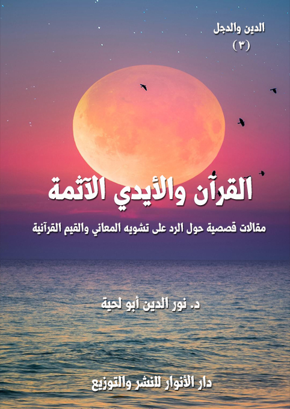

الكتاب: القرآن والأيدي الآثمة
المؤلف: أ.د. نور الدين أبو لحية
الناشر: دار الأنوار للنشر والتوزيع
الطبعة: الثانية، 1437 هـ
عدد الصفحات: 148
ISBN: 978-3-330-84647-0
لمطالعة الكتاب من تطبيق مؤلفاتي المجاني وهو أحسن وأيسر: هنا

التعريف بالكتاب
في هذه المقالات القصصية نحاول أن نتلمس بكل هدوء الانحرافات التي جعلت المسلمين ينحرفون عن هدي كتابهم، بل يشوهونه.. فيحولونه من كتاب هداية وتبصرة وذكرى وموعظة إلى كتاب تاريخ وأسطورة وخرافة وشعوذة وإرهاب.. أو يعطلون معانيه.. أو يحرفونها تحريفا شديد.
القرآن والأيدي الآثمة (4)
(القرآن الكريم هو حبل الله المتين.. وهو الذكر الحكيم، والصراط المستقيم.. وهو الذي لا تزيغ به الأهواء، ولا تلتبس به الألسن، ولا يشبع منه العلماء، ولا يخلق على كثرة الرد، ولا تنقضي عجائبه.. من قال به صدق، ومن عمل به أجر، ومن حكم به عدل، ومن دعا إليه هدي إلى صراط مستقيم..)
هذه العبارات وغيرها نسمعها كثيرا.. ونرددها كثيرا.. ولكنا عند التأمل في حياتنا بجوانبها المختلفة نجد الهوة السحيقة بين تلك الأوصاف العظيمة، وبين واقعنا الممتلئ بالمآسي.
ولذلك فإنا في هذه المقالات نحاول أن نتلمس بكل هدوء تلك الانحرافات التي جعلت المسلمين ينحرفون عن هدي كتابهم، بل يشوهونه.. فيحولونه من كتاب هداية وتبصرة وذكرى وموعظة إلى كتاب تاريخ وأسطورة وخرافة وشعوذة وإرهاب.. أو يعطلون معانيه.. أو يحرفونها تحريفا شديد.
وقد أخبر الله سبحانه وتعالى أن هذا الانحراف سيقع في هذه الأمة كما وقع في غيرها من الأمم.. قال تعالى: {هُوَ الَّذِي أَنْزَلَ عَلَيْكَ الْكِتَابَ مِنْهُ آيَاتٌ مُحْكَمَاتٌ هُنَّ أُمُّ الْكِتَابِ وَأُخَرُ مُتَشَابِهَاتٌ فَأَمَّا الَّذِينَ فِي قُلُوبِهِمْ زَيْغٌ فَيَتَّبِعُونَ مَا تَشَابَهَ مِنْهُ ابْتِغَاءَ الْفِتْنَةِ وَابْتِغَاءَ تَأْوِيلِهِ وَمَا يَعْلَمُ تَأْوِيلَهُ إِلَّا اللَّهُ
القرآن والأيدي الآثمة (5)
وَالرَّاسِخُونَ فِي الْعِلْمِ يَقُولُونَ آمَنَّا بِهِ كُلٌّ مِنْ عِنْدِ رَبِّنَا وَمَا يَذَّكَّرُ إِلَّا أُولُو الْأَلْبَابِ} [آل عمران: 7]
فقد وجد في تاريخنا وتراثنا الكثير ممن يتتبع المتشابه، ويفسر الدين على أساسه.. بل يؤول المحكم لينسجم مع هواه.. تاركا الراسخين في العلم الذين أخبر الله أنهم يدركون المحكم، ويفقهون المتشابه.
ولذلك تحول القرآن الكريم بواسطة تلك الأيدي الآثمة إلى كتاب يحض على الكراهية، ويدعو إلى الأسطورة، وينشر الخرافة، ويحرض على الإرهاب، ويفرق بين الناس على أسس عنصرية مقيتة.
وهذا نفس ما حصل في الأمم السابقة التي هجرت كتابها أو حرفت معانيه.. كما قال تعالى: {وَإِذْ أَخَذَ اللَّهُ مِيثَاقَ الَّذِينَ أُوتُوا الْكِتَابَ لَتُبَيِّنُنَّهُ لِلنَّاسِ وَلَا تَكْتُمُونَهُ فَنَبَذُوهُ وَرَاءَ ظُهُورِهِمْ وَاشْتَرَوْا بِهِ ثَمَنًا قَلِيلًا فَبِئْسَ مَا يَشْتَرُونَ} [آل عمران: 187]، وقال: {وَلَمَّا جَاءَهُمْ رَسُولٌ مِنْ عِنْدِ اللَّهِ مُصَدِّقٌ لِمَا مَعَهُمْ نَبَذَ فَرِيقٌ مِنَ الَّذِينَ أُوتُوا الْكِتَابَ كِتَابَ اللَّهِ وَرَاءَ ظُهُورِهِمْ كَأَنَّهُمْ لَا يَعْلَمُونَ} [البقرة: 101]
ومما ورد في تفسير هذه الآيات قول الإمام الجواد: (وكل أمة قد رفع الله عنهم علم الكتاب حين نبذوه وولاهم عدوهم حين تولوه، وكان من نبذهم الكتاب أن أقاموا حروفه وحرفوا حدوده، فهم يروونه ولا يرعونه، والجهال
القرآن والأيدي الآثمة (6)
يعجبهم حفظهم للرواية، والعلماء يحزنهم تركهم للرعاية) (1)
وقد أشار أبو حامد الغزالي إلى النبذ الخطير لجواهر القرآن وحقائقه العظيمة، فقال: (إني أنبهك على رقدتك، أيها المسترسل في تلاوتك، المتخذ دراسة القرآن عملا، المتلقف من معانيه ظواهر وجملا، إلى كم تطوف على ساحل البحر مغمضا عينيك عن غرائبها؟ أوما كان لك أن تركب متن لجتها لتبصر عجائبها؟ وتسافر إلى جزائرها لآجتناء أطايبها؟ وتغوص في عمقها فتستغني بنيل جواهرها؟ أوما تعير نفسك في الحرمان عن دررها وجواهرها بإدمان النظر إلى سواحلها وظواهرها؟ أوما بلغك أن القرآن هو البحر المحيط؟ ومنه يتشعب علم الأولين والآخرين كما يتشعب عن سواحل البحر المحيط أنهارها وجداولها؟ أوما تغبط أقواما خاضوا في غمرة أمواجها فظفروا بالكبريت الأحمر؟ وغاصوا في أعماقها فاستخرجوا الياقوت الأحمر، والدر الأزهر، والزبرجد الأخضر؟) (2)
وقد أشار قبل ذلك كله رسول الله صلى الله عليه وآله وسلم حين ذكر الفئة الباغية التي تنحرف بالأمة انحرافا شديدا، فجعل من أهم أوصافها إقامتها لحروف القرآن، وإعراضها عن معانيه وحقائقه ومقاصده، ففي الحديث عن أبي ذرّ رضي الله عنه قال: قال رسول الله صلى الله عليه وآله وسلم: (إن بعدى من أمتى (أو سيكون
__________
(1) ... الكافي: 8/ 53 / 16..
(2) ... جواهر القرآن (ص: 21)
القرآن والأيدي الآثمة (7)
بعدى من أمتى) قوم يقرأون القرآن لا يجاوز حلاقيمهم يخرجون من الدين كما يخرج السهم من الرّميّة، ثم لا يعودون فيه، هم شر الخلق والخليقة) (1)
وفي حديث آخر قال رسول الله صلى الله عليه وآله وسلم: (سيكون في أمتي اختلاف وفرقه؛ قوم يحسنونَ القيلَ، ويسيئون الفعلَ، يقرءونَ القرآن لا يجاوز تراقيهم، يمرقون من الدين مروق السهم من الرّميّة، لا يرجعون حتى يرتد على فُوقِهِ؛ هم شر الخلق والخليقةِ، طُوبى لمن قتلهم وقتلوه، يدعون إلى كتاب الله وليسوا منه في شيء، من قاتلهم كان أولى بالله منهم) (2)
وبناء على هذه الدعوة من رسول الله صلى الله عليه وآله وسلم لمواجهتهم وحربهم كانت هذه المقالات..
فنحن لا ننقدهم أو نحذر منهم لشهوة في نفوسنا، وإنما لأنه لا يمكن أن يعرف الناس دين الله، ولا أن يعيشوا في صحبة كتاب الله، وهم يرون المنحرفين عنه هم الذين يمثلونه في الإعلام والمنابر وكل المنصات..
وقد بدأ التحذير من هذه الأيدي الملوثة في عهد رسول الله صلى الله عليه وآله وسلم نفسه، وفي القرآن الكريم..
فعندما يقول الله سبحانه وتعالى {وَمِنَ النَّاسِ مَنْ يَشْتَرِي لَهْوَ الْحَدِيثِ لِيُضِلَّ عَنْ سَبِيلِ اللَّهِ بِغَيْرِ عِلْمٍ وَيَتَّخِذَهَا هُزُوًا أُولَئِكَ لَهُمْ عَذَابٌ مُهِينٌ}
__________
(1) ... رواه مسلم.
(2) ... رواه أبو داود (4765)
القرآن والأيدي الآثمة (8)
[لقمان: 6] فإنه يشير إلى أولئك الأسطوريين الذين حولوا الحقائق القرآنية الجميلة إلى حكايات لا تختلف عن حكايات ألف ليلة وليلة، أو حكايات رستم واسفنديار التي كان يحكيها النضر بن الحارث ليشغل بها الناس عن حقائق القرآن الكريم المتضمنة في قصصه.
وعندما يذكر القرآن الكريم آلام رسول الله صلى الله عليه وآله وسلم وهو يشكو إلى ربه قومه قائلا: {يَارَبِّ إِنَّ قَوْمِي اتَّخَذُوا هَذَا الْقُرْآنَ مَهْجُورًا} [الفرقان: 30]، فإنه يشير إلى ذلك التعطيل لحقائق القرآن الكريم المرتبطة بالأنفس والآفاق، والدنيا والآخرة، والانشغال عنها بعلوم كثيرة، وتوافه كثيرة.
وعندما يدعو القرآن الكريم إلى الاعتصام بحبل الله وعدم التفرق، كما في قوله تعالى: {وَاعْتَصِمُوا بِحَبْلِ اللَّهِ جَمِيعًا وَلَا تَفَرَّقُوا وَاذْكُرُوا نِعْمَتَ اللَّهِ عَلَيْكُمْ إِذْ كُنْتُمْ أَعْدَاءً فَأَلَّفَ بَيْنَ قُلُوبِكُمْ فَأَصْبَحْتُمْ بِنِعْمَتِهِ إِخْوَانًا} [آل عمران: 103]، فإنه يشير إلى أولئك {الَّذِينَ فَرَّقُوا دِينَهُمْ وَكَانُوا شِيَعًا لَسْتَ مِنْهُمْ فِي شَيْءٍ إِنَّمَا أَمْرُهُمْ إِلَى اللَّهِ ثُمَّ يُنَبِّئُهُمْ بِمَا كَانُوا يَفْعَلُونَ} [الأنعام: 159]
وهكذا نجد القرآن الكريم نفسه ينبهنا إلى أن الأمة ستعطل كتاب ربها في كل شؤون حياتها..
وبناء على هذا حاولنا في هذه المقالات أن نرسم صورة لتلك التشويهات التي طالت القرآن الكريم.. وذلك لغرضين:
الأول: هو التنبيه إلى خطورتها وضلالها وانحرافها، وأن القرآن الكريم
القرآن والأيدي الآثمة (9)
أسمى من أن تعبر عنه تلك الأيادي الملوثة، وتلك العقول المشوهة.
الثاني: هو الدعوة لإعادة قراءة قرآن الكريم غضا طريا كما أنزله الله، وكما فهمه أولياء الله الذين هم الصراط المستقيم الذي أوصانا الله بالتمسك به، والاهتداء بهديه.. وسنكتشف حينها فقط حقيقة مقولة الإمام علي كرم الله وجهه: (فتجلّى لهم سبحانه في كتابه من غير أن يكونوا رأوه) (1)
__________
(1) ... نهج البلاغة: الخطبة 147.
القرآن والأيدي الآثمة (10)
في ذلك اليوم قدر الله لي أن أسمع سورة قرآنية واحدة من عقلين وقلبين مختلفين تماما.. مختلفين في المشرب، وفي السلوك، وفي التعامل مع قضايا الحياة المختلفة..
وقد تعجبت في البداية عن سر ذلك الاختلاف الشاسع بينهما مع أن كليهما يرفع راية القرآن الكريم، ويدعي أنه خادمه وتلميذه، ولكليهما أتباع وأصحاب.. ولكن مع ذلك كانا، وكأنهما من ديانتين مختلفتين تماما..
عندما عدت إلى بيتي في الليل بعد مروري عليهما، وبعد محاولة تحليل ما رأيت وما سمعت عرفت سر قوله تعالى: {يُسْقَى بِمَاءٍ وَاحِدٍ وَنُفَضِّلُ بَعْضَهَا عَلَى بَعْضٍ فِي الْأُكُلِ} [الرعد: 4]، وعرفت أن التفضيل لا يعني التنوع فقط، كالتفضيل الذين نراه بين التفاح والبرتقال وغير ذلك من الفواكه.. وإنما قد يعني أيضا التفضيل بين العشبة التي جعلها الله ترياقا لكل الأدواء، وبين العشبة التي جعلها سما زعافا تقضي على كل صحة وعافية.
ولأدع لكم الفرصة لتكتشفوا ما اكتشفت، وتحكموا بما ترونه، سأحكي لكم الحكاية كما حصلت.. ولا تحسبوا أنها حكاية من وحي الخيال.. إنها بنت الواقع المؤلم الذي نعيشه.. ولكنها محروسة بالرمز.. فالذي يفهم الرمز، ويفك شيفرته سيفهم المراد العميق منها.. والذي يفهم العبارة، ولا يجاوزها إلى الإشارة، فحسبه أن يرى قشرتها، وينعم بالنظر إلى طلائها.
القرآن والأيدي الآثمة (11)
مررت عليه وهو على كرسيه الذي تعود أن يجلس عليه بين مريديه وتلامذته.. وكان القارئ يقرأ سورة العصر بترتيل خاشع جميل.
بعد أن انتهى من قراءتها التفت الشيخ إلى المحيطين حوله، وقال: سنحاول أن نستمع للمعاني التي أراد الله إبلاغنا إياها من خلال هذه السورة الكريمة (1)..
إن القسم بالعصر في هذه السورة يفيد كون الإنسان يجهل خسرانه، ويبعد أن يدركه ما دام لا يشعر بحقيقة ما كان عليه قبل تعلّق الروح بالجسم المعدني.. أمّا لو تخيل ذلك.. عندما كان جوهرا خالصا متخلّصا من عموم المواد، وسائر لوازم الفساد، لاعترف بخسرانه بالنظر لما هو عليه الآن، ومن أين له أن يدرك ذلك، وهو مكبل بشهواته، مسجون في ظروف طبيعته، وتلك الحالة هي أبعد المراتب، وأقصى الغايات التي تبعد به عن نيل سعادته الأبديّة.
وكذلك يبقى ما دامت بصيرته لم تنفذ إلى ما وراء هذه الظروف المحدقة به، ولكن لا تنفذ إلاّ بتصريح برهان {فَانْفُذُوا لَا تَنْفُذُونَ إِلَّا بِسُلْطَانٍ
__________
(1) ... اقتبسنا هذا التفسير الإشاري بتصرف من (رسالة مفتاح علوم السر في تفسير سورة والعصر) للشيخ ابن عليوة، باعتباره هو شيخ الإشارة في هذه الحكاية.. وخصمه السلفي الذي كفره هو شيخ العبارة.
القرآن والأيدي الآثمة (12)
} [الرحمن: 33]، وإذ ذاك يدرك خسرانه بالنسبة لما كان عليه قبل تعلّق الروح بالبدن، ولو تخيّل ذلك لما احتيج للتوكيد.
قال بعض الجالسين: لقد شوقتنا يا شيخنا.. فحدثنا عن عوالم الجمال التي كان يعيشها الإنسان قبل نزوله إلى هذا العالم.
قال الشيخ، وهو شاخص البصر، وكأنه يرى ما لا نقدر على رؤيته، أو كأنه يشاهد شيئا، وهو يصفه كما يشاهده: في تلك العوالم الجميلة كانت الروح في كرامة عظيمة وحالة جسيمة، تتلّقى أمرها من الله من غير واسطة، وتجيب جوابا خاليا من كلّ شبهة.. ولم تفقد حظّها من تلك الكرامة ولو بعد هبوطها وتعلّقها بأول جسم للإنسان فإنّه توجها بتاج العلم، وكلّلها بإكليل الفهم، وعلمها ما لم تكن تعلم، وكفاها أنّه أسجد لها الملائكة، وعموم الأرواح كالذر وفي ظهر آدم.
قال تلميذ آخر: فكيف انتقل الإنسان من تلك الأحوال السامية إلى الأحوال الحيوانية، وما قدر الخسارة التي خسرها بسبب ذلك؟
قال الشيخ: إنّ رابطة الجسم أكسبت الروح صبغة غير التي كانت عليها، فلم يشعر الإنسان إلاّ وهو نوع من أنواع الحيوان يعمل بحكم الطبيعة داخل الجنس العام، وشتان ما بين المرتبتين.. بين حال الإنسان الأوّل، وحال الإنسان الثاني.. فعلى ما يقتضيه البون الشاسع بين الرتبتين صار كأنّه لم يكن هو.. بل ليس بمستبعد إن قلنا: إنّ الإنسان الأول هو غير
القرآن والأيدي الآثمة (13)
الإنسان الثاني مهما كان يطلق لفظ الإنسان على المعنيين.
قال تلميذ آخر: أنت تشير بهذا إلى الحقيقة الإنسانية، وأن ما عليه الإنسان الآن ليس سوى نشأة من النشآت، وأن هناك نشآت كثيرة سابقة، كان الإنسان فيها في أعلى عليين..
قال الشيخ: أجل.. وقد عبر العرفاء عن ذلك النزول بـ (قوس النزول).. ويعنون به ذلك العالم الذي يبدأ من العقل والمجردات التامة والملائكة المقربين، وينتهي إلى أدنى موجود وهو الهيولى والمادة الأولى لعالم الطبيعة.
قال التلميذ: وجود قوس نزول يقتضي وجود قوس صعود.
قال الشيخ: أجل.. وهي التي أشار إليها قوله تعالى: {الَّذِينَ يَظُنُّونَ أَنَّهُمْ مُلَاقُو رَبِّهِمْ وَأَنَّهُمْ إِلَيْهِ رَاجِعُونَ} [البقرة: 46]، وقوله: {إِنَّا لِلَّهِ وَإِنَّا إِلَيْهِ رَاجِعُونَ} [البقرة: 156]
قال التلميذ: فكيف يحدد مصير الإنسان في قوس الصعود؟
قال الشيخ: هذه النشأة هي المنطلق لتحديد مصير الإنسان النهائي.. فباستطاعة الإنسان أن يتدارك ما فاته من عزّة.. وليس ذلك إلاّ أن يكون بالروح إنسانا، وذلك يتم بالتحقق بمقتضى قوله تعالى: {إِلَّا الَّذِينَ آمَنُوا وَعَمِلُوا الصَّالِحَاتِ وَتَوَاصَوْا بِالْحَقِّ وَتَوَاصَوْا بِالصَّبْرِ} [العصر: 3]
فالخلاص النهائي لا يتحقّق ولا يتصوّر بمعناه اللازم إلاّ باستجماع
القرآن والأيدي الآثمة (14)
تلك الخصال الأربعة وهي: الإيمان، والأعمال الصالحة، والتواصي بالحقّ، والتواصي بالصبر عليه، أمّا إذا فات الإنسان - والعياذ بالله - حظّه من الإيمان في هاته الحياة، الدنيا فقد خسر خسرانا مبينا يجعله يقول يوم يرى سعادة السعداء بالنظر إلى شقاوة الأشقياء: {يَالَيْتَنِي كُنْتُ تُرَابًا} [النبأ: 40]
أمّا إذا نال حظّه من الإيمان في هاته الدنيا بالقدر الذي يفصله عن محيط الكفران بالله ورسوله، فقد يتقدّم بذلك شوطا غير قصير في سبيل سعادته ونيل بغيته.
ولكن لا تثبت أقدامه في ذلك الدور إلاّ بالأعمال الصالحة، والأعمال الصالحة هي جنس يدخل تحته أفراد كلّ فعل محمود، ويخرج منه كلّ فعل مذموم.
وهذا الدور يعتبر أرفع درجة في نيل السعادة غير أنّه لا تستقر أقدام صاحبه استقرارا تاما إلاّ مع التواصي بالحقّ، ومن لم يتواص بالحقّ قل أن يصبر في طريق الحقّ، بناء على أن رأس الأعمال الصالحة هو الأمر بالمعروف والنهي عن المنكر، ومن لم ينه ويأمر يخش عليه يوما من الأيام يصبح فيه حيث لا نهي ولا أمر.
وهكذا يسير المؤمن من العرفان إلى الشريعة، فيتمسك بها، فلا طريق إلى الله إلا من خلالها.
أصابتني رعشة شديدة، وأنا أسمع لهذه الكلمات.. لقد كانت تنبيهات
القرآن والأيدي الآثمة (15)
قوية تنبه كل راقد وقاعد وراكن إلى الدنيا ليقوم بالاستعداد لصناعة مصيره الأبدي قبل أن يتحسر حسرة لا حد لها..
ظل الشيخ يردد ذلك، ويشرحه بطرق مختلفة، وكان تلاميذه وكأن على رؤوسهم الطير سكونا وخشوعا.. وكان المكان البسيط الذي كنا نجلس فيه قد تحول إلى قطعة من عالم الملكوت الواسع الجميل.
بعد أن انتهى الشيخ من درسه، التفت إلى مريديه، وقال: من فهم منكم من السورة شيئا آخر، فليتقدم به.. فأنتم تعلمون أن القرآن الكريم لا تنتهي عجائبه، ولا تفنى عطاياه.
رفع أحد التلاميذ يده، وقال: يا شيخ.. ائذن لي أن أطرح لك إشكالا وقع لي، ولبعض زملائي.. ولكن لا علاقة له بالسورة الكريمة.
أذن له الشيخ، فقال: سيدي مع احترامنا لك ولمجلسك، وللعلوم العظيمة التي نستفيدها منك، ولما نراه من تأثيرها على حياتنا جميعا.. إلا أن هناك من يعيبون علينا جلوسنا بين يديك.. وهم يذكرون لنا بأنك لا تحمل أي إجازة من مشايخ الحديث أو اللغة أو غيرها حتى يتاح لك أن تتكلم في القرآن الكريم.. بل يذكرون لنا أنك أمي.. وليست لك البلاغة الكافية التي تؤهلك للحديث عن القرآن الكريم.. لقد ذكروا لنا أن من يرفع المنصوب، وينصب المرفوع أقل من أن يفهم القرآن لنفسه، فكيف يفهمه لغيره.
ابتسم الشيخ، وقال: لقد ذكرتني يا بني بشبابي الباكر عندما كنا ننشغل
القرآن والأيدي الآثمة (16)
فيه بالنحو والصرف والبلاغة عن الكنوز العظيمة التي يحويها القرآن الكريم..
كنا حينها نأتي بالآية الواحدة، ونعربها بالوجوه الكثيرة.. وننتفخ مع كل إعراب.. ثم لا نلتفت لمعناها، ولا نعيشه.. بل لا تزيدنا تلك القدرات التي أتيحت لنا إلا حجابا عن فهم القرآن.. حينها التقيت شيخا من العارفين، قال لي: (أقبح كلّ قبيح أن يتعلّم الإنسان نحو اللسان ويعلّمه، ولا يتعلّم نحو القلب ويعلّمه، مع أنّه محلّ نظر الربّ، فإذا كان نحو اللسان مع نحو الجنان كان صاحبهما في أمان، ولا يخشى عليه الخسارة والخذلان، يوم وقوفه بين يدي الرحمن، لأنّ الله تبارك وتعالى لا يثيب العباد على إعرابهم، وإنّما يثيبهم على قلوبهم) (1)
والتقيت آخر، قال لي: (ما عرفنا من النحو إلاّ إعراب قوله تعالى: {إِنْ يَكُونُوا فُقَرَاءَ يُغْنِهِمُ اللَّهُ مِنْ فَضْلِهِ} [النور: 32]، إنّ حرف شرط، ويغنهم جواب الشرط، والمقصود بالغنى الغنى الأكبر فيكون خطابه للمتوجهين على طريق أهل الإشارة) (2)
وحكي لنا آخر أن بعض النحويين دخل مجلس الحسن بن سمعون ليسمع كلامه فوجده يلحن، فانصرف ذامّا له، فبلغ ذلك الحسن، فكتب له:
__________
(1) ... ابن عليوة، المنح القدوسية، ص 20.
(2) ... ابن عليوة، المنح القدوسية، ص 21.
القرآن والأيدي الآثمة (17)
(إنك من كثرة الإعجاب رضيت بالوقوف دون الباب، فاعتمدت على ضبط أقوالك مع لحن أفعالك، وإنك قد تهت بين خفض ورفع ونصب وجزم، فانقطعت عن المقصود، هلّا رفعت إلى اللّه جميع الحاجات، وخفضت كل المنكرات، وجزمت عن الشهوات، ونصبت بين عينيك الممات؟ واللّه يا أخي ما يقال للعبد لم لم تكن معربا، وإنما يقال له: لم كنت مذنبا؟ ليس المراد فصاحة المقال، وإنما المراد فصاحة الفعال، ولو كان الفضل في فصاحة اللسان، لكان سيدنا هارون أولى بالرسالة من سيدنا موسى، حيث يقول: وأَخِي هارُونُ هُوَ أَفْصَحُ مِنِّي لِساناً [القصص: 34]) (1)
حين سمعت هذا جلست لمشايخي من العارفين.. وقد رأيت من أنوار الفهم عندهم ما فتح لقلبي أنوار الحقائق التي كنت محجوبا عنها بظلمات نفسي، وظلمات الغرور الذي كانت تمتلئ به.
سكت قليلا، ثم قال: أنا لا أقول لكم يا أبنائي.. لا تعربوا القرآن.. أو لا تبحثوا عن استعارته ومجازه.. وإنما أقول لكم: عيشوا القرآن.. واسمعوه من الله.. فلا يفقه القرآن من لا يسمعه من ربه.
قال التلميذ: وهذا أيضا مما يعترضونه علينا.. إنهم يذكرون لنا أننا نكفر بذلك.. فرسول الله صلى الله عليه وآله وسلم وحده الذي سمع القرآن من الله.. بل إنه سمعه من الله بواسطة جبريل عليه السلام.
__________
(1) ... إيقاظ الهمم فى شرح الحكم، ص: 386.
القرآن والأيدي الآثمة (18)
ابتسم الشيخ، وقال: ألم يقرؤوا قوله صلى الله عليه وآله وسلم في حديث الولاية: (فإذا أحببته كنت سمعه الذي يسمع به) (1) فـ (والصفة لا تنفك عن موصوفها، ولا تظهر إلا من حجاب لبسها، {وَمَا كَانَ لِبَشَرٍ أَنْ يُكَلِّمَهُ اللَّهُ إِلَّا وَحْيًا أَوْ مِنْ وَرَاءِ حِجَابٍ} [الشورى: 51] موسى عليه السلام لما سمع خطابا من جانب الطور الأيمن لم يستدل على أنه كلام الله يكلمه به إلا به من أجل ما أعطي من سلامة الذوق وصحة الوجدان، وهكذا الواحد منا مهما تقوى يقينه وانشرح باطنه فيما يسمعه من ألفاظ القرآن، فلا يراه إلا كلاما يكلمه الله به في ذلك الحال، ولا يستدل عليه إلا به لما يحده في قلبه من تأثير النزول ورعدة الزواجر) (2)
لقد ذكر لي شيخي بعض ما يحصل لسامع القرآن من الله من تأثير حين سماعه، فقال: (وهكذا لما ينزل به على محمد صلى الله عليه وآله وسلم يحصل من تأثر النزول ما ترتعد به مفاصله، ولن يزال هكذا مهما مر على قلب فارغ من الكدورات إلا ويحدث فيه من تأثير النزول، وقد كان لي نصيب من ذلك والحمد لله، فكنت مهما يطرق سمعي كلام الله فترتعد بوادري عن الفحص حتى كأني أسمع حسيسا من بقية صلصلة الجرس، وكنت إذا ما تناولت المصحف الكريم نتناوله بيد التبجيل والتعظيم، وأراه كتابا وصل إلي من حكيم عليم.. وبهذه
__________
(1) ... صحيح البخاري (8/ 131)
(2) ... ابن عليوة، البحر المسجور، ص 19.
القرآن والأيدي الآثمة (19)
الخاصية والحمد لله أطلعني الله على بعض من جواهره) (1)
قال التلميذ: لو قلنا لهم ما ذكرته الآن لرمونا بالحجارة.
قال الشيخ: فقولوا لهم (2): إن مرادنا من سماع القرآن من الله لا يعني إلا أننا نعتبره خطابا مباشرا من الله لنا.. أي أننا المقصودون بكل خطاب في القرآن الكريم، فإن سمعنا أمرا أو نهيا قدرنا أننا المنهيون والمأمورون.. وإن سمعنا وعدا أو وعيدا فكمثل ذلك.. وإن سمعنا قصص الأولين والأنبياء علمنا أن السمر غير مقصود وإنما المقصود ليعتبر به وليأخذ من تضاعيفه ما يحتاج إليه فما من قصة في القرآن إلا وسياقها لفائدة في حق النبي صلى الله عليه وآله وسلم وأمته ولذلك قال تعالى {وَكُلًّا نَقُصُّ عَلَيْكَ مِنْ أَنْبَاءِ الرُّسُلِ مَا نُثَبِّتُ بِهِ فُؤَادَكَ وَجَاءَكَ فِي هَذِهِ الْحَقُّ وَمَوْعِظَةٌ وَذِكْرَى لِلْمُؤْمِنِينَ} [هود: 120] فليقدر العبد أن الله ثبت فؤاده بما يقصه عليه من أحوال الأنبياء وصبرهم على الإيذاء وثباتهم في الدين لانتظار نصر الله تعالى.
وكيف لا يقدر هذا، والقرآن ما أنزل على رسول الله صلى الله عليه وآله وسلم لرسول الله خاصة، بل هو شفاء وهدى ورحمة ونور للعالمين، ولذلك أمر الله تعالى الكافة بشكر نعمة الكتاب فقال تعالى: {وَاذْكُرُوا نِعْمَتَ اللَّهِ عَلَيْكُمْ وَمَا أَنْزَلَ عَلَيْكُمْ مِنَ الْكِتَابِ وَالْحِكْمَةِ يَعِظُكُمْ بِهِ} [البقرة: 231]، وقال عز وجل: {لَقَدْ
__________
(1) ... البحر المسجور: 19 - 20.
(2) ... انظر: إحياء علوم الدين (ج 1/ 285)
القرآن والأيدي الآثمة (20)
أَنْزَلْنَا إِلَيْكُمْ كِتَابًا فِيهِ ذِكْرُكُمْ أَفَلَا تَعْقِلُونَ} [الأنبياء: 10].. وغيرها من الآيات الكريمة، وإذا قصد بالخطاب جميع الناس فقد قصد الآحاد، فهذا القارئ الواحد مقصود، فما له ولسائر الناس، فليقدر أنه المقصود، قال الله تعالى: {وَأُوحِيَ إِلَيَّ هَذَا الْقُرْآنُ لِأُنْذِرَكُمْ بِهِ وَمَنْ بَلَغَ} [الأنعام: 19]، وقد قال بعض مشايخنا بعد قراءته للآية الكريمة: (من بلغه القرآن فكأنما كلمه الله)
وفي هذه الحالة، وعند تقديره أنه المقصود من كل خطاب، لم يتخذ دراسة القرآن عمله، بل يقرؤه كما يقرأ العبد كتاب مولاه الذي كتبه إليه، ليتأمله، ويعمل بمقتضاه، ولذلك قال بعض مشايخنا: (هذا القرآن رسائل أتتنا من قبل ربنا عز وجل بعهوده نتدبرها في الصلوات، ونقف عليها في الخلوات، وننفذها في الطاعات والسنن المتبعات)
وكان بعض مشايخنا في الزاوية يزورنا، ونحن نحفظ القرآن أو نراجعه، ويقول: (ما زرع القرآن في قلوبكم يا أهل القرآن، إن القرآن ربيع المؤمن كما أن الغيث ربيع الأرض)
قال تلميذ آخر: إنهم يا شيخنا يقولون لنا: إنكم لن تستفيدوا من تلك الإشارات إلا بعدا عن حقائق القرآن.. فالقرآن عبارة لا إشارة.. وقد يخطئ الإنسان في الإشارة.. لكنه لن يخطئ أبدا في العبارة، لأنها محروسة باللغة والإعراب والبلاغة وكلام أساطين المفسرين.
القرآن والأيدي الآثمة (21)
قال الشيخ: ليس الشأن يا بني أن نعرب القرآن أو نستخرج درر بلاغته.. الشأن أن نتأثر بالقرآن.. فالقرآن يحدث في قلب الإنسان آثارا مختلفة بحسب اختلاف الآيات، فيكون له بحسب كل فهم حال ووجد يتصف به قلبه من الحزن والخوف والرجاء وغيره.
وهكذا فإن قلب المؤمن إذا تمت معرفته تغلب عليه الخشية في عامة أحواله، لأن ذلك من مقاصد القرآن الكريم لتربية النفوس وتطهيرها.. ولهذا لا نرى ذكر المغفرة والرحمة إلا مقرونا بشروط يقصر العارف عن نيلها كقوله عز وجل: {وَإِنِّي لَغَفَّارٌ} [طه: 82]، ثم أتبع ذلك بأربعة شروط: {لِمَنْ تَابَ وَآمَنَ وَعَمِلَ صَالِحًا ثُمَّ اهْتَدَى} [طه: 82]
ومثل ذلك السورة التي كنا نحاول أن نسمعها من الله، فقد ذكر الله أربعة شروط لتحقيق الفوز والفلاح.
ومن فهم ذلك فجدير بأن يكون حاله الخشية والحزن، ولذلك كان بعض مشايخنا يقول: (والله ما أصبح اليوم عبد يتلو القرآن يؤمن به إلا كثر حزنه، وقل فرحه، وكثر بكاؤه، وقل ضحكه، وكثر نصبه وشغله، وقلت راحته وبطالته)
وقال شيخ آخر، وقد رآنا ننشغل بالروايات والأحاديث عن القرآن الكريم: (نظرنا في هذه الأحاديث والمواعظ فلم نجد شيئا أرق للقلوب ولا أشد استجلابا للحزن من قراءة القرآن وتفهمه وتدبره)
القرآن والأيدي الآثمة (22)
وهكذا فإن تأثر العبد بالتلاوة تجعله يصير بصفة الآية المتلوة، فعند الوعيد وتقييد المغفرة بالشروط يتضاءل من خيفته كأنه يكاد يموت، وعند التوسع ووعد المغفرة يستبشر كأنه يطير من الفرح.
وعند ذكر الله وصفاته وأسمائه يتطأطأ خضوعا لجلاله واستشعارا لعظمته.. وعند ذكر الكفار ما يستحيل على الله عز وجل يغض صوته، ويكسر في باطنه حياء من قبح مقالتهم.
وعند وصف الجنة ينبعث بباطنه شوقا إليها.. وعند وصف النار ترتعد فرائصه خوفا منها.
وإذا قال: {رَبَّنَا عَلَيْكَ تَوَكَّلْنَا وَإِلَيْكَ أَنَبْنَا وَإِلَيْكَ الْمَصِيرُ} [الممتحنة: 4] ولم يكن حاله التوكل والإنابة كان حاكيا.
وإذا قال: {وَلَنَصْبِرَنَّ عَلَى مَا آذَيْتُمُونَا} [إبراهيم: 12] فليكن حاله الصبر أو العزيمة عليه حتى يجد حلاوة التلاوة.
فإن لم يكن بهذه الصفات ولم يتردد قلبه بين هذه الحالات كان حظه من التلاوة حركة اللسان مع صريح اللعن على نفسه في قوله تعالى: {أَلَا لَعْنَةُ اللَّهِ عَلَى الظَّالِمِينَ} [هود: 18]، وهكذا في كل موضع فيه لعنة.. ولهذا ورد في الحديث: (رب تال للقرآن والقرآن يلعنه) (1)
وإذا لم يكن يقرأ بهذه الصفة كان داخلا في معنى قوله عز وجل: {
__________
(1) ... ابن أبي حاتم في تفسيره ج:6 ص:2017.
القرآن والأيدي الآثمة (23)
وَمِنْهُمْ أُمِّيُّونَ لَا يَعْلَمُونَ الْكِتَابَ إِلَّا أَمَانِيَّ وَإِنْ هُمْ إِلَّا يَظُنُّونَ} [البقرة: 78] يعني التلاوة المجردة.
وقد أشار القرآن الكريم إلى هذا في قوله عز وجل: {وَكَأَيِّنْ مِنْ آيَةٍ فِي السَّمَاوَاتِ وَالْأَرْضِ يَمُرُّونَ عَلَيْهَا وَهُمْ عَنْهَا مُعْرِضُونَ} [يوسف: 105]، لأن القرآن هو المبين لتلك الآيات في السموات والأرض.. ومهما تجاوزها ولم يتأثر بها كان معرضا عنها.
كان بعض مشايخنا يمر علنا، ونحن نقرأ القرآن في الزاوية، ويقول لنا: (إياكم وأن يكون حظكم من القرآن إقامة حروفه.. فإن من لم يكن متصفا بأخلاق القرآن، إذا قرأ القرآن ناداه الله تعالى: مالك ولكلامي وأنت معرض عني، دع عنك كلامي، إن لم تتب إلي)
قال ذلك، ثم التفت لتلميذه الذي سأله، وقال: هل تعلم ما هو مثال العاصي إذا قرأ القرآن وكرره؟
قال التلميذ: وما مثاله؟
قال الشيخ: مثله مثل من يكرر كتاب الملك في كل يوم مرات وقد كتب إليه في عمارة مملكته وهو مشغول بتخريبها ومقتصر على دراسة كتابه.
وقد أشار القرآن الكريم إلى ذلك في قوله عز وجل: {فَنَبَذُوهُ وَرَاءَ ظُهُورِهِمْ وَاشْتَرَوْا بِهِ ثَمَنًا قَلِيلًا فَبِئْسَ مَا يَشْتَرُونَ} [آل عمران: 187]
وأشار إلى حال المؤمنين عند قراءته، فقال: {إِنَّمَا الْمُؤْمِنُونَ الَّذِينَ إِذَا ذُكِرَ
القرآن والأيدي الآثمة (24)
اللَّهُ وَجِلَتْ قُلُوبُهُمْ وَإِذَا تُلِيَتْ عَلَيْهِمْ آيَاتُهُ زَادَتْهُمْ إِيمَانًا وَعَلَى رَبِّهِمْ يَتَوَكَّلُونَ} [الأنفال: 2]
قال لي بعض زملائي أثناء التحصيل: قرأت القرآن على شيخ لي، ثم رجعت لأقرأ ثانيا فانتهرني، وقال: جعلت القرآن علي عملا، اذهب فاقرأ على الله عز وجل، فانظر بماذا يأمرك وبماذا ينهاك (1).
قال التلميذ: اسمح لنا سيدنا أن نذكر لك ما يثيره فينا تلاميذ شيخ العبارة من الإشكالات.
قال الشيخ: اذكر ما بدا لك.. فمتى حجرت عليكم أن تسألوني؟
قال التلميذ: لقد ذكروا لنا أن الله أكرم وأعدل من أن يخص أحدا دون أحد بفهم كتابه.. فالكتاب للناس جميعا.. وذلك لا تقوم به إلا العبارة.
قال الشيخ: صدقوا في هذا، فالله أكرم من أن يحرم خلقه.. ولكنه غني كريم، فلا يعطي عطاءه لمن رغب عنه، ألم تسمع قوله تعالى: {كُلًّا نُمِدُّ هَؤُلَاءِ وَهَؤُلَاءِ مِنْ عَطَاءِ رَبِّكَ وَمَا كَانَ عَطَاءُ رَبِّكَ مَحْظُورًا} [الإسراء: 20].. فكما أن ظاهر جلد المصحف وورقه محروس عن ظاهر بشرة اللامس إلا إذا كان متطهراً، فباطن معناه أيضاً بحكم عزه وجلاله محجوب عن باطن القلب إلا إذا كان متطهراً عن كل رجس ومستنيراً بنور التعظيم والتوقير.. وكما لا يصلح لمس جلد المصحف كل يد، فلا يصلح لتلاوة حروفه كل لسان ولا
__________
(1) ... إحياء علوم الدين (ج 1/ 286).
القرآن والأيدي الآثمة (25)
لنيل معانيه كل قلب (1).
لقد سألت شيخي عن معنى الطهارة التي تبيح مس المصحف، فقال: (طهارة أهل المحبة الفكرة والنظرة، وطهارة أهل الخدمة بالمجاهدة والمكابدة بين عبادة ظاهرة كصلاة وصيام وذكر وتلاوة وتعليم.. وبين عبادة خفية كخوف ورجاء وزهد وصبر وورع ورضا وتسليم ورحمة وشفقة وغير ذلك مما لا يظهر للعيان.. وأما طهارة أهل الباطن، فهو الغيبة عن الأكوان بشهود المكون، أو الغيبة عن الخلق بشهود الملك الحق..) (2)
قال الشيخ ذلك، ثم التفت لتلميذ آخر، وقال: وأنت.. أظن أنك لديك سؤالا.. وأنت تستحي من ذكره.
قال التلميذ: أجل..
قال الشيخ: اذكر سؤالك يا بني.. فأنت تعلم أن الحيي محروم من الاستفادة.. مثله مثل المستكبر تماما.
قال التلميذ: هم يعترضون على ما ذكرته لنا البارحة عند قوله تعالى: {وَقُلْ رَبِّ أَدْخِلْنِي مُدْخَلَ صِدْقٍ وَأَخْرِجْنِي مُخْرَجَ صِدْقٍ وَاجْعَلْ لِي مِنْ لَدُنْكَ سُلْطَانًا نَصِيرًا} [الإسراء: 80].. لقد ذكرنا لهم ما قلته.. فذكروا أنك مخطئ فيها، والصحيح أن هذه الآية نزلت في فتح مكة، وأن اللّه تعالى أمر رسوله
__________
(1) ... إحياء علوم الدين (ج 1/ 281).
(2) ... إيقاظ الهمم فى شرح الحكم، ص: 70 بتصرف.
القرآن والأيدي الآثمة (26)
صلى الله عليه وآله وسلم أن يقول هذا الدعاء عند دخولها حال فتحها، ومعناه: رب أدخلني مكة مدخل صدق أي: إدخال صدق، بأن يكون دخولي بك واعتمادي عليك ناصرا لدينك بحولك وقوتك، وأخرجني من مكة مهاجرا إلى جهاد عدوك مخرج صدق: أي: إخراج صدق، بأن أكون منصورا بك، معصوما بحفظك ورعايتك، واجعل لي من لدنك سلطانا: أي: برهانا دامغا لكل باطل نصيرا ينصرني على من عاداني.
قال الشيخ: وهل أنكرت أنا هذا التفسير؟
قال التلميذ: لا.. ولكنك ذكرت لنا معه تفسيرا آخر استغربوه.. بل قالوا فيك كلاما شديدا بسببه.
قال الشيخ: لعلكم أخطأتم يا بني في النقل عني.. فهل تذكر لي ما قلتم لهم بالضبط؟
قال التلميذ: محال أن نخطئ في ذلك يا شيخنا.. نحن نسجل كل كلمة تقولها.. سأعيد لك ما ذكرته لنا.
فتح دفتره، ثم راح يقرأ: (هذه الآية الكريمة تدل على أن دخول العارفين في الأشياء كلها يكون باللّه، وخروجهم منها يكون باللّه، وكأن الله يخاطبنا من خلالها بقوله: قل أيها العارف: رب أدخلني في الأشياء حقوقا كانت أو حظوظا مدخل صدق أي: إدخال صدق، بأن يكون ذلك الإدخال بك، معتمدا فيه على حولك وقوتك متبرئا من حولي وقوتي ومن شهود
القرآن والأيدي الآثمة (27)
نفسي، وأخرجني منها مخرج صدق أي: إخراج صدق، بأن أكون مأذونا بإذن خاص، مصحوبا بالخشية وسر الإخلاص، ليكون نظري إلى حولك وقوتك إذا أدخلتني في الأشياء وانقيادي إليك إذا أخرجتني منها.. واجعل لي من لدنك أي: من مستبطن أمورك بلا واسطة ولا سبب سلطانا أي: برهانا قويّا، وليس ذلك إلا وارد قوى من حضرة قهار لا يصادمه شي ء إلا دمغه فيحق الحق ويزهق الباطل، ويكون ذلك السلطان ينصرني على الغيبة عن الحس، وعن شهود السوى حتى نبعد عنهما برؤية مولاهما ولا ينصر علىّ الوهم والحس وشهود الغيرية) (1)
قال الشيخ: نعم.. قلت لكم هذا.. وهو واضح، وليس فيه أي شيء منكر لا من الشريعة، ولا من العقل..
قال التلميذ: ولكنهم يذكرون أن هذا تحريف للقرآن الكريم.. وأننا لا يصح أن نخرج بالآية عما قال المفسرون.
قال الشيخ: صدقوا يا بني في ذلك.. ولا تجادلوهم فيه.. هم تحدثوا عن مرتبتهم الوجودية.. أوعيتهم لا تقبل غير ذلك..
أذكر أني في شبابي الباكر أرسلت لشيخي رسالة أذكر له فيها ما يطرحه المعترضون عليه، فرد علي برسالة قال فيها: (اعلم – أيها الولد المحب- أن من العلوم القرآنية ما هو خاص بالخاصة، ولا يمكن للعامة أن تفهمه أو
__________
(1) ... إيقاظ الهمم فى شرح الحكم، ص: 517.
القرآن والأيدي الآثمة (28)
تتعاطاه، وقد ورد في الأثر: (إن من العلم كهيئة المكنون لا يعلمه إلا العلماء بالله، فإذا أظهروه أنكرته أهل الغرة بالله) (1).. وقد ورد في وصية الإمام علي لتلميذه الصالح كميل: (يا كُميل، إن هذه القلوب أوعية فخيرها أوعاها، فاحفظ عني ما أقول لك: الناس ثلاثة؛ عالم رباني، ومتعلم على سبيل نجاة، وهمج رعاع أتباعُ كل ناعق، مع كل ريح يميلون، لم يستضيئوا بنور العلم ولم يلجئوا إلى ركن وثيق، فاحذر أن تكون منهم يا كميل..)
وقال له شاكيا: (آه لو وجدت لهذا العلم حملة لا أجد إلا لقناً غير مأمون، يستعمل آلة الدين للدنيا، ويستظهر بنعم الله على عباده، وبحججه على أوليائه، أو منقاداً لحملة الحق، ولا بصيرة له في أحناته، ينقدح الشك في قلبه لأول عارض من شُبهة، لا إلى هؤلاء ولا إلى هؤلاء، أو منهوكا باللذة سلس القياد للشهوة، أو مغرماً بالجمع والادخار، ليسا من رعاة الدين في شيء، أقربُ شبهاً بهما الأنعامُ السائمة كذلك يموت العلم بموت حامليه مستترا..)
بعد أن امتلأت بمشاعر عظيمة في مجلس شيخ العبارة، وبعد أن سال
__________
(1) ... قال العراقي في تخريجه: (رواه أبو عبد الرحمن السلمي في الأربعين له في التصوف من حديث أبي هريرة بإسناد ضعيف) (انظر: أبو الفضل العراقي، المغني عن حمل الأسفار، تحقيق: أشرف عبد المقصود، مكتبة طبرية الرياض، 1415 هـ - 1995 م، (ج 1/ 23)
القرآن والأيدي الآثمة (29)
من دموعي ما لم أستطع إيقافه.. وبعد تلك الحسرة التي شعرت بها على تقصيري في حق ربي.. رحت لجهلي وغبائي أبحث عن شيخ العبارة الذي كانوا يتحدثون عنه كل حين.
فسألت عنه، فدلني بعضهم على قصر مهيب.. فتعجبت أن يكون لشيخ العبارة مثل تلك المدرسة.. بينما مدرسة شيخ الإشارة لا تعدو أن تكون كوخا من الأكواخ، أو منزلا بسيطا لا يزيد عن البيوت التي تجاورها شيئا.
وعندما دخلت المدرسة زاد عجبي من كثرة تلاميذها.. وكثرة المتاع المتوفر فيها..
كان التلاميذ في انتظار الشيخ على أحر من الجمر.. وكان بيد كل منهم دفتر وقلم..
دخل الشيخ، وكان ضخم الجثم، حسن البزة، طويل القامة، عريض الهامة، يملأ السمع والبصر..
بدأ القارئ بإشارة من الشيخ يقرأ القرآن الكريم.. وكان العجب أن يقرأ سورة العصر..
بعد قراءتها أخذ الشيخ في تفسيرها، وكان جهوري الصوت، فصيح اللسان، يحرص على أن يقيم القلقة والغنة والمدود ونحوها.. ويحرص على ألا يقع في أي لحن.. سأحكي لكم نموذجا مما كان يقوله، ويمكنكم أن
القرآن والأيدي الآثمة (30)
تقيسوا عليه الباقي..
قال الشيخ: نبدأ باللغة.. (الْعَصْرِ) كما في القاموس: الدهر.. والجمع أعصار وعصور وأعصر وعصر.. والعصر اليوم والليلة والعشي إلى احمرار الشمس.. والغداة والحبس والرهط والعشيرة والمطر من المعصرات والمنع والعطية، عصره يعصره وبالتحريك الملجأ والمنجاة كالعصر بالضم (1).
قال بعض التلاميذ: ماذا قال السلف الصالح في معناه؟
قال الشيخ: لقد ورد عن السلف فيه ثلاثة أقوال (2):
أحدها: أنه الدَّهر، قاله ابن عباس، وزيد بن أسلم، والفراء، وابن قتيبة. وإنما أقسم بالدهر لأن فيه عبرة للناظر من مرور الليل والنهار على تقدير لا ينخرم.
والثاني: أنه العشي، وهو ما بين زوال الشمس وغروبها، قاله الحسن وقتادة.
والثالث: صلاة العصر، قاله مقاتل.
قال تلميذ آخر: هلا وضحت لنا كيف نقرؤها غضة طريقة.
قال الشيخ: في ذلك وجوه:: منها ما قرأ به سلام أبو المنذر، حيث قرأ (والعصر) بكسر الصاد والراء.. وهذا إنما يكون في نقل الحركة عند الوقف
__________
(1) ... إعراب القرآن وبيانه (10/ 571).
(2) ... زاد المسير في علم التفسير (4/ 487).
القرآن والأيدي الآثمة (31)
كقولك مررت ببكر تعلو كسرة الراء إلى الكاف عند الوقف.. وكذلك يفعلون في المرفوع ولا ينقلون في المنصوب إلا في ضرورة شاعر، وقد قال سيبويه: الوقف على الاسم بستة أشياء: بالإشمام والإشباع، وروم الحركة، ونقل الحركة، والتشديد، والإسكان.. ونقول الإشمام ضم الشفتين بعد الإسكان في المرفوع والمضموم للإشارة إلى الحركة من صوت والغرض به الفرق الساكن والمسكن في الوقف، والروم هو أن تأتي بالحركة مع إضعاف صوتها والغرض به هو الغرض بالإشمام إلا أنه أتم في البيان من الإشمام فإنه يدركه الأعمى والبصير والإشمام لا يدركه إلا البصير.
قال تلميذ آخر: شكرا لنا شيخنا.. فلنذهب إلى الكلمة الثانية (الْإِنْسانَ)
قال الشيخ: (الْإِنْسانَ) لفظ يقع للذكر والأنثى من بني آدم وربما أنّثت العرب فقالوا إنسان وإنسانة، كما قال الشعر:
إنسانة تسقيك من إنسانها... خمرا حلالا مقلتاها عنبه
وال فيه لاستغراق الجنس فيشمل المؤمن والكافر بدليل الاستثناء.
قال تلميذ آخر: وكلمة (خُسْرٍ).. ما تعني؟
قال الشيخ: الخسر والخسران سواء، قال في المصباح: (خسر في تجارته خسارة بالفتح وخسرا وخسرانا ويتعدى بالهمزة فيقال أخسرته فيها وخسر خسرا وخسرانا أيضا: هلك)
القرآن والأيدي الآثمة (32)
بقي الشيخ هكذا يشرح السورة كلمة كلمة.. ثم أعربها، وأطال في وجوه إعرابها.. ثم تكلم عن البيان والمعاني والبديع.. ثم انتهى من درسه، وطلب من تلاميذه أن يسألوه عما لم يفهموه.
قال أحدهم: شكرا لك شيخنا على هذا التفسير العظيم الذي لم نقرأ مثله.. وأنا أريد أن أسألك سؤالا حول شيخ الإشارة..
غضب الشيخ، وقال: ما به.. ألا يزال ذلك الأمي الملحد يتجرأ على تفسير القرآن.. ألم أكن قد نهيته عن ذلك.. ألم تأت الشرطة بعد لتغلق عليه السرداب الذي ينشر فيه الباطنية وكل أنواع الضلال؟
قال التلميذ: بلى.. لم تأت الشرطة بعد.. وقد كنت في الصباح عنده.. وقد رأيته يفسر هذه السورة بخلاف ما فسرتها.. وقد ملأ تلاميذه رعبا.. بل صور لهم، وكأنهم هم الخاسرون.. لا الكفار والمبتدعة والزنادقة.
قال الشيخ، وهو يضحك: لقد صدق في هذا.. فمن تبعه لا شك في خسارته..
ضحكوا جميعا، لكن أحد التلاميذ قال: ولكن السورة فيها هذا التهديد المخيف.
قال الشيخ: هي تهديد للمبتدعة المنحرفين الضالين.. أما أصحاب الفرقة الناجية، فلا خوف عليهم ولا هم يحزنون.. لقد وردت الآثار الكثيرة عن سلفنا الصالح تضمن النجاة لكل من تمسك بما نتمسك به من السنة
القرآن والأيدي الآثمة (33)
وهدي السلف الصالح..
ثم أخذ يروي لهم ما ورد عن البربهاري وابن بطة وابن خزيمة وابن تيمية وغيرهم من الضمانات ما ملأهم بشرا وسعادة، وأكد لهم أنهم لا محالة داخلون الجنة، وأن من عداهم لا محالة داخلون النار.
بعد انتهى رفع تلميذ آخر يده، وقال: هل علمت يا شيخنا بأن شيخ الإشارة قد عاد لما حذرته منه، فذكر أنه يمكن للإنسان أن يسمع القرآن من الله مباشرة من غير حاجة لملك أو غيره.
قال الشيخ (1): هذه جراءة لم يتح لأحد ـ فيما مضى ـ أن يعلن بمثلها في قوم من المسلمين فتروى عنه وتروج، إنها تؤدى بقائلها والمصدق به إلى الاستغناء عن رسالة محمد صلى الله عليه وآله وسلم إذا كان (المؤمن) يأخذ القرآن من الامام المبين.. أو يأخذ مباشرة من أرحم الراحمين فإنه ليس من أمة محمد، لأن أمة محمد أخذت القرآن منه صلى الله عليه وآله وسلم، أخذه الصحابة مباشرة وكتبوه ورووه، وبلغ إلى من لم يكن حاضرا نزوله ومن بعده برواية بلغت حد التواتر في كل كلمة منه وكل حرف، وهو صلى الله عليه وآله وسلم لم يأخذ القرآن مباشرة من اللوح المحفوظ، ولا تلقاه مباشرة من الله، وإنما تلقاه من لدن حكيم عليم بواسطة أمين الوحي جبريل عليه السلام، كما أنبأنا علام الغيوب، {وَإِنَّهُ لَتَنْزِيلُ رَبِّ الْعَالَمِينَ} [الشعراء:
__________
(1) ... الكلام الوارد هنا هو للشيخ أحمد حماني في كتابه، صراع بين السنة والبدعة، (ج 1/ 272) في نقد الشيخ ابن عليوة الذي اعتبرناه شيخ الإشارة.. وقد أشرنا بقصر شيخ العبارة إلى المجلس الإسلامي الأعلى الذي كان يرأسه الشيخ حماني.
القرآن والأيدي الآثمة (34)
192]..
إن هذه الدعوى خطيرة جدا لأنها تؤدي إلى أن الوحي لم ينقطع بختم الرسالة، فمن يقرأ اللوح المحفوظ، ومن يتلقى عن الله فهو يوحى إليه: {وَمَا كَانَ لِبَشَرٍ أَنْ يُكَلِّمَهُ اللَّهُ إِلَّا وَحْيًا أَوْ مِنْ وَرَاءِ حِجَابٍ أَوْ يُرْسِلَ رَسُولًا فَيُوحِيَ بِإِذْنِهِ مَا يَشَاءُ إِنَّهُ عَلِيٌّ حَكِيمٌ} [الشورى: 51]، ونحن المسلمين نعتقد أن الوحي قد انتهى بختم الرسالة)
قال ذلك، ثم ختم الجلسة، وهو يقول: انتظروا.. في هذا المساء سوف نقضي على هذه الفتنة من جذورها.
قبل آذان المغرب بقليل، شعرت بأشواق تجذبني إلى شيخ الإشارة، لأزيح عن قلبي ما علق به من رين بسبب شيخ العبارة، فذهبت، لكني فوجئت بها مغلقة بالشمع الأحمر.. سألت المارة عن الشيخ، فأخبروني أنه اقتيد إلى السجن.. وأن شيخ العبارة انتصر أخيرا على شيخ الإشارة..
وفي ذلك المساء أيضا سمعت أن شيخ العبارة رقي إلى مناصب مهمة في الدولة، بحيث صار هو الممثل الأعلى للإسلام، وهو المفتي الوحيد في الدولة، والمفسر الوحيد للقرآن.
القرآن والأيدي الآثمة (35)
تشكل القصص جزءا مهما من القرآن الكريم قد يصل إلى النصف، وقد يتجاوزه.. وهنا تكمن الخطورة..
فالذي يتقن التعامل مع هذا النصف، يكون قد تعامل حقيقة مع القرآن الإلهي المقدس.. وإن أساء التعامل معه يكون قد ضيع نصف القرآن، أو تعامل مع قرآن آخر نسجه بهواه أو ثقافته أو بيئته أو طائفته ومذهبه.. وهو يقول حينذاك شعر أو لم يشعر بتحريف القرآن وتبديله وتغييره، ويكون من الذين بدلوا الكلم عن مواضعه، وتكون يده من الأيادي الآثمة التي لم تتطهر لتلمس الحقائق القرآنية.
لا تستعجلوا في الإنكار علي.. فهذا الكلام ليس من نسج الخيال، وليس نظرة موغلة في التشاؤم، بل هو الواقع السائد في تراثنا وتاريخنا..
وأنا لا أقوله لأحكم على أحد من الناس بأي حكم.. فالله هو الديان وهو الذي يحكم بين عباده.. ولكني أقوله لأنه الواقع أولا.. ونحن مطالبون بأن نكون صادقين في نظرتنا للواقع، وفي حكمنا عليه.. وأقوله ثانيا، لأنه لا يمكن أن نصحح واقعنا، ونحن نفخر بأنفسنا وتراثنا وأمجادنا، ولو كان على حساب تضييع نصف القرآن، أو تحريفه وتبديله.
سأقص عليكم قصة قد تبسط هذه الحقيقة التي أومن بها، وهي رمزية كسائر القصص، فمن فك الرمز وصل إلى الحقيقة، ومن انشغل بالرمز تاه
القرآن والأيدي الآثمة (36)
عنها، مثلما نتيه تماما عن الرموز المودعة في القصص القرآني.
لقد قدر لي في ذلك اليوم أن أمر على مدرستين وشيخين مختلفتين تماما إلى درجة التناقض مع أن الكتاب الذي يحاولان فهمه واحد.
أما الشيخ الأول الذي مررت عليه بجنب تلاميذه في مدرسته المتواضعة، فهو شيخ العبرة.. كان المحل الذي يقيم فيه مع تلاميذه ضيقا بسيطا.. وكان عدد تلاميذه قليلا جدا.. ربما يمثلون تلك الطائفة المحدودة التي فهمت مراد الله من قصصه.. فاعتبرت الله مربيا بالقصص، وهاديا بها، وداعيا عباده إلى سبيله من خلاله.
تلك الطائفة التي وعت قوله تعالى: {لَقَدْ كَانَ فِي قَصَصِهِمْ عِبْرَةٌ لِّأُوْلِي الأَلْبَابِ مَا كَانَ حَدِيثاً يُفْتَرَى وَلَكِن تَصْدِيقَ الَّذِي بَيْنَ يَدَيْهِ وَتَفْصِيلَ كُلَّ شَيْءٍ وَهُدًى وَرَحْمَةً لِّقَوْمٍ يُؤْمِنُونَ} (يوسف: 111)
تلك الطائفة هم أولوا الألباب الذي يهتمون باللب، لا بالقشور، وبالأعماق لا بالسطحيات..
تلك الطائفة هي الوحيدة التي عرفت أن الله بذاته العلية عندما يقص علينا أحسن القصص: {نَحْنُ نَقُصُّ عَلَيْكَ أَحْسَنَ الْقَصَصِ} (يوسف: 3) ليس حكواتيا ولا مؤرخا.. وإنما هو الله رب العالمين.. الذي يعلم نفوس عباده، ويعلم كيف يربيها.
أما الشيخ الثاني، فقد كانت مدرسته واسعة فسيحة، وكان عدد
القرآن والأيدي الآثمة (37)
تلاميذه كثيرا، وكان الثراء والترف باد على الجميع: الشيخ وتلاميذه..
وهم يمثلون تلك الطائفة الكبيرة من الأمة التي انشغلت بالقصة عن العبرة.. وانشغلت بالتاريخ عن الواقع.. وانشغلت بهوى النفس عن مراد الرب..
ولذلك لم ترفعها القصص.. ولم تعرج بها.. بل لم تهذب بها نفوسها.. بل إن الشيطان تسرب إليها من خلالها ليبثها وحيه، ويلقنها مراده.. ويتخذ من آيات الله وسيلة لذلك، كما صور الله تعالى ذلك بدقة في قوله: {وَمَا أَرْسَلْنَا مِنْ قَبْلِكَ مِنْ رَسُولٍ وَلَا نَبِيٍّ إِلَّا إِذَا تَمَنَّى أَلْقَى الشَّيْطَانُ فِي أُمْنِيَّتِهِ فَيَنْسَخُ اللَّهُ مَا يُلْقِي الشَّيْطَانُ ثُمَّ يُحْكِمُ اللَّهُ آيَاتِهِ وَاللَّهُ عَلِيمٌ حَكِيمٌ (52) لِيَجْعَلَ مَا يُلْقِي الشَّيْطَانُ فِتْنَةً لِلَّذِينَ فِي قُلُوبِهِمْ مَرَضٌ وَالْقَاسِيَةِ قُلُوبُهُمْ وَإِنَّ الظَّالِمِينَ لَفِي شِقَاقٍ بَعِيدٍ} [الحج: 52، 53]
وقد كان للشيطان نصيب وافر في تفاسير القرآن، وخاصة في الجانب القصصي منها، وكان له دور في تحريف مسار القرآن الكريم بتلك التفاسير ليتحول من كتاب سنن وقوانين وحقائق وعبر إلى كتاب خرافة وأسطورة وشعوذة.
سأحكي لكم حديث شيخ العبرة مع تلاميذه.. وسأحكي لكم بعدها حديث شيخ الأسطورة مع تلاميذه، ولكم أن تحددوا موقفكم الذي يجعلكم تعيشون القصص، أم تتسلون بها.
القرآن والأيدي الآثمة (38)
وقد كان النموذج الذي شهدته في كلا المدرستين واحد، وهو قصة نبي الله سليمان عليه السلام.. فهلم لنراه بين العبرة والأسطورة.. ونسأل أنفسنا بعد ذلك: أين هو سليمان الحقيقي الذي قص علينا القرآن قصته: هل هو سليمان العبرة، أم سليمان الأسطورة؟
جلست مع التلاميذ المتواضعين في المدرسة المتواضعة مع الشيخ المتواضع.. وبدأ الحديث..
طلب الشيخ من القارئ أن يقرأ ما ورد في القرآن الكريم حول سليمان عليه السلام.. فقرأ القارئ بصوته الجميل الهادئ من مواضع مختلفة تحكي جميعا قصة سليمان عليه السلام.
بعد أن انتهي القارئ، التفت الشيخ إلى تلاميذه، وقال: أنتم تعلمون طريقتي في التعامل معكم.. فنحن جميعا تلاميذ القرآن الكريم.. وليس فينا أستاذ ولا تلميذ.. ولذلك سلوني ما بدا لكم، ودعوني أسألكم.. فبالحوار نستطيع أن نفهم الحقائق.. وبالحوار نستطيع أن نمارس التفكير الجماعي الذي دعا إليه قوله تعالى: {قُلْ إِنَّمَا أَعِظُكُمْ بِوَاحِدَةٍ أَنْ تَقُومُوا لِلَّهِ مَثْنَى وَفُرَادَى ثُمَّ تَتَفَكَّرُوا} [سبأ: 46]
وتذكروا جيدا أننا أمام كتاب {لَا يَأْتِيهِ الْبَاطِلُ مِنْ بَيْنِ يَدَيْهِ وَلَا مِنْ خَلْفِهِ تَنْزِيلٌ مِنْ حَكِيمٍ حَمِيدٍ} [فصلت: 42]، فكل كلمة فيه حقيقة عظيمة..
القرآن والأيدي الآثمة (39)
وكل آية فيه بحر من بحار الحكمة.. ولكم أن تسبحوا في هذا البحر.. ولكم أن تغترفوا منه.. ولا تحقروا ما يلهمكم الله أثناء تدبركم لكتابه، فالله {هُوَ الْفَتَّاحُ الْعَلِيمُ} [سبأ: 26]
ولا تحذروا أن تقولوا في القرآن ما لم يقله سلفكم أو خلفكم.. فالقرآن هو خطاب الله لكم.. وبقدر تقواكم تنالون من حكمته، وتفهمون مراد الله.. وترقى حياتكم ودرجتكم عند الله بذلك.. كما قال تعالى: {وَاتَّقُوا اللَّهَ وَيُعَلِّمُكُمُ اللَّهُ وَاللَّهُ بِكُلِّ شَيْءٍ عَلِيمٌ} [البقرة: 282]
رفع أحد التلاميذ يده بأدب، وقال (1): يا شيخ.. في نفسي شيء من طلب سليمان عليه السلام من ربه سبحانه وتعالى أن يعطيه ملكا لم يعطه أحدا من عباده، كما نص على ذلك قوله تعالى: {قَالَ رَبِّ اغْفِرْ لِي وَهَبْ لِي مُلْكًا لَا يَنْبَغِي لِأَحَدٍ مِنْ بَعْدِي إِنَّكَ أَنْتَ الْوَهَّابُ} [ص: 35]
قال الشيخ: قل، فلا حرج على المتعلم أن يعرض شبهته على معلمه، ألم تعلم أن الناس سألوا رسول الله صلى الله عليه وآله وسلم عن الوسوسة التي يجدها أحدهم، لأن يسقط عن الثريا أحب إليه أن يتكلم بها، فقال صلى الله عليه وآله وسلم: (ذاك صريح الإيمان، إن الشيطان يأتي العبد فيما دون ذلك فإن عصم منه وقع فيما هنالك) (2)
قال التلميذ: لقد قلت في نفسي: لقد عهدنا الأنبياء ـ عليهم الصلاة
__________
(1) ... بعض العبر المذكوره هنا نقلتها بتصرف من كتابي (مفاتيح المدائن)
(2) ) رواه النسائي.
القرآن والأيدي الآثمة (40)
والسلام ـ زاهدين في متاع الدنيا راغبين في الله مكتفين بالله، فكيف طلب سليمان عليه السلام هذا الطلب الغريب؟
قال الشيخ: أجبني يا بني.. كيف ترى سليمان عليه السلام في القرآن الكريم؟
قال التلميذ: لا أراه إلا خيرا منيبا، بل لقد أثنى الله عليه بكونه منيبا رجاعا إلى الله، فقال: {وَوَهَبْنَا لِدَاوُدَ سُلَيْمَانَ نِعْمَ الْعَبْدُ إِنَّهُ أَوَّابٌ} (صّ:30)، وقال: {وَلَقَدْ فَتَنَّا سُلَيْمَانَ وَأَلْقَيْنَا عَلَى كُرْسِيِّهِ جَسَداً ثُمَّ أَنَابَ} (صّ:34)
قال الشيخ: فهل شغله تدبير ملكه العظيم الذي لا نظير له عن الله؟
قال التلميذ: لا.. بل أراه يذكر الله كل حين، ويعرف الفضل لله كل حين، فعندما مر على النملة وسمع كلامها قال: {رَبِّ أَوْزِعْنِي أَنْ أَشْكُرَ نِعْمَتَكَ الَّتِي أَنْعَمْتَ عَلَيَّ وَعَلَى وَالِدَيَّ وَأَنْ أَعْمَلَ صَالِحاً تَرْضَاهُ وَأَدْخِلْنِي بِرَحْمَتِكَ فِي عِبَادِكَ الصَّالِحِينَ} (النمل: من الآية 19)
قال الشيخ: وهل ظهرت هذه الإنابة في علاقته مع غيره؟
قال التلميذ: أجل، فقد كتب لملكة سبأ يقول لها: {إِنَّهُ مِنْ سُلَيْمَانَ وَإِنَّهُ بِسْمِ اللَّهِ الرَّحْمَنِ الرَّحِيمِ أَلَّا تَعْلُوا عَلَيَّ وَأْتُونِي مُسْلِمِينَ} (النمل:31)
وقال مخاطبا رعيته: {يَا أَيُّهَا النَّاسُ عُلِّمْنَا مَنْطِقَ الطَّيْرِ وَأُوتِينَا مِنْ كُلِّ شَيْءٍ إِنَّ هَذَا لَهُوَ الْفَضْلُ الْمُبِينُ} (النمل: من الآية 16)، فقد أرجع الفضل إلى الله في تعليمه منطق الطير، أو في إتيانه من كل شيء.
القرآن والأيدي الآثمة (41)
قال الشيخ: فإن سليمان عليه السلام طلب ذلك الملك، وبتلك الصورة التي لا ينازعه فيها أحد ليكون حجة على من شغله ملكه عن الله، وكأن سليمان عليه السلام يقول لربه: (يارب هب لي من الملك ما تشاء.. بل هب لي ملكا لا ينبغي لأحد من بعدي أن يحصل عليه.. فإن هذا الملك مهما كان عظيما.. وذلك الفضل مهما كان وفيرا لن يحجباني عنك، ولن يبعدا قلبي عن الرغبة فيك.. فإني لا أرى الأشياء مهما كثرت إلا منك.. ولا أرى نفسي إلا بك.. فكيف أحجب بهداياك الواصلة إلي.. أم كيف أنشغل بفضلك عنك؟)
قال التلميذ: فاستجاب الله ليبلوه؟
قال الشيخ: لا، بل استجاب له، ليبلوكم.
قلت: كيف؟
قال الشيخ: لقد علم الله صدقه وصدق يقينه، فجعله حجة على كل من انشغل بفضل الله عن الله، أو انشغل بالرغبة في الأشياء عن الرغبة في مشيئ الأشياء.. وقد جعله الله تعالى بالإضافة إلى ذلك مقوما لمن أساءوا فهم الزهد، فتصوروا الأرزاق حجبا عن الله، والفضل الإلهي جنودا لله تبعد عن الله.
قال التلميذ: نعم، هذا صحيح، ولعله لأجل هذا ذكر الله تعالى ما أظهر سليمان عليه السلام لملكة سبأ من مظاهر الملك الذي أعطاه الله له، فلم يكن غرضه الفخر عليها، وإنما كان غرضه تعريفها بالله، لأنها انشغلت بالعرش
القرآن والأيدي الآثمة (42)
العظيم (1) الذي كان لها عن الله، فلذلك كان أول ما لاقاها به سليمان عليه السلام هو عرشها الذي حجبها عن الله، وعن التسليم له، قال تعالى: {فَلَمَّا جَاءَتْ قِيلَ أَهَكَذَا عَرْشُكِ قَالَتْ كَأَنَّهُ هُوَ} (النمل:42)
فلما قالت ذلك، وفي غمرة انبهارها بما رأت أخبرها سليمان عليه السلام بأنه مع هذا الملك كان مسلما لله، فلم يحجب به عن الله، فقال تعالى على لسانه (2): {وَأُوتِينَا الْعِلْمَ مِنْ قَبْلِهَا وَكُنَّا مُسْلِمِينَ)
فلما رأى سليمان عليه السلام حاجتها إلى المزيد من الأدلة، أحضرها إلى الصرح الممرد من القوارير، وقد كان من الجمال بحيث لا يساوي عرشها الذي شغلها عن الله شيئا بجانبه، وحينذاك لم تملك إلا أن تسلم لله، قال تعالى: {قِيلَ لَهَا ادْخُلِي الصَّرْحَ فَلَمَّا رَأَتْهُ حَسِبَتْهُ لُجَّةً وَكَشَفَتْ عَنْ سَاقَيْهَا قَالَ إِنَّهُ صَرْحٌ مُمَرَّدٌ مِنْ قَوَارِيرَ قَالَتْ رَبِّ إِنِّي ظَلَمْتُ نَفْسِي وَأَسْلَمْتُ مَعَ سُلَيْمَانَ لِلَّهِ رَبِّ الْعَالَمِينَ} (النمل:44)
قال الشيخ: بل في القرآن الكريم ما يدل على هذا المعنى، فقد أوتيت
__________
(1) وقد ذكر القرآن الكريم ذلك، فقال على لسان الهدهد: {إِنِّي وَجَدْتُ امْرَأَةً تَمْلِكُهُمْ وَأُوتِيَتْ مِنْ كُلِّ شَيْءٍ وَلَهَا عَرْشٌ عَظِيمٌ} (النمل:23)
(2) هذا هو الصحيح، وهو ما قاله مجاهد وسعيد بن جبير، وقد اختاره ابن جرير وابن كثير، لا من قول ملكة سبأ، بدليل أنها إنما أظهرت الإسلام بعد دخولها إلى الصرح، كما قال: (قِيلَ لَهَا ادْخُلِي الصَّرْحَ فَلَمَّا رَأَتْهُ حَسِبَتْهُ لُجَّةً وَكَشَفَتْ عَنْ سَاقَيْهَا قَالَ إِنَّهُ صَرْحٌ مُمَرَّدٌ مِنْ قَوَارِيرَ قَالَتْ رَبِّ إِنِّي ظَلَمْتُ نَفْسِي وَأَسْلَمْتُ مَعَ سُلَيْمَانَ لِلَّهِ رَبِّ الْعَالَمِينَ} (النمل:44)
القرآن والأيدي الآثمة (43)
ملكة سبأ من الذكاء ما استطاعت أن تميز به الملوك من المؤمنين، فقد أرسلت بهدية قيمة لسليمان عليه السلام لتختبره موقفه من المال، قال تعالى على لسانها: {وَإِنِّي مُرْسِلَةٌ إِلَيْهِمْ بِهَدِيَّةٍ فَنَاظِرَةٌ بِمَ يَرْجِعُ الْمُرْسَلُونَ} (النمل:35)
لكن سليمان عليه السلام نظر إلى ما أعطاه الله من الإيمان والفضل فوجده أعظم بكثير من أن ينحجب بهديتهم، فقال: {أَتُمِدُّونَنِ بِمَالٍ فَمَا آتَانِيَ اللَّهُ خَيْرٌ مِمَّا آتَاكُمْ بَلْ أَنْتُمْ بِهَدِيَّتِكُمْ تَفْرَحُونَ} (النمل:36)
قال التلميذ: لقد فهمت يا معلم سر طلب سليمان عليه السلام، ولكن لماذا ورد في القرآن الكريم ذكر ملكة سبأ بالذات، وذكر هذا الموقف من سليمان عليه السلام معها؟
قال الشيخ: لقد أراد الله من هذا النموذج أن يبين لنا كيفية دعوة من بهرتهم الدنيا وشغلتهم عن الله.
قال التلميذ: لم أفهم.
قال الشيخ: إن ملكة سبأ بعرشها، وقومها بتعظيمهم لها انشغلوا عن الله، فجعل الله فيما أعطى المؤمنين من أسباب الفضل التي لم تشغلهم عن الله ما يرغبهم في الإيمان بالله.
قال التلميذ: ولكن القرآن الكريم ذكر إسلام ملكة سبأ وحدها.
قال الشيخ: والقرآن الكريم ذكر التبعية المطلقة لقومها لها، كما قال تعالى على لسان مستشاريها: {نَحْنُ أُولُو قُوَّةٍ وَأُولُو بَأْسٍ شَدِيدٍ وَالْأَمْرُ إِلَيْكِ
القرآن والأيدي الآثمة (44)
فَانْظُرِي مَاذَا تَأْمُرِينَ} (النمل: من الآية 33)، وهو ما يدل على أنهم اتبعوها على الإيمان.
قال التلميذ: وهل رجعت إليهم حتى يتبعوها؟
قال الشيخ: ومن قال: إنها لم ترجع إليهم.. إن القرآن الكريم أخبر أن غاية سليمان عليه السلام من إرساله لها هو حثها على الإسلام لا سلب ملكها منها، كما قال تعالى على لسانه: {أَلَّا تَعْلُوا عَلَيَّ وَأْتُونِي مُسْلِمِينَ} (النمل:31)
قال التلميذ: ولكن المفسرين أخبروا أنه تزوجها.
قال الشيخ: وهل حضروا حفل زواجها!؟.. ما أولعكم بما لا يفيدكم.
قال التلميذ: ولكنهم رووا في ذلك أخبارا، فقد رووا أن الجن أرادوا أن يبشعوا منظرها عند سليمان عليه السلام وأن تبدي عن ساقيها ليرى ما عليها من الشعر فينفره ذلك منها، وخشوا أن يتزوجها لأن أمها من الجان فتتسلط عليهم معه وذكر بعضهم أن حافرها كان كحافر الدابة.
ثم إن سليمان عليه السلام لما أراد إزالته ـ حين عزم على تزوجها ـ سأل الإنس عن زواله فذكروا له الموسى، فامتنعت من ذلك، فسأل الجان فصنعوا له النورة ووضعوا له الحمام، فكان أول من دخل الحمام فلما وجد مسه قال: (أوه من عذاب أوه أوه قبل أن لا ينفع أوه)
وقد ذكر الثعلبي وغيره أن سليمان لما تزوجها أقرها على مملكة اليمن وردها إليها، وكان يزورها في كل شهر مرة، فيقيم عندها ثلاثة أيام ثم يعود
القرآن والأيدي الآثمة (45)
على البساط، وأمر الجان فبنوا له ثلاثة قصور باليمن: غمدان وسالحين وبيتون.
قال الشيخ: طهروا كتب تفسيركم من هذا الرفث، فالحقائق الجميلة الطاهرة للقرآن الكريم لا ينجسها إلا هذا اللغو الذي تملؤون به أسفاركم، وتضيعون به أوقاتكم، وتنشغلون به عن ربكم.
قال التلميذ: ألا يمكن، يا معلم، أن نستفيد من موقف سليمان عليه السلام مع ملكة سبأ فنجعله أسلوبا من أساليب الدعوة لله في عصرنا؟
قال الشيخ: بل لم يذكره القرآن الكريم إلا لتستخدموه، فلو أن رجالا من هذه الأمة رفعوا هممهم وسخروا السنن التي وضعها الله لهم، وامتطوا صهوة الزمان، فأخرجوا الأمة من غياهب التخلف والمعاناة، وأوصلوها إلى التقدم والتطور الذي لا يحجب عن الله لتحقق بذلك نصر الله الذي يدخل الناس بسببه في دين الله أفواجا.
قال التلميذ: ولكن النصر ـ كما أتصوره ـ نصر جيوش.
قال الشيخ: ذلك نصر المصارعين، أما المسالمون فهم الذين ينتصرن بأقلامهم ودفاترهم، وفؤوسهم ومعاولهم.
رفع تلميذ آخر يده، وقال: لدي سؤال لا يزال يثار في ذهني.
قال الشيخ: قل ما بدا لك.. فمتى حجرت عليكم السؤال؟
قال التلميذ: أنا أتعجب من طلب سليمان عليه السلام من ملئه أن يأتيه
القرآن والأيدي الآثمة (46)
بعرشها.. فقد كان له من القوى ما ليس لهم.. فلم طلب منهم ذلك، فقال: {يَا أَيُّهَا الْمَلَأُ أَيُّكُمْ يَأْتِينِي بِعَرْشِهَا قَبْلَ أَنْ يَأْتُونِي مُسْلِمِينَ} (النمل: 38)
قال الشيخ: فما الذي أجابه به العفريت؟
قال التلميذ: قال له ما نص عليه القرآن الكريم من قوله تعالى: {أَنَا آتِيكَ بِهِ قَبْلَ أَنْ تَقُومَ مِنْ مَقَامِكَ وَإِنِّي عَلَيْهِ لَقَوِيٌّ أَمِينٌ} (النمل:39)
قال الشيخ: فهل كان ما طرحه العفريت مقبولا من جهة سرعة إحضاره؟
قال التلميذ: أجل، فلا أظن أن هناك وسيلة معاصرة تستطيع إحضارالعرش بهذه السرعة.
قال الشيخ: وهل رضي سليمان عليه السلام بما طرحه العفريت؟
قال التلميذ: لا، بدليل أنه لم يكتف به، بل سمع للذي عنده علم من الكتاب، فقد ضمن له سرعة أكبر.
قال الشيخ: إذن سليمان عليه السلام لم يرض بما اقترح العفريت، بل ظل يتطلع إلى سرعة أعظم، إلى أن حصل عليها.
قال التلميذ: أجل هذا واضح من القصة.
قال الشيخ: يمكنك أن تفهم من هذا بحسب وعائك.. وبحسب القبلة التي يتوجه إليها عقلك وقلبك.
قال التلميذ: لم أفهم.
القرآن والأيدي الآثمة (47)
قال الشيخ: القرآن الكريم يخاطب كل إنسان بحسب الوجهة التي توجه لها.. فإن كان عابدا فهم من الآية السباق الجاري بين العابدين، كما قال تعالى: {وَفِي ذَلِكَ فَلْيَتَنَافَسِ الْمُتَنَافِسُونَ} [المطففين: 26].. وإن كان عالما فهم منها السباق القائم بين العلماء.. وهكذا تشمل الآية كل أنواع السباق حتى السباق القائم بين الدول.. فأنتم تعلمون أن هناك دولا متطورة تصنف ضمن العالم الأول.. ودولا متخلفة عن ركب غيرها من الأمم.. ومن العار على الأمة التي أوتيت الكتاب أن تكون آخر الأمم وأكثرها تخلفا.
قال تلميذ آخر: فحدثنا يا شيخنا عن سر قوله تعالى: {وَلِسُلَيْمَانَ الرِّيحَ غُدُوُّهَا شَهْرٌ وَرَوَاحُهَا شَهْرٌ} (سبأ: 12)
قال الشيخ: فما فهمت منها.. وما الذي استفدته من المفسرين منها؟
قال التلميذ: يخبر الله تعالى عن النعم التي وهبها سليمان عليه السلام، ومنها تسخير الريح له تحمل بساطه غدوها شهر ورواحها شهر، كما قال الحسن البصري: (كان يغدو على بساطه من دمشق، فينزل بإصطخر يتغدى بها، ويذهب رائحاً من إصطخر فيبيت بكابل، وبين دمشق وإصطخر شهر كامل للمسرع، وبين إصطخر وكابل شهر كامل للمسرع)
قال الشيخ: فمن أخبر الحسن بذلك؟
قال التلميذ: ربما يكون سمعها من الصحابة الذين سمعوها من رسول الله صلى الله عليه وآله وسلم..
القرآن والأيدي الآثمة (48)
قال الشيخ: فلم لم تقل: إن رسول الله صلى الله عليه وآله وسلم هو الذي ذكر ذلك؟
قال التلميذ: لأنه لا دليل على ذلك، فقد يكون سمعها من اليهود، أو من غيرهم.
قال الشيخ: فما قيمة هذا العلم الذي لا تعرف مصدره، ولا صدقه.. وحتى لو عرفته فما الذي يفيدك أين يتغدى وأين يتعشى.. وهل ترى سليمان عليه السلام كان من المترفين الذين يستغلون نعم الله عليهم لتغذية مآرب الترف فيهم.. ألا ترى فيما ذكرته لي إهانة لنبي الله الأواب التواب الزاهد؟
قال التلميذ: من هذه الجهة صدقت.. ولكن لم ذكر الله ذلك؟
قال الشيخ: الآية تشير الى أن الطريق مفتوح أمام البشر لقطع مثل هذه المسافة في الهواء..
قال التلميذ: كأنك تقول: إن هذه الآية تحث على البحث عن القدرات المخزنة في الهواء لاستغلالها في قطع المسافات.
قال الشيخ: لست أنا الذي أقول هذا، بل إن الله تعالى يقول في معنى هذه الآية الكريمة: (إن عبداً من عبادي ترك هوى نفسه، فحمّلتُه فوق متون الهواء، وأنت ايها الانسان! ان نبذت كسل النفس وتركته، واستفدت جيداً من قوانين سنتي الجارية في الكون، يمكنك أيضاً أن تمتطي صهوة الهواء) (1)
قال تلميذ آخر: أخبرنا سيدنا عن سر سمع سليمان عليه السلام للنملة عندما
__________
(1) ... كلام لبديع الزمان النورسي.
القرآن والأيدي الآثمة (49)
قالت: {يَا أَيُّهَا النَّمْلُ ادْخُلُوا مَسَاكِنَكُمْ لا يَحْطِمَنَّكُمْ سُلَيْمَانُ وَجُنُودُهُ وَهُمْ لا يَشْعُرُونَ} (النمل: من الآية 18)، فتبسم ضاحكا من قولها.. وعن سر ذكر القرآن الكريم لذلك؟
قال الشيخ: فما ترى أنت؟
قال التلميذ: تلك معجزة حصلت له.
قال الشيخ: ألم تعلم بأن معجزات الله لا تخرق سنن الله، فسنن الله لا يعتريها التبديل والتحريف!؟
قال التلميذ: أجل لقد علمتنا علم ذلك، ولكن كيف استطاع سليمان عليه السلام أن يسمع النمل، وكيف استطاع أن يعلم لغتها!؟
قال الشيخ: من صدق مع الله لم يحتقر أي شيء.. ومن لم يحتقر أي شيء استفاد من كل شيء.. فالاحتقار هو الحجاب الذي يحول بيننا وبين فهم الأشياء أو الاستفادة منها.. ولذلك قال تعالى: {إِنَّ اللَّهَ لَا يَسْتَحْيِي أَنْ يَضْرِبَ مَثَلًا مَا بَعُوضَةً فَمَا فَوْقَهَا فَأَمَّا الَّذِينَ آمَنُوا فَيَعْلَمُونَ أَنَّهُ الْحَقُّ مِنْ رَبِّهِمْ وَأَمَّا الَّذِينَ كَفَرُوا فَيَقُولُونَ مَاذَا أَرَادَ اللَّهُ بِهَذَا مَثَلًا يُضِلُّ بِهِ كَثِيرًا وَيَهْدِي بِهِ كَثِيرًا وَمَا يُضِلُّ بِهِ إِلَّا الْفَاسِقِينَ} [البقرة: 26]
ولهذا ضرب الله لنا المثل بالذباب.. كما قال تعالى: {يَاأَيُّهَا النَّاسُ ضُرِبَ مَثَلٌ فَاسْتَمِعُوا لَهُ إِنَّ الَّذِينَ تَدْعُونَ مِنْ دُونِ اللَّهِ لَنْ يَخْلُقُوا ذُبَابًا وَلَوِ اجْتَمَعُوا لَهُ وَإِنْ يَسْلُبْهُمُ الذُّبَابُ شَيْئًا لَا يَسْتَنْقِذُوهُ مِنْهُ ضَعُفَ الطَّالِبُ وَالْمَطْلُوبُ}
القرآن والأيدي الآثمة (50)
[الحج: 73]
فالعارف بالله يستفيد من الذباب ما لا يستفيده الغافل من الكون جميعا..
بقي التلاميذ والشيخ يتناولون كل جزئية وردت في قصة سليمان عليه السلام بالبحث والتحليل والنظر مدة من الزمن.. وقد شعرت حينها بأن تلك السورة تتسع في عيني لتشمل الحياة جميعا بمختلف جوانبها..
وشعرت وكأن سليمان عليه السلام عاد من جديد بصورته الحقيقية.. صورة الأواب التواب الشاكر.. جاء ليلقننا من خلال الكلمات القرآنية المقدسة كيف نعيش حياته، وكيف نتقمص شخصه الكريم.. ليتحقق بذلك فينا قوله تعالى: {أُولَئِكَ الَّذِينَ هَدَى اللَّهُ فَبِهُدَاهُمُ اقْتَدِهْ} [الأنعام: 90]
سرت بتلك المشاعر الجميلة، وبصحبة روحية مع سليمان عليه السلام إلى المدرسة الثانية، وأنا أقول في نفسي: ليس على المرء أن يدرس من مدرسة واحدة.. فكلما تنوعت المدارس وتعددت كلما نضج المرء واتسع أفقه..
كنت أقول هذا من دون أن أدرك أن تلك المدرسة سوف تقوم بتخريب خطير لتلك الصورة الجملية التي رسمتها في نفسي مدرسة العبرة المتتلمذة على القرآن الكريم..
لم أكن حينها أعي سر قوله صلى الله عليه وآله وسلم لعمر عندما أراه صحيفة من التوراة،
القرآن والأيدي الآثمة (51)
محذرا له من أن يخلط المنابع القرآنية الجميلة بتلك التحريفات الخطيرة التي تنسخ جمال المعاني القرآنية المقدسة بقذارة التحريفات البشرية المدنسة..
لقد قال له صلى الله عليه وآله وسلم حينها: (أمتهوكون فيها يا ابن الخطاب؟ والذي نفسي بيده لقد جئتكم بها بيضاء نقية، لا تسألوهم عن شيء فيخبرونكم بحق فتكذبوا به أو بباطل فتصدقوا به، والذي نفسي بيده لو أن موسى صلى الله عليه وسلم حيّاً ما وسعه إلا أن يتبعني) (1)
لكن للأسف قومنا لم ينظروا لغضب رسول الله صلى الله عليه وآله وسلم.. ولم ينظروا إلى قوله الواضح الذي لا يحتمل أي تأويل أو نسخ أو استدراك.. بل راحوا ينشرون أن رسول الله صلى الله عليه وآله وسلم أذن في الحديث عن بني إسرائيل بلا حرج.. وأصبح ذلك هو الأصل.. ونسخ الحديث السابق، ونسخ معه غضب رسول الله صلى الله عليه وآله وسلم لأن هؤلاء يعتقدون أن غضب رسول الله صلى الله عليه وآله وسلم غير معصوم.. وأنه يمكن أن يغضب لغير شيء كما يغضب سائر البشر.. ولم يعلموا أبدا أن غضب رسول الله هو غضب الله نفسه.. فرسول الله لا يغضب عن هوى كما لا ينطق عن هوى.
دعكم من أحاديثي فهي زفرة من زفرات غضبي على ذهابي إلى تلك المدرسة، وسماعي لمشايخها.. فقد بقيت آثار كلماتهم في نفسي زمنا طويلا.. ولم أستطع قلع تلك الصورة الأسطورية القبيحة التي صوروها لنبي الله
__________
(1) ... رواه أحمد.
القرآن والأيدي الآثمة (52)
سليمان عليه السلام إلا بعد جهد جهيد، والتجاء إلى الله أن يطهر قلبي من كل تحريف شيطاني لكتابه ولصورة نبيه..
سأحكي لكم.. واعذروني.. واحذروا أن يرتسم ما أنقله من صور إلى نفوسكم.. فإن خفتم عليها.. فاتركوا القراءة، ولا تكملوا باقي القصة.. فدينكم أهم من كل قصة.
عندما دخلت المدرسة الكبيرة ذات التلاميذ الكثيرين والكتب الكثيرة المتزاحمة أحسست في البداية ببعض الراحة التي نحس بها عندما نرى مكانا جميلا متسعا.. ومنيت نفسي بأن أنال علما كثيرا جديدا.
ودخل في أمنيتي شيء جديد، وهو الإجازة والشهادة.. فقد علق على باب المدرسة بيان كبير عليه أختام كثيرة.. تبشر المداومين على الحضور بنيل الإجازات والشهادات العليا التي تتيح لهم تبوؤ المناصب الرفيعة في تلك المدرسة وغيرها.
وهذا ما فسر لي بعد ذلك سر كثرة التلاميذ.. وسر حرصهم على الحضور.
جلست مجلسا من المجالس.. وكانت المفاجأة أن الدرس كان عن سليمان عليه السلام..
اعذروني أن أنقل لكم ما يقولون.. فبعض الناس لا يصدق بشيء إلا إذا رأيناه بعينه.. ولعل في قوله تعالى: {لَا يُحِبُّ اللَّهُ الْجَهْرَ بِالسُّوءِ مِنَ الْقَوْلِ
القرآن والأيدي الآثمة (53)
إِلَّا مَنْ ظُلِمَ وَكَانَ اللَّهُ سَمِيعًا عَلِيمًا} [النساء: 148] ما يكون لنا عذرا في ذكر ذلك.. وهو من باب تغيير المنكر لا من باب إشاعته..
قال الشيخ لتلاميذه: سنحاول اليوم أن نرسم صورة علمية دقيقة لحياة سليمان الشخصية والاجتماعية والسياسية من خلال ما قصه القرآن الكريم علينا..
استبشرت خيرا لكلامه هذا، وحمدت الله على نعمة حضوري للمدرسة..
بدأ الشيخ درسه بسؤال تلاميذه قائلا: أنتم تعلمون طريقتي.. فأسألوني عن أي آية تتعلق بسليمان عليه السلام، وسأنبئكم بخبرها.. فالحمد لله وفقني الله بفضله فقرأت، بل حفظت كل ما ترون من كتب التفسير ابتداء من الطبري وانتهاء بمن تعلمون من المفسرين المعاصرين، ولي فوق ذلك عشرين مجلدا في تفسير القرآن الكريم.. لم أترك فيه قولا قيل في أي آية إلا ذكرته.
استأذن تلميذ من تلاميذه، فأذن له، فقال: أجل يا شيخنا.. والحمد لله قد استفدنا منك كثيرا.. ونحن لا نتتلمذ عليك فقط.. بل نتتلمذ على تفسيرك أيضا.. وانطلاقا منه أريد أن أسألك عن تلك القصص الكثيرة التي ذكرتها.. فقد حصل لنفسي منها شيء.
قال الشيخ: سل ما بدا لك.. فلا حرج عليك في ذلك.
القرآن والأيدي الآثمة (54)
قال التلميذ: لقد رأيت أن الكثير منها من رواية كعب الأحبار ووهب بن منبه وغيرهما من اليهود أو من تلاميذ اليهود.. ألا ترى أن في ذلك خلطا بين المعاني القرآنية والمعاني اليهودية الدخيلة؟
قال الشيخ، وهو يحاول كظم غيظه: لو حضرت الحصص السابقة لعلمت قيمة هؤلاء المفسرين.. لولاهم لكانت القصص القرآنية غامضة مبهمة لا نستطيع أن نفهم دقائقها وتفاصيلها..
تصور لو لم يحك لنا كعب ووهب قصة بقرة بني إسرائيل هل كنا سنفهمها.. إنها تصبح مثل قصة بلا أول ولا آخر..
قال ذلك، ثم توجه لتلاميذه قائلا: بالمناسبة.. من منكم يذكر قصة بقرة بني إسرائيل.. فقد قصصنا لكم مفصلة وموجزة..
قال تلميذ من التلاميذ: أنا أحفظ الموجزة منها على ظهر قلب.
قال الشيخ: فاسردها لنا حتى يعلم زميلك قيمة العلم.. وقيمة المعلومات التي بثها لنا أولئك الذين قيضهم الله لتفسير كتابه..
أخذ التلميذ يقرأ من ذاكرته، وكأنه يردد سورة من القرآن الكريم قصة عجيبة لبقرة بني إسرائيل ممتلئة بالأحداث والتفاصيل التي لم يتطرق القرآن الكريم إليها.
بعد أن انتهى قال الشيخ: بورك فيك يا بني.. أظن أنك في المستقبل القريب سيكون لك مجلس مثل مجلسي في هذه المدرسة.
القرآن والأيدي الآثمة (55)
قال تلميذ آخر: ولكن يا شيخنا من أين لنا أن هذه القصة صادقة؟
قال الشيخ: أول دليل على صدقها هو ذلك الثناء العظيم الذي أثنت به الأمة على رواتها.. فكعب الأحبار ووهب بن منبه من المشهود لهم بالعلم..
قال التلميذ: ولكني رأيت شيخا كبيرا مثل الشيخ محمد رشيد رضا يتهم هؤلاء بأنهم دسوا في الدين الخرافة والأسطورة، وقد قال في ذلك: (إن كعب الأحبار كان من زنادقة اليهود الذين أظهروا الإسلام والعبادة لتقبل أقوالهم في الدين، وقد راجت دسائسه وانخدع بها بعض الصحابة فرووا عنه وتناقلوا مروياته بدون إسناد إليه حتى ظن بعض التابعين ومن بعدهم أنها مما سمعوه من النبي صلى الله عليه وآله وسلم) (1)
قال آخر: أجل.. وقد قرأت له قوله: (إن شر رواة هذه الإسرائيليات أو أشدهم تلبيساً وخداعاً للمسلمين وهب بن منبه وكعب الأحبار، فلا تجد خرافة دخلت في كتب التفسير والتاريخ الإسلامي في أمور الخلق والتكوين والأنبياء وأقوالهم والفتن والساعة والآخرة إلا منهما مضرب المثل) (2)
غضب الشيخ، وقال: ويله.. ما هذا الهراء الذي ينطق به.. أهو خير من شيخ الإسلام.. وغيرهم من أعلام السلف الذين اعتبروا كعب الأحبار
__________
(1) ... مجلة المنار (27/ 541)
(2) ... مجلة المنار (27/ 783)
القرآن والأيدي الآثمة (56)
خصوصا من أئمة الدين، وبحرا من بحور العلم.. بل إنهم اعتبروا من يتهم كعبا كمن يتهم الصحابة أنفسهم.. والشواهد الكثيرة تشهد لكعب الأحبار بصدق إسلامه وقوة إيمانه، ومن أبرز هذه الشواهد شهادة كثير من الصحابة له بذلك (1).
فإذا تتبعنا حياة كعب في الإسلام، ورجعنا إلى مقالات بعض أعلام الصحابة فيه، وأحصينا من تحمل منهم عنه وروى له، ومن أخرج له من شيوخ الحديث في مصنفاتهم.. لو فعلنا ذلك لوجدنا ما يدحض ويبطل هذه الفرية، ويشهد له بقوة دينه وصدق يقينه، وأنه قد طوى قلبه على الإسلام المحض والدين الخالص، ولغزارة علمه وكثرة معارفه لهج بعض أعلام الصحابة بالثناء عليه، فقال عنه أبو الدرداء: (إن عند ابن الحميرية لعلما كثيرا) (2)
أما خال المؤمنين معاوية، فقد وضعه مع كبار الصحابة، وأثنى عليه من بينهم، فقال: (ألا إن أبا الدرداء أحد الحكماء، ألا إن كعب الأحبار أحد العلماء، إن كان عنده لعلم كالبحار، وإن كنا فيه لمفرطين) (3).. انظر كيف اعتبر نفسه مفرطا في التلقي عنه..
وهكذا نجد جماهير المحدثين على توثيق كعب؛ وأنى يكون ذلك وقد
__________
(1) ... نقلنا هذا، وبتصرف من موقع معتمد لدى التيارات السلفية، وهو موقع بيان الإسلام.
(2) ... الطبقات الكبير، ابن سعد، (9/ 449)
(3) ... الإصابة في تمييز الصحابة، ابن حجر العسقلاني، (5/ 650)..
القرآن والأيدي الآثمة (57)
جلس الكثير من الصحابة بين يديه، ورووا عنه كما رووا عن رسول الله صلى الله عليه وآله وسلم سواء بسواء.. وهذا سر ما اختلط من رواياتهم عنه برواياتهم عن رسول الله صلى الله عليه وآله وسلم.. لقد حدث عنه من أعلام الصحابة كأبي هريرة، وعبد الله بن عمر، وعبد الله بن الزبير، ولم يكن هؤلاء ولا غيرهم ممن رووا عنه سذجا ولا مخدوعين فيه، وإنما أيقنوا أنه صدوق فيما يروي، فرووا عنه؛ لذلك قال عنه ابن حجر في التقريب: (ثقة مخضرم) (1)، وقد روى له مسلم في صحيحه، وأبو داود والترمذي والنسائي وغيرهم، وهو دليل على أن كعبا كان ثقة غير متهم عند هؤلاء جميعا (2).
استأذن تلميذ آخر، فقال له الشيخ: مجلسنا اليوم عن سليمان عليه السلام.. ولا أريد أسئلة أخرى خارج الموضوع..
قال التلميذ: عنه كنت سأسألك..
قال الشيخ: ما دمت تريد أن تسأل عنه، فسل ما بدا لك.
قال التلميذ: ما معنى قوله تعالى {وَلَقَدْ فَتَنَّا سُلَيْمَانَ وَأَلْقَيْنَا عَلَى كُرْسِيِّهِ جَسَدًا ثُمَّ أَنَابَ} [ص: 34].. فقد اختبرنا بعض المشايخ البارحة فيها، فبهت، ولم يجد جوابا.
قال الشيخ، وهو يبتسم: على الخبير سقطت.. سأنبئك من نبئها ما
__________
(1) ... تقريب التهذيب، ابن حجر العسقلاني، ص 812..
(2) ... الطبقات الكبير، ابن سعد، (9/ 449).
القرآن والأيدي الآثمة (58)
يروي غليلك..
هذه الآية الكريمة تذكر الفتنة العظيمة التي وقعت لسليمان عليه السلام.. وقد ذهب أكثر المفسرين (1) إلى أن الجسد الذي ألقي على كرسي سليمان هو صخر الجني.
وقد اختلف المفسرون في اسمه، فالسدي ذكر أن اسمه حبقيق، وعن بعضهم: ان اسمه كان آصف، والمعروف هو الأول، وقد روي عن ابن عباس.
وأما قصته: فقد روي أن صخرا كان شيطانا ماردا لا يقوى عليه أحد، فابتلى الله تعالى سليمان به، وسلبه ملكه، وقعد هذا الشيطان على كرسيه يقضي بين الناس، وكان سبب ذلك أن ملك سليمان كان في خاتمه.
وقد قال وهب بن منبه: وكان ذلك الخاتم فما ألبسه الله تعالى آدم عليه السلام في الجنة، وكان يضيء كضوء الشمس، فلما أكل آدم من الشجرة، وعصى الله تعالى سلب الخاتم، ثم إن الله تعالى أنزله على سليمان، وعقد به ملكه..
قال أحد التلاميذ: هلا وصفت لنا سيدنا صفة ذلك الخاتم، فقد شوقتنا إليه.
قال الشيخ: لقد قمت بتحقيق معمق في ذلك.. وقد وصلت إلى أنه
__________
(1) ... ما نذكره هنا من تفسير الآية هو من تفسير السمعاني (4/ 441)، فما بعدها.
القرآن والأيدي الآثمة (59)
خاتم مربع له أربعة أركان، في ركن منه مكتوب: أنا الله لم أزل، وفي الركن الثاني مكتوب: أنا الله الحي القيوم، وفي الركن الثالث مكتوب: أنا العزيز لا عزيز غيري، وفي الركن الرابع مكتوب: محمد رسول الله.. وذكر بعضهم أن المكتوب عليه كان آية الكرسي.
قال التلميذ: فأكمل لنا القصة..
قال الشيخ: أين وصلت؟
قال التلميذ: لقد ذكرت لنا أن سر ملك سليمان كان في خاتمه..
قال الشيخ: أجل.. تذكرت.. كان سليمان عليه السلام إذا دخل مغتسله سلم الخاتم إلى جارية له، وقد كان له المئات من الجواري..
وقد دخل مرة وسلم الخاتم إلى الجارية، فجاء صخر في صورة سليمان، فأخذ الخاتم من الجارية.. أنتم تعلمون أن الجن يتشكل في الصور المختلفة.. وقد يكون من الجالسين بيننا الآن جني في صورة تلميذ من التلاميذ..
اقشعر جسدي لما قال، وصرت أنظر إلى التلاميذ الملتفين حوله، فأراهم بصور عجيبة مرعبة.. لكني تماسكت، ورحت أستمع إلى القصة.
قال الشيخ:.. وخرج سليمان يطلب الخاتم، فلم يجده، فعلم أن الله تعالى سلبه ملكه.. فذهب يسيح في الأرض، ولم يعرفه أحد بصورته، وكان يستطعم الناس، ويقول: أنا سليمان بن داود، فيكذبونه ويؤذونه ويزعمون أنه مجنون.
القرآن والأيدي الآثمة (60)
لقد ورد في مصادرنا الموثوقة أنه استطعم مرة من قوم وزعم أنه سليمان بن داود، فقام رجل وشج رأسه بعصا في يده، ثم إنهم أعطوه كسرة يابسة، فحمل الكسرة إلى شط نهر ليبليها بالماء، وكان جائعا لم يصب طعاما منذ أيام، فذهب الماء بالكسرة.
وروي إنه كان على شط البحر، فجاءت موجة وحملت الكسرة، فدخل هو البحر في إثرها حتى خاف الغرق فرجع ورجعت الكسرة ثم إنه طمع فيها وذهب ليأخذها، فذهبت الكسرة، هكذا مرات..
رأيت تلاميذه يبكون بحرارة، ولم أدر هل كانوا يبكون على الكسرة التي فرت منه، أم على سليمان عليه السلام الذي وعده الله بأن يهبه الله ملكا لا ينبغي لأحد من بعده.
قال بعض التلاميذ، ودموعه تنحدر: فهل ظفر بالخاتم.. وكيف عاد ملكه إليه؟
قال الشيخ: في يوم من الأيام.. وبعد محن كثيرة مر بها.. مر على قوم صيادين؛ فسألهم شيئا ليأكله فأعطوه سمكة ميتة، فشق جوفها، فوجد خاتمة فيها، فجعله في إصبعه، وعاد إليه ملكه، وعكفت الطير في الوقت على رأسه، واجتمع إليه الإنس والجن والشياطين.
رأيت الفرح باديا على وجوه التلاميذ، وصار يهنئ بعضهم بعضا من الفرح..
القرآن والأيدي الآثمة (61)
قال بعض التلاميذ: فما كان مصير صخر الجني، وماذا فعل بخاتم سليمان؟
قال الشيخ: لقد روي في مصادرنا الموثوقة أنه لما أخذ الجني الخاتم تحولت صورته إلى صورة سليمان.. ثم ذهب وقعد على كرسيه، وجعل ينفذ ما كان ينفذه سليمان إلا أنه اختلف في قيامه بعلاقة مع نساء سليمان الكثيرات والتي يقربن من ألف امرأة.. فذهب البعض إلى أنه لم يكن يستطيع ذلك.. وذهب آخرون إلى أنه كان يصيبهن في فترة العادة الشهرية.. وذهب آخرون إلى أنه كان يصيبهن مطلقا (1).
قال تلميذ آخر: ألم يفطن بنو إسرائيل إلى التفريق بين صخر وسليمان؟
قال الشيخ: لقد روي في مصادرنا الموثوقة أن بني إسرائيل أنكروا أمر صخر الجني؛ لأنه كان يقضي بغير الحق؛ فذهبوا إلى نساء سليمان، وقالوا لهن: تنكرون من أمر سليمان شيئا، فقلن: نعم؛ فحينئذ وقع في قلبهم أن سليمان قد ابتلي، وأن الله تعالى سلبه ملكه، وأن الشخص الذي على الكرسي شيطان.
فأخذ بنو إسرائيل التوراة وجاءوا إلى حول الكرسي وجعل يقرؤونها؛ فطار صخر إلى أشرف القصر، ثم طار من شرف القصر ومر فوقع في البحر.
قال التلميذ: فما فعل سليمان بصخر عندما عاد إلى ملكه؟
قال الشيخ: روي في مصادرنا الموثوقة أنه لما رد الله تعالى على سليمان
__________
(1) ... تفسير السمعاني (4/ 442)
القرآن والأيدي الآثمة (62)
ملكه، أمر الشياطين بطلب صخر، فوجدوه وحملوه إلى سليمان؛ فصفده بالحديد، وجعله في صندوق، وألقاه في البحر، فهو في البحر إلى يوم القيامة.
وروي أن الشيطان هرب حتى لحق بجزيرة من جزائر البحر، فأرسل سليمان –عليه السلام- في طلبه، وكان شيطانا مريدا يطلبونه ولا يقدرون عليه حتى وجدوه يوما نائما، فجاؤوا فبنوا عليه بناينا من رصاص، فاستيقظ، فوثب، فجعل لا يثب في مكان من البيت إلا أن دار معه الرصاص، فأخذوه وأوثقوه: وجاءوا به إلى سليمان –عليه السلام-، فأمر به، فنقب له في رخام، ثم أدخل في جوفه، ثم سد بالنحاس، ثم أمر به، فطرح في البحر.
قال تلميذ آخر: ما هو السبب في رأيك – سيدنا – الذي بسببه وقع سليمان عليه السلام في هذه الفتنة؟
قال الشيخ: لقد روي في مصادرنا الموثوقة في ذلك أقوال كثيرة.. منها أن الله تعالى كان أمره ألا يتزوج امرأة من غير بني إسرائيل، فخالف وتزوج امرأة من غيرهم، فابتلاه الله تعالى.. ومنها أنه كانت عنده امرأة، وكان يحبها حبا شديدا، فخاصم أخوها إلى سليمان في شيء مع إنسان، فطلبت المرأة من سليمان أن يقضي لأخيها؛ فقال لها: نعم، ولم يفعل ذلك، فابتلاه الله تعالى.. ومنها أنه احتجب من الناس ثلاثة أيام، ولم ياذن لأحد، فأوحى الله تعالى إليه: يا سليمان، إني إنما بعثتك وأعطيتك هذا الملك؛ لتنصف المظلومين، وتكون عونا للضعفاء على الأقوياء، ولم أعطك لتحتجب عن الناس.. ومنها
القرآن والأيدي الآثمة (63)
أنه قال مرة: والله لأطوفن الليلة على نسائي، وكان له ثلثمائة امرأة، وسبعمائة سرية، ولتحملن كل امرأة منهن، وتلد غلاما يقاتل في سبيل الله، فقال له الملك: قل إن شاء الله، فلم يقل، فلم تحمل امرأة منهن إلا امرأة واحدة حملت، فولدت نصف إنسان، وابتلاه الله تعالى.. ومنها أنه كان أصاب من بعض نسائه في حالة الحيض، فابتلاه الله تعالى.. وغير ذلك من الأقوال.
قال التلميذ: فما القول الذي تراه راجحا؟
قال الشيخ: لقد بقيت عشرين سنة أحقق في المسألة.. وقد عرفت بعد البحث الطويل أن السبب في ذلك هو أنه تزوج بامرأة؛ فعبدت المرأة صنما في داره من غير أن يشعر بذلك، فابتلاه الله تعالى لغفلته (1)..
قال تلميذ آخر: بالمناسبة - سيدنا- هلا حكيت لنا قصة سليمان عليه السلام مع ملكة سبأ، والتي ورد ذكرها في القرآن الكريم.
قال الشيخ: تلك المرأة هي بلقيس بنت شراحيل.. وقد ذكر الثقاة أنه ولدها أربعون ملكا، آخرهم أبوها.. وكان أحد أبويها من الجن (2)..
قال التلميذ: عجبا لهم كيف طاب لأهل اليمن أن يولوا أمرهم امرأة؟
ضحك الشيخ، وقال: كيف تنتظر من قوم يعبدون الشمس أن يفطنوا إلى هذا.. ولهذا ورد عن سلفنا الصالح ذم أهل اليمن وغبائهم، فعن خالد
__________
(1) ... تفسير السمعاني (4/ 443)
(2) ... تفسير السمعاني (4/ 89)
القرآن والأيدي الآثمة (64)
بن صفوان قال واصفا أهل اليمن: (هم من بين دابغ جلد، وسايس قرد، وحائك برد، ملكتهم امرأة، ودل عليم هدهد وغرقتهم فأرة) (1)
قال التلميذ: فحدثنا عن الهدية التي أهدتها له.. ما كانت؟
قال الشيخ: لقد روي في مصادرنا الموثوقة أنها كانت مائة غلام، ومائة جارية.. وقيل أنها أرسلت إليه مائتي غلام ومائتي جارية، وكان بعضهم يشبه البعض في الصورة والصوت والهيئة، وقالت للرسول: قل له: ليميز بين الغلمان والجواري (2).
قال التلميذ: بربك سيدنا كيف استطاع سليمان عليه السلام أن يميز بين الغلمان والجواري؟
قال الشيخ: لقد قمت بتحقيق علمي مفصل في ذلك استغرق مني زمنا طويلا.. وها أنذا أقدمه لكم مجانا.. لقد وصلت إلى أنه أمرهم بالجلوس ودعا بالغلمان والجواري بأن يتوضئوا، فمن صب الماء على بطن ساعده قال: هي جارية، ومن صب الماء على ظهر ساعده قال: هو غلام.. وقد ذكر آخرون أنه جعل من بدأ بالمرفق في الغسل غلاما، ومن بدأ بالزند في الغسل جارية.. وذكر آخرون أنه جعل من أغرف الأناء غلاما، ومن صب على يده جارية.. وكل ذلك غير صحيح.. والصحيح ما ذكرته لكم.
__________
(1) ... تفسير السمعاني (4/ 90)
(2) ... تفسير السمعاني (4/ 96)
القرآن والأيدي الآثمة (65)
قال تلميذ آخر: فما قصة القصر الممرد من قوارير؟
قال الشيخ: لقد بحثت في ذلك أيضا.. وقد وصلت إلى أنه جعل تحته تماثيل من الحيتان والضفادع، وكان الواحد إذا رآه ظنه ماء.. وقد أمر سليمان - عليه السلام – أن يوضع سريره في وسط الصرح، ثم دعا بلقيس إلى مجلسه، فلما وصلت إلى الصرح ونظرت ظنت أنه ماء، فكشفت عن ساقيها لتدخل في الماء، فصاح سليمان: {إِنَّهُ صَرْحٌ مُمَرَّدٌ مِنْ قَوَارِيرَ} [النمل: 44]
قال التلميذ: فلم صنعه.. ولم كشفت عن ساقيها؟
قال الشيخ: لقد قيل لسليمان عليه السلام أن على رجليها شعرا كثيرا.. أخبرته الجن بذلك.. فأراد أن يتأكد.
قال التلميذ: فهل وجد الجن صادقين فيما ذكروه؟
قال الشيخ: أجل.. وقد ذكر ثقاتنا من أهل التفسير: أن سليمان - عليه السلام - قال للشياطين: ما الذي يذهب الشعر؟ فاتخذوا النورة، وهو أول من اتخذ الحمام والنورة.
قال التلميذ: فلم استقدمها لقصره؟
قال الشيخ: ذلك واضح.. لقد أراد أن يتزوج بها، فقصد أن ينظر إلى ساقيها (1).
قال تلميذ آخر: شكرا جزيلا شيخنا.. لقد عرفنا اليوم من قصة سليمان
__________
(1) ... تفسير السمعاني (4/ 102)
القرآن والأيدي الآثمة (66)
عليه السلام ما لم يكن لنا أن نعرفه لولاك.. ولكن ألا ترى أنه كان له اهتمام كبير بالنساء؟
قال الشيخ: أجل.. فقد خلق الله - عز وجل - الأنبياء والرسل، وفضلهم على سائر البشر، ومن تلك الفضائل القوة في هذا الجانب.. فقد أقر بذلك علماء الأمة سلفا وخلفا، وذلك لأن النقص في هذا الشيء يعد عيبا، وحاشاهم - صلوات الله وسلامه عليهم - أجمعين عن العيب والنقص، فالأنبياء معصومون.
وقد روى البخاري في صحيحه عن أبي هريرة عن النبي صلى الله عليه وآله وسلم قال: (قال سليمان بن داود: لأطوفن الليلة على سبعين امرأة، تحمل كل امرأة فارسا يجاهد في سبيل الله، فقال له صاحبه: إن شاء الله. فلم يقل، ولم تحمل شيئا إلا واحدا ساقطا أحد شقيه. فقال النبي صلى الله عليه وآله وسلم: لو قالها لجاهدوا في سبيل الله)
وقد علق النووي على هذا الحديث بقوله: (وفي هذا بيان ما خص به الأنبياء - صلوات الله تعالى وسلامه عليهم - من القوة على إطاقة هذا في ليلة واحدة، وكان نبينا صلى الله عليه وآله وسلم يطوف على إحدى عشرة امرأة له في الساعة الواحدة، كما ثبت في الصحيحين، وهذا كله من زيادة القوة) (1)
وقال المناوي: (إن سليمان - عليه السلام - تمنى أن يكون له ملكا لا ينبغي لأحد من بعده، فأعطي الملك، وأعطي القوة في الجماع؛ ليتم له الملك
__________
(1) ... شرح صحيح مسلم، النووي، (6/ 2570)..
القرآن والأيدي الآثمة (67)
على خرق العادة من كل الجهات؛ لأن الملوك يتخذون من الحرائر والسراري بقدر ما أحل لهم ويستطيعونه، فأعطي سليمان - عليه السلام - تلك الخصوصية ليتميز بها عنهم، فكان نساؤه من جنس ملكه الذي لا ينبغي لأحد من بعده) (1)
قال تلميذ آخر: فحدثنا عما فعله سليمان عليه السلام بالخيل لما شغلته عن الصلاة.. كما ورد في قوله تعالى: {وَوَهَبْنَا لِدَاوُودَ سُلَيْمَانَ نِعْمَ الْعَبْدُ إِنَّهُ أَوَّابٌ (30) إِذْ عُرِضَ عَلَيْهِ بِالْعَشِيِّ الصَّافِنَاتُ الْجِيَادُ (31) فَقَالَ إِنِّي أَحْبَبْتُ حُبَّ الْخَيْرِ عَنْ ذِكْرِ رَبِّي حَتَّى تَوَارَتْ بِالْحِجَابِ (32) رُدُّوهَا عَلَيَّ فَطَفِقَ مَسْحًا بِالسُّوقِ وَالْأَعْنَاقِ (33)} [ص: 30 - 33]
قال الشيخ: لقد بحثت في ذلك.. وقد وصلت إلى أن سليمان عليه السلام عرض عليه الخيل الجياد في وقت العصر، فألهاه هذا العرض عن صلاة العصر، فلما اقترب المغرب غضب، وطلب من الله أن يرد الشمس بعد أن غربت ليصلي العصر فردت.. وكصورة من غضبه على الخيل لأنها كانت السبب في فوات العصر وألهته عن الصلاة قام وقطع سوقها وأعناقها مسحاً بالسيف.
قال التلميذ: فكيف تعلل هذا السلوك من سليمان عليه السلام، ولم عذب الحيوان بالعرقبة، وأهلك مالا من ماله بلا سبب سوى أنه اشتغل عن صلاته
__________
(1) ... فيض القدير، المناوي، (4/ 659)..
القرآن والأيدي الآثمة (68)
بالنظر إليها ولا ذنب لها؟
قال الشيخ: لقد بحثت في ذلك.. وقد وصلت إلى أنه قد يكون في شرعهم جواز مثل هذا، ولا سيما إذا كان غضبا لله عز وجل بسبب أنه شغل بها حتى خرج وقت الصلاة؛ ولهذا لما خرج عنها لله تعالى عوضه الله تعالى ما هو خير منها وهي الريح التي تجري بأمره رخاء حيث أصاب غدوها شهر ورواحها شهر، فهذا أسرع وخير من الخيل (1).
بقي الشيخ إلى الليل.. وهو يجيب عن كل سؤال، ويذكر من الأقوال العجيبة فيه ما جعل القرآن الكريم في ذهني وأذهان تلاميذه كتابا لا يختلف عن كتاب ألف ليلة وليلة.. ولا يختلف عن الحكايات والأساطير التي كان يحكيها النضر بن الحرث لقومه من قريش ليشغلهم بها عن القرآن..
وللأسف مات النظر بن الحرث الجاهلي.. وخلفه كثير ممن لا يقلون عنه من المسلمين..
قلت في نفسي، وأنا عائد إلى بيتي ممتلئا حزنا: (لقد استطاع الشيطان في الأخير أن يحيي أساطير النضر)
سمعت صوتا مزعجا لست أدري مصدره، يقول لي: (.. لا.. بل فعلت ما هو أخطر من ذلك.. لقد حولت كلام ربكم إلى أساطير مقدسة بعد أن كانت أساطير خرافة وتسلية)
__________
(1) انظر: تفسير ابن كثير: 7/ 65.
القرآن والأيدي الآثمة (69)
تشكل المعارف العلمية المختلفة ركنا مهما من أركان القرآن الكريم، لا يمكن لمن يريد أن يلمس القرآن بطهارة إلا أن يراعيها، ويهتم بها، ويبحث عنها، ويبحث فيها.. فالله تعالى لم يذكرها عبثا، ولم ينزلها لمجرد أن نتعبد بتلاوتها، وإنما أنزلها لنبحث فيها، ونتدبرها، ونثيرها.
وهذا الركن المهم من القرآن الكريم ليس قليلا أو هينا حتى لا يرمى من لم يهتم به بالتقصير.. بل إنه يشكل ما يقارب خمس القرآن الكريم، فهناك أكثر من (1200) آية قرآنية على الأقل تشير إلى المعارف العملية المختلفة.
وكل آية منها تشير إلى حقائق الوجود الكبرى التي استغرقت من البشر قرونا طويلة للوصول إليها.. ولكن القرآن الكريم يعطيها لنا بسهولة ويسر، ويربطها بحقائق الوجود جميعا.
ولو أن الأمة أعملته في هذا الجانب، وتركت تلك التفسيرات التقليدية التي استندت إليها من موروثاتها البيئية أو الخرافية لكان السبق للأمة الإسلامية في جميع المجالات..
لكن ـ للأسف ـ سيطرت الخرافة على الحقيقة في تعامل الكثيرين مع القرآن الكريم، وخصوصا التيار السلفي.. الذي لم يكتف بأن يفرط في البحث عن حقائق الكون والعلوم المختلفة من خلال القرآن، بل راح يذم كل من يقوم بهذه الوظيفة، ويؤدي هذا الواجب نيابة عنه.
القرآن والأيدي الآثمة (70)
ولم يكتف بذلك أيضا، بل راح في هذا العصر الذي فتح الله فيه أبواب المعرفة العلمية على عباده، يغلق بشدة هذه الأبواب، ليعود للخرافة، ويفسر بها القرآن، ويفسر بها الدين جميعا.
سأحكي لكم نبأ مدرستين زرتهما، قد تشرحان بطريقة أوضح ما قامت به الأيدي الملوثة من تحريف القرآن الكريم، ومن تحويله من أكبر كتاب علمي عرفته البشرية إلى أكبر كتاب خرافة.
دخلت المدرسة العجيبة في شكلها ومحتواها.. المدرسة التي أطلق عليها أصحابها (مدرسة علوم القرآن).. وقد خطر على بالي بمجرد أن رأيت العنوان أنني سأرى من أقسامها (الناسخ والمنسوخ) و(المكي والمدني) و(الأشباه والنظائر) و(مبهمات القرآن).. وغيرها من العلوم التي نجدها عادة في الكتب المتخصصة في علوم القرآن..
وكنت أتصور كذلك أنني سأرى أساتذة مثل السيوطي والزرقاني والزركشي والذهبي والقطان وغيرهم ممن صنفوا في هذه العلوم.
لكني لم أر شيئا من ذلك.. بل رأيت عناوين غريبة كـ (الكون في القرآن)، و(الصحة في القرآن)، و(علوم الأرض في القرآن).. وغيرها من العناوين الغريبة.. وهذا ما دعاني إلى التأكد من كوني حقيقة في مدرسة تبحث في علوم القرآن.. وقد وجدت الجميع يؤكد لي ذلك، ويؤكد لي أن جميع من
القرآن والأيدي الآثمة (71)
في هذه المدرسة من المختصين في هذه المعارف، وأنهم ينهلون الحقائق من بحر القرآن العذب، الذي هو المعجزة الكبرى، والذي هو الكتاب المقروء والمسطور والحقيقة المطلقة.. كما ينهلونها من الكتاب المفتوح والمنظور الذي هو الكون بما فيه.
أردت الدخول إلى قسم (الكون في القرآن)، فنهاني المشرفون على المدرسة، وقالوا لي: أنت جديد هنا، ولذلك لا يحق لك أن تدخل أي قسم من أقسامها قبل أن تؤصل للأسس التي تقوم عليها.. فلا يحل لامرئ أن يقدم على أمر قبل أن يعلم حكم الله فيه.
لم أجد إلا أن أخضع لهم، فجلست في حلقة من الحلقات، وكان يلتف فيها بعض التلاميذ حول بعض الأساتذة..
كان الشيخ يقرأ قوله تعالى: {سَنُرِيهِمْ آيَاتِنَا فِي الآفَاقِ وَفِي أَنفُسِهِمْ حَتَّى يَتَبَيَّنَ لَهُمْ أَنَّهُ الْحَقُّ أَوَلَمْ يَكْفِ بِرَبِّكَ أَنَّهُ عَلَى كُلِّ شَيْءٍ شَهِيد} [سورة فصلت:53] بهدوء، ويقف أمام كل كلمة، وكأنه ينبه التلاميذ إلى ضرورة تدبرها والاهتمام بها.
بعد أن انتهى من القراءة، قال: أظن أن الآية الكريمة واضحة في الدلالة على وعد الله لعباده بأن يكشف لهم حقائق الآفاق والأنفس.. وواضحة في الدلالة على أنه في ذلك الحين سيتبين للناس أن الحقائق التي نطق بها الكريم حقائق صحيحة.. وسبب ذلك أن الله على كل شيء شهيد..
القرآن والأيدي الآثمة (72)
ولذلك يستحيل أن تتناقض المعارف المكتشفة مع المعارف التي أنزلها الله على عباده في كتابه.
لقد أشار الله إلى هذه الحقيقة في آية أخرى، فقال: {وَقُلِ الْحَمْدُ لِلَّهِ سَيُرِيكُمْ آيَاتِهِ فَتَعْرِفُونَهَا وَمَا رَبُّكَ بِغَافِلٍ عَمَّا تَعْمَلُون} [سورة النمل:93]
بل أخبر في مواضع مختلفة أن الزمن كفيل بأن يوضح من الحقائق القرآنية ما لم يكن مدركا في الزمن الذي أنزل فيه القرآن، قال تعالى: {لِّكُلِّ نَبَإٍ مُّسْتَقَرٌّ وَسَوْفَ تَعْلَمُون} [سورة الأنعام:67]، وقال: {وَلَتَعْلَمُنَّ نَبَأَهُ بَعْدَ حِين} [سورة ص:88]
وهذا كله يدل على أننا نعيش في فترة الوعد الإلهي، وأننا لا ينبغي أن نتخلف أبدا عن استخدام حقائق القرآن الكريم وموافقتها للمعارف العلمية المختلفة لهداية الناس إليه.. فقد أشار رسول الله صلى الله عليه وآله وسلم إلى ذلك، فقال: (ما من الأنبياء نبي إلا أعطي من الآيات ما مثله آمن عليه البشر، وإنما كان الذي أوتيته وحياً أوحاه الله إلي، فأرجوا أن أكون أكثرهم تابعاً يوم القيامة) (1)
بل أشار الله تعالى إلى تأثير الحقائق القرآنية في هداية أهل العلم، فقال: {وَيَرَى الَّذِينَ أُوتُوا الْعِلْمَ الَّذِي أُنْزِلَ إِلَيْكَ مِنْ رَبِّكَ هُوَ الْحَقَّ وَيَهْدِي إِلَى صِرَاطِ الْعَزِيزِ الْحَمِيدِ} [سبأ:6]
قال تلميذ من التلاميذ الملتفين حوله: اسمح لنا سيدي أن نطرح عليك
__________
(1) ... رواه البخاري ومسلم.
القرآن والأيدي الآثمة (73)
بعض الشبهات التي يعرضها علينا تلاميذ المدرسة الأخرى الذين يرون أن الحقائق القرآنية كلها اتضحت من القرون الثلاثة الأولى، وأنه لا يحق لأحد مهما كان أن يتدخل في تفسير القرآن إلا إذا كان من أهل القرون الأولى، أو من تبعهم وسار خلفهم.
قال الشيخ: اذكر ما بدا لك.. فأنا أعرف جيدا شيوخ تلك المدرسة، وأعلم أنهم العقبة الكبرى التي تحول بين وصول حقائق القرآن إلى العالم..
قال التلميذ: إنهم يثبطوننا عن المعارف العلمية التي نتناولها في هذه المدرسة من الطب والفلك وغيرها.. ويذكرون لها أنها علوم دنيوية، ولا علاقة لها بالدين، ولا ثواب لمن تعلمها، ولا علاقة لها البتة بالقرآن الكريم..
ابتسم الشيخ، وقال: أمهلني يا بني.. أنت ذكرت شبها كثيرة.. وقد تعلمنا أن نفكك القضايا، ولا نضعها جميعا في سلة واحدة.
قال التلميذ: فأجبني أولا عن حديث القرآن الكريم عن العلم.. هل هو خاص بالعلم الديني الشرعي من الفقه والتفسير ونحوهما، أم أنه يشمل جميع المعارف العلمية؟.. فهم ينطلقون من هذا في التحذير من سائر العلوم، ومن ربطها بالقرآن الكريم.
قال الشيخ: إن العلم في القرآن الكريم يشمل كل حقائق الوجود ابتداء من أعظم حقيقة، وهي الله سبحانه وتعالى، فالله تعالى لا يأمرنا أن نعبده فقط، بل يأمرنا قبل ذلك أن نعرفه عن بصيرة وبرهان، قال تعالى: {
القرآن والأيدي الآثمة (74)
فَاعْلَمْ أَنَّهُ لا إِلَهَ إِلا اللَّهُ} [محمد:19]
وقد أخبر عن أصناف عباده العارفين به، فذكر منهم أولو العلم، فقال: {شَهِدَ اللَّهُ أَنَّهُ لا إِلَهَ إِلا هُوَ وَالْمَلائِكَةُ وَأُوْلُوا الْعِلْمِ قَائِمًا بِالْقِسْطِ لا إِلَهَ إِلا هُوَ الْعَزِيزُ الْحَكِيمُ} [آل عمران: 18]
وهكذا فإن الله سبحانه وتعالى يأمرنا بالنظر في كل الكائنات التي أبدعها لنزداد قربا منه، ومعرفة به، وخشية له، قال تعالى: {أَلَمْ تَرَى أَنَّ اللَّهَ أَنْزَلَ مِنْ السَّمَاءِ مَاءً فَأَخْرَجْنَا بِهِ ثَمَرَاتٍ مُخْتَلِفًا أَلْوَانُهَا وَمِنْ الْجِبَالِ جُدَدٌ بِيضٌ وَحُمْرٌ مُخْتَلِفٌ أَلْوَانُهَا وَغَرَابِيبُ سُودٌ وَمِنْ النَّاسِ وَالدَّوَابِّ وَالأَنْعَامِ مُخْتَلِفٌ أَلْوَانُهُ كَذَلِكَ إِنَّمَا يَخْشَى اللَّهَ مِنْ عِبَادِهِ الْعُلَمَاءُ إِنَّ اللَّهَ عَزِيزٌ غَفُورٌ} [فاطر: 27، 28]
انظر.. كيف أن الله سبحانه وتعالى لم يذكر خشية العلماء لله أثناء ذكره لأحكام الشريعة، وإنما ذكرها في معرض بيان آياته في السموات والأرض، ليبين أن كمال الخشية يكون في تلك الرؤية المفصلة لآيات الله في الكون.
ولهذا فإن الله سبحانه وتعالى عندما ذكر أولي الألباب، وتوجههم إلى الله بالعبودية قدم الفكر في السموات والأرض على الذكر والعبادة نفسها، فقال: {إِنَّ فِي خَلْقِ السَّمَاوَاتِ وَالأَرْضِ وَاخْتِلاَفِ اللَّيْلِ وَالنَّهَارِ لآيَاتٍ لِّأُوْلِي الألْبَاب} [سورة آل عمران:190].
بل إننا لو طبقنا مقاييس الفقهاء والأصوليين على الآيات الكريمة التي
القرآن والأيدي الآثمة (75)
تتعلق بهذه الجوانب، فإننا نجد الحكم بالوجوب على تعلم هذه الحقائق، فالله تعالى يأمر فيها عباده بالنظر والتفكر في كونه، قال تعالى آمرا بالنظر: {قُلْ انْظُرُوا مَاذَا فِي السَّمَاوَاتِ وَالأَرْضِ} [يونس: 101]، وقال آمرا بالسير: {قُلْ سِيرُوا فِي الأَرْضِ فَانْظُرُوا كَيْفَ بَدَأَ الْخَلْقَ} [العنكبوت: 20]
قال التلميذ: لا يستطيع أحد أن يجادلك في هذا.. لكنهم يذكرون أنه لا علاقة لهذه العلوم بالقرآن الكريم.. وإن إدخالها فيه، أو ربطها به انحراف عن الغرض الذي أنزل من أجله القرآن الكريم.
قال الشيخ: وهل عرفوا الغرض الذي أنزل من أجله القرآن الكريم؟
قال التلميذ: هم يذكرون أنه توحيد الله وعبادته.
قال الشيخ: أليس من توحيد الله ما يسمونه (توحيد الأفعال)، وهو اعتقاد أن كل ما يحدث في الكون من أحداث هو من فعل الله؟
قال التلميذ: بلى.. هم يقولون بذلك.. ويحكمون بالشرك على من يخالفه.
قال الشيخ: فأخبرهم بأن دور كل العلوم التي يجحدونها هي الكشف عن تفاصيل تدبيرات الله في خلقه.. لقد ذكر كل العقلاء هذا..
انظر مثلا إلى الغزالي الذي مر على وفاته قرون عديدة كثيرة، ومع ذلك، فقد ذكر في كتابه (جواهر القرآن) قبل أن تفتح خزائن العلوم التي فتحت في عصرنا أن العلوم كلها متشعبة من القرآن، فقال: (ثم هذه العلوم ما عددناها
القرآن والأيدي الآثمة (76)
وما لم نعدها ليست أوائلها خارجة عن القرآن، فإن جميعها مغترفة من بحر واحد من بحار معرفة الله تعالى، وهو بحر الأفعال، وقد ذكرنا أنه بحر لا ساحل له، وأن البحر لو كان مدادا لكلماته لنفد البحر قبل أن تنفد) (1)
ثم ضرب أمثلة على ذلك، ومنها (الشفاء والمرض، كما قال الله تعالى حكاية عن إبراهيم عليه السلام: {وَإِذَا مَرِضْتُ فَهُوَ يَشْفِين} [سورة الشعراء:80]، وهذا الفعل الواحد لا يعرفه إلا من عرف الطب بكماله، إذ لا معنى للطب إلا معرفة المرض بكماله وعلاماته، ومعرفة الشفاء وأسبابه) (2)
ومنها (أفعاله تبارك وتعالى في تقدير معرفة الشمس والقمر ومنازلهما بحسبان، وقد قال الله تعالى: {الشَّمْسُ وَالْقَمَرُ بِحُسْبَان} [سورة الرحمن:5] وغيرها من الآيات.. ولا يعرف حقيقة سير الشمس والقمر بحسبان، وخسوفهما وولوج الليل في النهار، وكيفية تكور أحدهما على الآخر، إلا من عرف هيئات تركيب السماوات والأرض، وهو علم برأسه) (3)
وهكذا ذكر أنه لا يعرف كمال معنى قوله تعالى: {يَاأَيُّهَا الْإِنْسَانُ مَا غَرَّكَ بِرَبِّكَ الْكَرِيمِ (6) الَّذِي خَلَقَكَ فَسَوَّاكَ فَعَدَلَكَ (7) فِي أَيِّ صُورَةٍ مَا شَاءَ رَكَّبَكَ (8)} [الانفطار: 6 - 8] إلا من عرف تشريح الأعضاء من
__________
(1) ... جواهر القرآن (ص: 45).
(2) ... جواهر القرآن (ص: 45).
(3) ... جواهر القرآن (ص: 45).
القرآن والأيدي الآثمة (77)
الإنسان ظاهرا وباطنا، وعددها وأنواعها وحكمتها ومنافعها، وقد أشار في القرآن في مواضع إليها، وهي من علوم الأولين والآخرين، وفي القرآن مجامع علم الأولين والآخرين) (1)
قال التلميذ: هم يعرضون علينا أيضا أقوال مشايخهم وخاصة من يسمونه شيخ الإسلام.. وتلاميذه..
قال الشيخ: الحجة في القرآن الكريم لا في غيره.. والغزالي بشر كسائر البشر، وما ذكرته لك من باب الاحتجاج، وإنما ذكرته من باب المثال على من يعطي القرآن الكريم حقه من التقديس والتعظيم والتفعيل في جميع جوانب الحياة.. والأمثلة غيره كثير من السلف والخلف.
قال التلميذ: هناك شبهة أخرى يعرضونها علينا، أو يعرضها علينا من هو قريب منهم.. حيث يذكرون أن غيرنا يعمل ويبحث ونحن نأتي ونقول لهم: لقد سبق القرآن إلى ذكر هذه الحقيقة.
قال الشيخ: عدم العمل والبحث مشكلة أخرى، ولكنها لا تعالج بترك القرآن، وعدم التدبر في حقائقه، وعدم ربطها بالعلوم المختلفة، وإنما تعالج بتطبيقه وتفعيله في جميع جوانب الحياة..
ثم ألا ترى أن الله تعالى أمرنا بالجهاد بالقرآن واستعماله كوسيلة للدعوة إليه؟
__________
(1) ... جواهر القرآن (ص: 46).
القرآن والأيدي الآثمة (78)
قال التلميذ: بلى.. وقد قال تعالى في ذلك: {فَلا تُطِعِ الْكَافِرِينَ وَجَاهِدْهُمْ بِهِ جِهَاداً كَبِيراً} (الفرقان:52)
قال الشيخ: فأجبني: أرأيت لو أن دولة كان لها أسلحة متطورة كثيرة لم تكشف عنها لأعدائها، فلم يعرفوا أسرارها، ولا أنواعها، ولا أنواع القوة التي تحملها، فلذا كلما قدم أعداؤها سلاحا، كلما وجدوا عندها من الأسلحة ما يفوق ذلك السلاح.. أذلك خير أم دولة ليس لها من السلاح إلا ما تسلح به سلفها، وليس لها من القوة إلا ما ورثته، فأيهما أقوى قوة؟
قال التلميذ: لا شك أنها الدولة الأولى.
قال الشيخ: فهكذا الأمر في القرآن الكريم بين من يقول بإطلاق الإعجاز فيه، وبين من يقول بتحديده.
من يقول بإطلاقه يجعل القرآن الكريم كلام الله كنزا من كنوز العجائب والمعجزات، ومن يقول بمحدوديته لا يراه إلا كما يراه ذلك البدوي البسيط.. يراه من خلاله عنزاته وناقته وخيمته.
بقيت في تلك المدرسة مدة أتفقه على مشايخها، وأدرس العلوم المختلفة التي تدرسها.. وقد استفدت من ذلك كثيرا.. وتعمق إيماني بالقرآن الكريم.. وذقت لذة المعرفة بالله وبكتابه، وصرت أرى الكون بصورة أخرى أجمل وأكمل من التي كنت أراها به.
القرآن والأيدي الآثمة (79)
لكني لفرط غبائي، أو لوسوسة الشيطان لي مررت ذات يوم على مدرسة الخرافة، فحدثتني نفسي أن أدخل إليها، وليتني ما أطعتها.. فقد حولت كل ما تزين في قلبي من زينة الإيمان إلى دمامة، وأبعدتني عن ربي وعن كتابه، ولم أتخلص من كل ذلك الركام الذي أحدثته في إلا بجهد جهيد.
وحتى لا يسرى لكم ما سرى لي من آثارها، سأقص عليكم نماذج قليلة مما سمعته.. وما خفي أعظم.
قال الشيخ لتلاميذه: وهل ذكر لكم المنبهرون بالعلوم العصرية شيئا آخر غير هذا؟
قال تلميذ من تلاميذه: أجل.. فقد مررنا عليهم البارحة، فوجدهم يرطنون ببدعة جديدة يفسرون بها قوله تعالى: {وَالسَّمَاء بَنَيْنَاهَا بِأَيْدٍ وَإِنَّا لَمُوسِعُون} [سورة الذاريات:47]
قال الشيخ: وما يقولون؟
قال التلميذ: هم ينقلون عن الكفرة بأنهم اكتشفوا أن السماء تتوسع.. وأنهم أثبتوا ذلك بأدلة قطعية لا مجال للنظر فيها.
غضب الشيخ، وقال (1): ويلهم.. كيف يثقون في الكفرة.. ومن أين للكافر أن يعرف السماء.. إن جميع المفسرين الموجودة تفاسيرهم في مكتبتنا
__________
(1) ... نقلنا هذه التفسيرات الخرافية للقرآن الكريم بتصرف من كتاب (الصبح الشارق في الرد على توحيد الخالق) للشيخ السلفي يحي الحجوري.
القرآن والأيدي الآثمة (80)
العامرة التي ورثناها عن آبائنا السابقين لا يفسرون الآية بذلك.. لقد قال ابن عباس، ومجاهد، وقتادة، والثوري، وغير واحد: {وإنا لموسعون} أي: قد وسعنا أرجاءها ورفعناها بغير عمد، حتى استقلت كما هي) (1).. وهذا يدل على أن الله عز وجل قد خلق السموات وفرضها وأوسعها وفرغ منها، حتى جاء هؤلاء المخبولون يفسرونها بتفسير محدث يقتضي أن الله عز وجل لا يزال يزيد في السماء قليلا قليلا كحال من يعجز عن إيجاد الشيء دفعة واحدة..
إن قولهم هذا يتناقض مع قوله تعالى: {إِنَّمَا أَمْرُهُ إِذَا أَرَادَ شَيْئًا أَنْ يَقُولَ لَهُ كُنْ فَيَكُونُ} [يس: 82]
قال تلميذ آخر: وقد مررت عليهم البارحة، فوجدتهم لا يزالون يرددون بأن الأرض تدور.. بل يحاولون أن يثبتوا ذلك من القرآن الكريم (2)..
قال الشيخ: ويلهم.. أوصلت بهم الجرأة إلى هذا.. أين عقولهم.. ألا يرون بعيونهم الأرض ثابتة لا تتحرك؟
ويلهم.. ألم يقرؤوا قوله تعالى: {إِنَّ اللَّهَ يُمْسِكُ السَّمَاوَاتِ وَالأَرْضَ أَن تَزُولاَ وَلَئِن زَالَتَا إِنْ أَمْسَكَهُمَا مِنْ أَحَدٍ مِّن بَعْدِهِ إِنَّهُ كَانَ حَلِيمًا غَفُورًا} [سورة
__________
(1) ... تفسير ابن كثير ت سلامة (7/ 424).
(2) ... انظر الأدلة على هذا في كتابنا (معجزات علمية)
القرآن والأيدي الآثمة (81)
فاطر:41]، لقد قال جميع مفسري السلف رضوان الله عليهم: (ولو كانت الأرض تجري وتدور وتزول من مكان إلى آخر لكان هذا خلاف نص الآية الكريمة، والقائلون بالدوران يشككون في مثل هذه النصوص)
وقد ذكر رسول الله صلى الله عليه وآله وسلم بَابًا بالمَغرِبِ مَفتُوحًا لِلتَّوبَةِ خلقه الله يوم خلق السماوات والأرض لا يُغلَقُ حَتَّى تَطلُعَ الشَّمسُ مِنهُ، حين أن يأمر الله بخروج علامات الساعة الكبرى.. وهذا الباب لا يدور تارة من الجنوب، وتارة من الشرق، وتارة من الشمال، وتارة ما بين ذلك، بل هو منذ خلق السموات والأرض لا يزال عند جهة المغرب على ما خلقه الله، ولو كانت الأرض تدور لدار معها يومًا من الدهر إلى جهة أخرى لكنها ساكنة لا تتحرك.
ذلك لأن الله ثبتها بالجبال أن تميد بِهم، ولو جعلها متحركة متزلزلة لما سكن الناس ولا هدأ لهم بال، بل تكون حياتُهم الدنيا عبارة عن عذاب مستمر.. ألا ترون حين حدوث بعض الزلازل التي يخوف الله بِها عباده في الأرض كيف تتهدم بيوتُهم، وتزهق أنفسهم، وتتقلقل معيشتهم ويصبحون خائفين وجلين مذعورين حزينين (1).
لقد قال الإمام عبدالقاهر بن طاهر البغدادي يذكر إجماع العلماء على
__________
(1) ... انظر الصبح الشارق، و(هداية الحيران في مسألة الدوران) لعبدالكريم الحميد ص (21 - 22).
القرآن والأيدي الآثمة (82)
ثبوب الأرض: (وأجمعوا على وقوف الأرض وسكونِها وأن حركتها إنما تكون بعارض يعرض لها من زلزلة ونحوها خلاف قول من زعم من الدهرية أن الأرض تَهوي أبدًا لأن الخفيف لا يلحق من هو أثقل منه في انحداره)
ثم قال: (وأجمعوا أن الأرض متناهية الأطراف من الجهات كلها وكذلك السماء متناهية الأقطار من الجهات الست خلاف قول من زعم من الدهرية أنه لا نَهاية للأرض وأجمعوا أن السموات سبع طباق خلاف قول من زعم من الفلاسفة أنَّها تسع) (1)
قال تلميذ آخر: لقد لاحظت سيدي من خلال استراقي للسمع في مجالسهم أنهم يذكرون أن الأرض كوكب من الكواكب.
قال الشيخ: ويلهم.. ما أجرأهم على الله.. ألم يقرؤوا ما كتبه الشيخ محمد بن يوسف الكافي في رده على على بعض أشياع محمد عبده المصري، حيث قال: (قوله: (هي كوكب) كذب وافتراء على الله تعالى من سماها كوكبًا لأن الله تعالى الذي خلقها سماها أرضًا، والكوكب هو النجم ومحله العلو ومن صفاته الإضاءة والإشراق والأفول والطلوع والأرض بخلاف ذلك) (2)
__________
(1) ... الفرق بين الفرق، ص (330 - 331).
(2) ... انظر: الصواعق الشديدة على أتباع الهيئة الجديدة، ص (117)..
القرآن والأيدي الآثمة (83)
قال تلميذ آخر: لقد رأيتهم يستدلون بقوله تعالى: {أَوَلَمْ يَرَ الَّذِينَ كَفَرُوا أَنَّ السَّمَاوَاتِ وَالْأَرْضَ كَانَتَا رَتْقاً فَفَتَقْنَاهُمَا وَجَعَلْنَا مِنَ الْمَاءِ كُلَّ شَيْءٍ حَيٍّ أَفَلا يُؤْمِنُونَ} (الانبياء:30) على أن الجميع من السماء والأرض كان متصلا بعضه ببعض متلاصقا متراكما بعضه فوق بعض في ابتداء الأمر، ففتق هذه من هذه، ويستدلون لهذا بما يقوله الكفرة.
قال الشيخ: ويلهم.. ألم يقرؤوا قول العلامة السلفي الكبير ابن كثير.. فقد ذكر في تفسيره (أن الأرض خلقت قبل السماء، ولكن إنما دحيت بعد خلق السماء، بمعنى أنه أخرج ما كان فيها بالقوة إلى الفعل. وهذا معنى قول ابن عباس، وغير واحد، واختاره ابن جرير) (1)
وقال في موضع آخر: (ففي هذا دلالة على أنه تعالى ابتدأ بخلق الأرض أولا ثم خلق السماوات سبعا، وهذا شأن البناء أن يبدأ بعمارة أسافله ثم أعاليه بعد ذلك، وقد صرح المفسرون بذلك) (2)
أما الآية الكريمة التي استدلوا بها، فأرجح التفاسير فيها أقوال ابن عباس وابن عمرو ومجاهد ابن جبر وغيرهم أن معنى (رتقًا) في الآية أي أن السماء كانت رتقًا لا تمطر، والأرض رتقًا لا تنبث، ففتق السماء بإنزال المطر منها، وفتق الأرض بإخراج النبات منها.
__________
(1) ... تفسير ابن كثير ت سلامة (8/ 316).
(2) ... تفسير ابن كثير ت سلامة (ج 1/ 213).
القرآن والأيدي الآثمة (84)
قال تلميذ آخر: لقد سمعت البارحة من أحدهم قوله: (لقد كشف العلم الحديث أن الليل يحيط بالأرض من كل مكان، وأن الجزء الذي تتكون فيه حالة النهار هو الهواء الذي يحيط بالأرض ويمثل قشرة رقيقة تشبه الجلد، وإذا دارت الأرض سلخت حالة النهار الرقيقة)، ورأيته يفسر بقوله هذا قوله تعالى:: {وَآيَةٌ لَهُمُ اللَّيْلُ نَسْلَخُ مِنْهُ النَّهَارَ فَإِذَا هُمْ مُظْلِمُونَ} (يّس:37)
قال الشيخ: ويله.. كيف استطاع أن يعرف سمك النهار، وأنه قشرة رقيقة تشبه الجلد، فإن المعلوم يقينا أن الليل والنهار ليست له سماكة محسوسة بحاسة اللمس.. ثم إن المفسرين من سلفنا الصالح لم يفهموا هذا الفهم الذي فهمه هؤلاء الأساتذة الذين يتتلمذون على اليهود والنصارى.
قال تلميذ آخر: لقد رأيتهم دائما يرددون قوله تعالى: {سَنُرِيهِمْ آيَاتِنَا فِي الآفَاقِ وَفِي أَنفُسِهِمْ حَتَّى يَتَبَيَّنَ لَهُمْ أَنَّهُ الْحَقُّ أَوَلَمْ يَكْفِ بِرَبِّكَ أَنَّهُ عَلَى كُلِّ شَيْءٍ شَهِيد} [سورة فصلت:53]، ويستدلون بها على بدعهم.
قال الشيخ (1): ألا يعلم هؤلاء الجهلة أن الوحي قد انقطع من السماء، وقد تبين الحق بالقرآن والسنة ولم يمت النبي صلى الله عليه وآله وسلم حتى بين للناس أعظم بيان وأقام عليهم الحجة؟
ألا يعرفون أن الله سبحانه قد أكمل دينه وأظهر الحق للناس، وأرانا آياته في الآفاق من ليل ونَهار وأحجار وأشجار وأنْهار وشمس وقمر ونجوم
__________
(1) ... الصبح الشارق، 100 بتصرف.
القرآن والأيدي الآثمة (85)
وسماء وأرض وغيرها من الآيات المشاهدة حتى في أنفسنا، ولم يحوج الله خلقه إلى هلوسة المستشرقين.
إن من اللوازم الخطيرة لاستدلالهم ذلك أن الله سبحانه لم يبين الحق لعباده من لدن رسول الله صلى الله عليه وآله وسلم حتى جاء صاحبنا وأساتذته وقرروا للناس أشياء في الكون يتبين للناس بِها الحق، وتقوم عليهم بِها الحجة التي لم تقم على من قبلهم لجهلهم ببيان الحق في القرون السابقة بعد البعثة النبوية إلى زمننا هذا، ومن عقيدة أهل السنة والجماعة أن الحجة لا تقوم إلا بعد بيان الحق للناس، كما قال تعالى: {وَمَنْ يُشَاقِقِ الرَّسُولَ مِنْ بَعْدِ مَا تَبَيَّنَ لَهُ الْهُدَى وَيَتَّبِعْ غَيْرَ سَبِيلِ الْمُؤْمِنِينَ نُوَلِّهِ مَا تَوَلَّى وَنُصْلِهِ جَهَنَّمَ وَسَاءَتْ مَصِيرًا} [النساء: 115]، وقد استدل السلف بِهذه الآية وأمثالها على أن من لم يتبين له الحق والهدى لم تقم عليه الحجة.
ومعنى هذا أن الذين ماتوا على الشرك بالله، قبل أن يخلق هؤلاء الجهال الحمقى إن عذبَهم الله يكون ظالمًا لهم.
بعد أن انتهى الشيخ من حديثه ضحك تلميذ بصوت عال، فغضب الشيخ، وقال: ويلك.. أتضحك على كلامي.. لأفعلن بك ولأفعلن.
صاح التلميذ: اعذرني يا أستاذ.. فمعاذ الله أن أضحك على كلامك.. أتريدني أن أقع في الكفر.
قال الشيخ: فما الذي أضحكك إذن؟
القرآن والأيدي الآثمة (86)
قال التلميذ: لقد ذكرت أني كنت مع بعض أولئك المبتدعة مرة، فسمعتهم يذكرون أن المسافة بيننا وبين الشمس (93) مليون ميل، وأن الضوء يقطعها في ثمان دقائق..
قال ذلك، ثم عاد للضحك من جديد، وضحك معه جميع الحضور إلا الشيخ فقد كان يمسك نفسه بشدة حتى لا يضحك معهم حرصا على وقاره..
بعد أن سكتوا، قال (1): هذه المسألة كسابقتها مبنية على التهوكات والتهويلات وإلا فإنكم تلاحظون أنه ما إن يخرج قرص الشمس من المشرق إلا وتمتلئ الدنيا بالضوء دون أقل من دقيقة واحدة، ولو أن الشمس كانت تحت السحاب، ثم تجلى عنها لرأيت أن الدنيا سرعان ما تضيء بدون تحديد أقصر زمن، وكذلك القمر.
فمن التخرص الذي لا يصدقه ذو عقل وبصر وفطرة سليمة أن يقال إن الشمس حين تطلع جلية من المشرق أو في السماء لا يصل الضوء إلى الأرض إلا بعد ثمان دقائق، وتبقى السماء صافية والشمس مضيئة مدة سبع دقائق والناس يشاهدون ذلك بين ظلمة الأرض وفي الدقيقة الثامنة يصل إليهم الضوء فتشرق الأرض.
انظروا إلى هذا الكلام السامج.. وانظروا كيف يقررون توحيد الله
__________
(1) ... الصبح الشارق، ص 118.
القرآن والأيدي الآثمة (87)
بأقوال الملاحدة الذين يحاولون إدخال الشكوك في قلوب جهال المسلمين وإضاعة أعمارهم في دراسة مثل هذا الهذيان الفارغ، بل الطعن في عقائد المسلمين وعلومهم والحط من قدر علماء الشريعة الإسلامية حيث لم يعلموا المسافة بين الشمس والأرض، ومن حسن حظهم أن تحصلوا على مجموعة خاوية من الحمقى والمغفلين يثبتون لهم هذه الأطروحات على أنَّها حقائق ويتعاونون معهم على الإثم والعدوان باسم الدين. فإنا لله وإنا إليه راجعون.
وإن أرادوا أن الشمس لا تطلع والأرض مظلمة لكن عرفوا ذلك فيما يزعمون بسرعة الضوء ونحوه قلنا: كيف عرفوا ذلك، وأنى لهم أن يعرفوا المسافة بسرعة الضوء في الأرض، وأي ضوء وصل إلى الشمس وأضاء عليها على ذلك البعد الهائل من الأرض، فأفٍ لمن رضي بالكذب وأفٍ للكذابين.
قال تلميذ آخر: لقد مررت البارحة على بعض المبتدعة والزنادقة ممن لم تقنعهم علوم السلف، فراحوا إلى علوم الكفار يفسرون بها القرآن الكريم، وقد حصلت بيني وبينهم مشادة عنيفة أوقفتهم فيها عند حدودهم.
ابتسم الشيخ مسرورا، وهو يقول: لطالما كنت فرحا بك يا بني.. أرى أن لك مستقبلا رائعا.. لست أدري كلما رأيتك تذكرت البربهاري وابن بطة وشيخنا شيخ الإسلام.
قال التلميذ: وكيف لا أغضب يا أستاذ، وأنا أرى حمى القرآن ينتهك.. لقد سمعتهم يفسرون قوله تعالى: {وَأَرْسَلْنَا الرِّيَاحَ لَوَاقِحَ فَأَنزَلْنَا مِنَ السَّمَاء
القرآن والأيدي الآثمة (88)
مَاء فَأَسْقَيْنَاكُمُوهُ وَمَا أَنتُمْ لَهُ بِخَازِنِين} [سورة الحجر:22] تفسيرا تقشعر منه الأبدان.. لقد سمعتهم يذكر أن الرياح تحمل الماء من البحار، ثم تصعد به، ثم يعود ينْزل من السماء مرة ثانية..
قام الشيخ غاضبا، وهو يقول: ويلهم ما أجرأهم على الكذب.. لقد ذكرت لكم بطلان هذه الأسطورة سابقًا.. لقد قال ابن كثير في تفسيرها: (ترسل الرياح فتحمل الماء من السماء، ثم تمر مرَّ السحاب، حتى تدرّ كما تدرّ اللقحة)، وذكر أن هذا هو قول ابن عباس وإبراهيم النخعي وقتادة، وقال الضحاك: يبعثها الله على السحاب فتلقحه فيمتلئ ماء.
قال تلميذ آخر: لقد فعلت يا سيدي مثلما فعل زميلي الذي تشبهه دائما بالبربهاري.. لقد لقيت البارحة جماع سمعت يرطنون بتلك الهرطقات، فرميتهم بحجارة كثيرة أسالت دماءهم، وفرقت مجلسهم.
قال الشيخ: بورك فيك يا بني.. أنت أيضا أجلك وأحترمك، وأعتقد أن لك مستقبلا في النهي عن المنكر والرد على الملاحدة والزنادقة لا يقل عن شيخنا شيخ الإسلام، وسلفنا البربهاري.
قال التلميذ: تصور سيدنا.. لقد سمعتهم يمجدون أشخاصا من الكفرة كأينشتاين، وأديسون، وباستور.. وأسماء أخرى غريبة.. وفوق ذلك يذكرون أسماء لكتب في التنجيم والكيمياء ونحوها من علوم السحرة..
القرآن والأيدي الآثمة (89)
غضب الشيخ، وقال (1): كلامهم هذا أعظم خيانة لأبناء المسلمين من وجهين:
الأول: أن مصدر التوحيد وجميع علوم الشريعة الإسلامية هو الكتاب والسنة فكان يجب عليهم أن يتحدثوا عن مصادر التوحيد مثل، (الدر النضيد (للإمام الشوكاني، و(تطهير الاعتقاد) للإمام محمد بن إسماعيل الأمير الصنعاني، و(الأصول الثلاثة) و(كشف الشبهات) وكتاب، (التوحيد) للإمام محمد بن عبدالوهاب النجدي، و(الواسطية) لشيخ الإسلام ابن تيمية، و(لمعة الاعتقاد) للإمام ابن قدامة، و(السنة) للإمام البربَهاري، و(الرسالة الوافية في اعتقادات السنة) لأبي عمرو الداني وأمثال هذه المختصرات النافعة المفيدة والعقائد الصحيحة والعلوم الميسرة لهؤلاء الأئمة الناصحين رحمهم الله تعالى.
أما مراجع العلوم الكونية من الفلكيين والفلاسفة وأعداء الدين والجهال والمتهوكين الذين ربما أحدهم لا يعرف سورة الفاتحة فضلاً عن أن يعلموا المسلمين توحيدًا أو يكسبوا منم معتقدًا صحيحًا أو خلقًا حميدًا فهذه ذات الخيانة.
اشتد به الغضب، فقام يصرخ: لماذا لا يدلونهم على قراءة (عمدة الأحكام) و(اللؤلؤ والمرجان فيما اتفق عليه الشيخان) و(بلوغ المرام)
__________
(1) ... انظر الصبح الشارق بتصرف، ص 162.
القرآن والأيدي الآثمة (90)
ونحوها من المختصرات إذا كانوا لا يفهمون كتب الأسانيد كـ، (صحيح البخاري) و(صحيح مسلم) وأمهات كتب الحديث!
لماذا لا يرغبونهم في حفظ كتاب رب العالمين وتدبره وفهم معانيه على فهم السلف الصالح من أصحاب رسول الله صلى الله عليه وآله وسلم والقرون المفضلة رضوان الله عليهم.
لماذا يصدون الشباب المسلم ويصرفونهم إلى ما لا يقدرون منه على شيء في دنياهم ولا أخراهم مع صعوبة مقدماته وإتلاف الأوقات فيه ولا يعود على صاحبه يوم القيامة إلا بالحسرة والندامة، كما قال تعالى: {وَيَوْمَ يَعَضُّ الظَّالِمُ عَلَى يَدَيْهِ يَقُولُ يَالَيْتَنِي اتَّخَذْتُ مَعَ الرَّسُولِ سَبِيلًا (27) يَاوَيْلَتَى لَيْتَنِي لَمْ أَتَّخِذْ فُلَانًا خَلِيلًا (28) لَقَدْ أَضَلَّنِي عَنِ الذِّكْرِ بَعْدَ إِذْ جَاءَنِي وَكَانَ الشَّيْطَانُ لِلْإِنْسَانِ خَذُولًا} [الفرقان: 27 - 29]
قال ذلك، ثم جلس يتنفس الصعداء، فقال له بعض تلاميذه: لقد ذكرت الوجه الأول.. فما الوجه الثاني؟
قال الشيخ: الوجه الثاني ما يحويه كلامهم ذلك من خيانة لأبناء المسلمين.. حيث يعظم في نفوسهم ويرتسم في أذهانِهم إجلال أصحاب هذه العلوم البائرة من يهود ونصارى وفلاسفة حيارى ومروجي أفكارهم من جهال المسلمين الذين لم يأتوا للمسلمين إلا بتشويش الأذهان، وزعزعة العقيدة الصحيحة، وزعزعة الثقة بكلام الله عز وجل وكلام رسوله صلى الله عليه وآله وسلم.
القرآن والأيدي الآثمة (91)
فهؤلاء بسبب جهلهم وعدم تربيتهم على كتب السنة وأهلها يقعون في هذه العظائم، وهم يحسبون أنَّهم يحسنون صنعًا، وأنَّهم أحدثوا للإسلام عزًا ونصرًا وهم كما قيل: لا للحق نصروا، ولا للباطل كسروا وإنما كانوا مفاتيح أبواب الشرور.
بقي الشيخ يردد هذا وأمثاله أمام تلاميذه، ولا يكتفي برد الحقائق المعلومة من العلم بالضرورة، ولا يكتفي بأن يكون جاهلا مركبا معقدا، يصور الخرافة بصورة العلم، ولكنه يضيف إلى ذلك صلافة وعنفا وغلظة وجفاء لا تحتمل.
القرآن والأيدي الآثمة (92)
يشكل التعريف بالله الجانب الأساسي والمركزي الذي تدل عليه جميع آيات القرآن الكريم صراحة أو إشارة أو إماء..
فلا تكاد تخلو آية إلا وتعرفنا بربنا سبحانه وتعالى: تملؤنا منه مهابة، وله حبا، وبه ثقة، وعليه اعتماد وتوكلا، ومنه أنسا وإليه قربا..
يشعر القارئ لكتاب ربه، وكأنه يسمع ربه، ويراه من خلال تلك المعاني المقدسة الجميلة التي تلوح له في كل سورة.. بل في كل آية.. بل في كل حرف..
يسمع قوله تعالى: {هُوَ الَّذِي خَلَقَ السَّمَاوَاتِ وَالأَرْضَ فِي سِتَّةِ أَيَّامٍ ثُمَّ اسْتَوَى عَلَى الْعَرْشِ يَعْلَمُ مَا يَلِجُ فِي الأَرْضِ وَمَا يَخْرُجُ مِنْهَا وَمَا يَنزِلُ مِنَ السَّمَاء وَمَا يَعْرُجُ فِيهَا وَهُوَ مَعَكُمْ أَيْنَ مَا كُنتُمْ وَاللَّهُ بِمَا تَعْمَلُونَ بَصِير} [سورة الحديد:4]، فيشعر بعلم الله الذي لا حد له، والذي يسع الكليات والجزئيات، بل أدق التفاصيل.. ويشعر بإبداع الله الدائم المتجلي في خلقه لكل شيء.. ويشعر بتدبير الله وتصرفه وملكيته لكل الكائنات..
ومع كل هذه المشاعر المهيبة يشعر بأن الله قريب منه، وأنه معه لا يغيب عنه.. وأن في إمكانه أن يتصل به متى شاء، ولأي أمر شاء.
كنت أردد هذه الآية الكريمة، وأحاول أن أعيش معناها، وأنا أسير في تلك البلدة باحثا عن مدرسة قيل لي بأنني أجد فيها تفسير قوله تعالى: {هُوَ
القرآن والأيدي الآثمة (93)
الَّذِيَ أَنزَلَ عَلَيْكَ الْكِتَابَ مِنْهُ آيَاتٌ مُّحْكَمَاتٌ هُنَّ أُمُّ الْكِتَابِ وَأُخَرُ مُتَشَابِهَاتٌ فَأَمَّا الَّذِينَ في قُلُوبِهِمْ زَيْغٌ فَيَتَّبِعُونَ مَا تَشَابَهَ مِنْهُ ابْتِغَاء الْفِتْنَةِ وَابْتِغَاء تَأْوِيلِهِ وَمَا يَعْلَمُ تَأْوِيلَهُ إِلاَّ اللّهُ وَالرَّاسِخُونَ فِي الْعِلْمِ يَقُولُونَ آمَنَّا بِهِ كُلٌّ مِّنْ عِندِ رَبِّنَا وَمَا يَذَّكَّرُ إِلاَّ أُوْلُوا الألْبَاب} [سورة آل عمران:7]
وأن فيها من الراسخين في العلم من يميز بين المحكم والمتشابه، ومن يرد المتشابه إلى المحكم.
ما هي إلا لحظات قليلة حتى وجدتها، وقد تعجبت إذ رأيت بنيانها القديم البالي، وتعجبت أكثر عندما رأيت قلة تلاميذها، وأساتذتها.
ما إن دخلت حتى مالت نفسي إلى مجلس من مجالسها، فرحت أسمع ويرى ما يجري فيه.
قال الشيخ: لقد برهنت لكم في المجالس السابقة ما عساه يقنعكم بأن الغرض الأكبر للقرآن الكريم هو التعريف بالله، وملء النفس تعظيما له، وملء القلب محبة له.. لتتحرك حياة الإنسان بعدها وفق مرضاة الله، ووفق ما تقتضيه عبوديته.
قال تلميذ من التلاميذ: أجل سيدنا.. ولكن مع ذلك لم تذكر لنا أهم شيء في هذه المعرفة.. وهو معرفة الذات، وقد رأينا من إخواننا من مدرسة المتشابه من يعيبون علينا ذلك، ويقولون بأننا نعبد الوهم، فنحن لا نعرف
القرآن والأيدي الآثمة (94)
من ذات ربنا لا نقيرا ولا قطميرا..
ويقولون لنا ساخرين: كيف تعبدون إلها ليس فوق العالم، ولا تحته، ولا عن يمينه، ولا عن يساره، ولا يحس، ولا يشم، ولا يرى أبداً، وأنه لا يحويه مكان، وأنه لا يوصف بالنزول، ولا المجيء، ولا الهرولة..
ويقولون لنا: إن تلك الأوصاف وغيرها كثير لا تقال إلا للمعدوم.
ويذكرون لنا بأننا نعطل القرآن الكريم بذلك.. بل نعطل السنة المطهرة.. ونعطل معها كل ما ورد عن السلف الصالح من الآثار.
وبذلك لا يمكننا أبدا أن نعرف الله.. فمعرفتنا بالله لا تختلف عن معرفتنا للوهم.
وقد ذكروا لنا في ذلك قول شيخهم الذي يعتبرونه شيخا للإسلام: (.. ففي التوراة والقرآن من الآيات التي ظاهرها التجسيم ما لا يحصى، وليس فيها نص بما يقوله النفاة من أن الله ليس بداخل العالم ولا خارجه ولا متصل به ولا منفصل عنه.. إلى نحو ذلك من النفي الذي يقوله نفاة الصفات. فمعلوم أنه ليس في الكتب الإلهية لا التوراة ولا الإنجيل ولا الزبور ولا القرآن ولا غير ذلك من النبوات من هذا حرف واحد، وكلها مملوءة مما يقول هؤلاء إنه تجسيم) (1)
ابتسم الشيخ، وقال: وهل أجبتموهم؟
__________
(1) الجواب الصحيح 4/ 453
القرآن والأيدي الآثمة (95)
ابتسم التلميذ، وقال: وهل تركوا لنا الفرصة لجوابهم.. لقد رمونا بالتجهم والرفض والاعتزال.. وكفرونا.. وأباحوا دماءنا.
قال الشيخ: وما يمنعكم من أن تسلكوا سبيلهم.. وتنضموا إليهم، لتحقنوا دماءكم من جهة.. ولتعرفوا ذات ربكم من جهة أخرى.
قال التلميذ: منعنا من ذلك أمران: أما أولهما فإحساسنا في مجالسكم بعظمة ربنا وعدم محدوديته وتقدسه أكثر من إحساسنا في مدرستهم..
وأما الثاني، فهو أنهم يلزموننا إذا انضممنا إلى مدرستهم بأن نقول أقوالا شنيعة في حق ربنا، لا تطيق عقولنا قبولها.. وهم يفرضونها فرضا على كل من دخل مدرستهم وإلا طردوه منها.
قال الشيخ: فما يقولون؟
قال التلميذ: إنهم يلزموننا أن نقول بأن لله صورة ووجهاً زائداً على الذات، وعينين وفماً ولهوات وأضراساً ويدين وأصابع وكفاً وخنصراً وإبهاماً وصدراً وفخذاً وساقين ورجلين.. وأنه يجوز أن يمس ويمس، ويدني العبد من ذاته.. بل يلزمنا بعضهم أن نقول بأنه يتنفس (1).
وقد ذكروا لنا أن كل مخالفة لذلك مخالفة للقرآن الكريم، وللسنة المطهرة.. وأنه لا حظ لمن لا يؤمن بها في معرفة الله.. وأن من ينكر ذلك عابد
__________
(1) ... انظر: الباز الأشهب المنقض على مخالفي المذهب لابن الجوزي (ص: 2)
القرآن والأيدي الآثمة (96)
للوهم.
قال الشيخ: فمن أين لهم كل هذه المعرفة؟
قال التلميذ: هم يعتبرون كل ما أضافه الله إلى نفسه صفة من صفاته، ولذلك أطلقوا على جميع ما ورد منسوبا لله صفة لله كاليد والوجه والساق وغيرها، واعتبروا المؤول لها معطلا.
قال الشيخ: فقد أضاف الله إلى نفسه بحسب ما تقتضيه اللغة المكر والخداع.. فهل ينسبونها لله؟
قال التلميذ: أجل.. هم ينسبونها لله.. ويذكرون أنها صفات نقص في الإنسان، وكمال في الله.
قال الشيخ: فقد أضاف الله إلى نفسه الروح، وذكر أنه نفخها في الإنسان، فقال: {فَإِذَا سَوَّيْتُهُ وَنَفَخْتُ فِيهِ مِن رُّوحِي فَقَعُوا لَهُ سَاجِدِين} [سورة الحجر:29]، فهل يزعمون أن الروح المنفوخة في الإنسان هي روح الله؟
سكت التلميذ، فقال الشيخ: فقد أضاف الله النسيان لنفسه، فقال: {نَسُوا اللّهَ فَنَسِيَهُمْ} [سورة التوبة:67].. فهل ينسبون النسيان إلى الله؟
قال التلميذ: هم يتصرفون في مثل هذه النصوص تصرفا خاصا، ويؤولونها بطرق عجيبة غريبة..
وقد حضرت مرة مجلسا من مجالسهم أولوا فيه كل الآيات الدالة على
القرآن والأيدي الآثمة (97)
قرب الله من عباده، وقد نقلوا عن شيخهم الذي يسمونه شيخ الإسلام والذي يرجعون إليه كل حين قوله في الآية الكريمة: {وَلَقَدْ خَلَقْنَا الإِنسَانَ وَنَعْلَمُ مَا تُوَسْوِسُ بِهِ نَفْسُهُ وَنَحْنُ أَقْرَبُ إِلَيْهِ مِنْ حَبْلِ الْوَرِيد} [سورة ق:16]: (هو قرب ذوات الملائكة وقرب علم الله) (1)، ثم عقب على ذلك بقوله: (وأما من ظن أن المراد بذلك قرب ذات الرب من حبل الوريد إذ أن ذاته أقرب فهذا في غاية الضعف) (2)
وهكذا قال في موضع آخر: (إن الله معنا حقيقة، وهو فوق العرش حقيقة.. ثم هذه المعية تختلف أحكامها بحسب الموارد فلما قال: {هُوَ الَّذِي خَلَقَ السَّمَاوَاتِ وَالأَرْضَ فِي سِتَّةِ أَيَّامٍ ثُمَّ اسْتَوَى عَلَى الْعَرْشِ يَعْلَمُ مَا يَلِجُ فِي الأَرْضِ وَمَا يَخْرُجُ مِنْهَا وَمَا يَنزِلُ مِنَ السَّمَاء وَمَا يَعْرُجُ فِيهَا وَهُوَ مَعَكُمْ أَيْنَ مَا كُنتُمْ وَاللَّهُ بِمَا تَعْمَلُونَ بَصِير} [سورة الحديد:4] دل ظاهر الخطاب على أن حكم هذه المعية ومقتضاها أنه مطلع عليكم، شهيد عليكم ومهيمن عالم بكم، وهذا معنى قول السلف: إنه معهم بعلمه، وهذا ظاهر الخطاب وحقيقته) (3)
قال الشيخ: فلم لم يذكروا أن في هذا الصرف تعطيلا لما وصف الله تعالى به نفسه.. ولم لم يقولوا: التقرب معلوم والكيف مجهول والإيمان به
__________
(1) الأسماء والصفات 2/ 98.
(2) الأسماء والصفات 2/ 349.
(3) الأسماء والصفات 2/ 81.
القرآن والأيدي الآثمة (98)
واجب؟
قال التلميذ: هذا سر نفورنا منهم.. فهم يتناقضون كثيرا.. فبينما يعتبرون التأويل تعطيلا وتجهما ورفضا.. إذا بهم هم أنفسهم يؤولون، بل يكاد تأويلهم يغلب تأويل جميع مخالفيهم.. فهم من أجل إثبات علو الله ينفون كل آيات المعية وما يدل عليها، وما أكثرها في القرآن الكريم..
بل إن بعض مشايخهم المعاصرين ذكر جواز صرف اللفظ عن ظاهره، ولكنه لم يسمه تأويلا، بل سماه تفسيراً، فقال في جواب من سأله عن قوله تعالى: {يَدُ اللَّهِ فَوْقَ أَيْدِيهِمْ} [سورة الفتح:10]: (ينبغي أن يُعلم أن التأويل عند أهل السنة ليس مذموماً كله، بل المذموم منه مالم يدل عليه دليل، وما دل عليه دليل يسمى تفسيراً سواء كان الدليل متصلاً بالنص أو منفصلاً عنه، فصرف الدليل عن ظاهره يسمى تفسيراً، فصرف الدليل عن ظاهره ليس مذموماً على الإطلاق) (1).
قال الشيخ: هذه عاقبة كل من يترك المحكم، وينصرف إلى المتشابه.. فلا هو يفهم المتشابه.. ولا هو يعطي المحكم حقه الذي أعطاه الله له.
لقد سمع النبي صلى الله عليه وآله وسلم قوماً يتدارؤون فقال: (هلك من كان قبلكم بهذا ضربوا كتاب الله بعضه ببعض، وإنما نزل كتاب الله يصدق بعضه بعضاً فلا
__________
(1) مجموع فتاويه 1/ 168
القرآن والأيدي الآثمة (99)
تضربوا بعضه بعضاً، ما علمتم منه فقولوا وما لا فكلوه إلى عالمه) (1)
وروي أنه صلى الله عليه وآله وسلم تلا آية المحكمات والمتشابهات، ثم قال: (إذا رأيتم الذين يتبعون ما تشابه منه فأولئك الذين عنى الله فاحذروهم) (2)
قال تلميذ الآخر: نحن نعلم التخبط الذي يقعون فيه.. ولكنا نتألم عندما يذكرون لنا بأننا نجهل الله.. وأننا نعبد الوهم.. وقد سربوا لنا بسبب ذلك من الشبهات ما احتجنا إليك فيه لرده.
قال الشيخ: لو رجعنا إلى المحكمات في القرآن الكريم لانتفت لدينا كل مشكلة، وحلت لنا كل معضلة.. والمحكمات المرتبطة بتعريف الله في القرآن الكريم لها مجالان كبيران: التنزيه والتعظيم.. ولذلك شرع لنا في الأذكار أن نقول: (سبحان الله) الدالة على التنزيه.. ونقول (الحمد لله) الدالة على التعظيم.. فمن جمع بينهما فهو العارف حقا.
وكل أسماء الله الحسنى تدل على أحد هذين، أو تجمع بينهما.
قال التلميذ: وما تقول في الإضافات التي تعلقت بها مدرسة المتشابه.. والتي اعتبرتها صفات لله؟
قال الشيخ: الناس فيها نوعان: عوام وخواص.. وقد ذكر القرآن الكريم التفريق بينهما في التعامل مع هذا في الآية الكريمة.
__________
(1) رواه أحمد.
(2) رواه البخاري ومسلم وغيرهما.
القرآن والأيدي الآثمة (100)
قال التلميذ: فما حكم العوام فيها؟
قال الشيخ: العوام ليس لهم القدرات على البحث فيها، ولذلك حسبهم أن يتناولوا المحكمات، ويكلوا علم المتشابهات إلى الله تعالى.. أو أن عليهم أن يؤمنوا بما ورد فيها مع صرف اللفظ الموهم عن ظاهره وردِّ العلم بالمراد إلى الله تعالى (1).
وقد ذكر مشايخنا في هذا أمورا على العوام مراعاتها تجاه المشابهات (2):
منها اليقين بتنزيه الله عز وجل وتعظيمه تصديقاً لقوله تعالى في الآية الكريمة: قال تعالى: {لَيْسَ كَمِثْلِهِ شَيْءٌ وَهُوَ السَّمِيعُ البَصِير} [سورة الشورى:11]
ومنها التصديق بما جاء في القرآن الكريم وما وافقه من السنة الصحيحة، وأنه حق على المعنى الذي أراده الله ورسوله.
ومنها الاعتراف بالعجز عن معرفة ذات الله عز وجل والإحاطة بوصفه.
ومنها السكوت عما سكت عليه الصالحون، والكف عن السؤال عنه كما كفوا، وأن لا نخوض فيه.
ومنها الإمساك عن التصرف في تلك الألفاظ. فنمسك عن تفسيرها
__________
(1) انظر شرح جوهرة التوحيد للباجوري 149.
(2) انظر إلجام العوام لحجة الإسلام الغزالي 64 - 84
القرآن والأيدي الآثمة (101)
بلغة أخرى، لأن من الألفاظ العربية ما لا يطابقها في غير العربية، وفي اللغة العربية تراكيبُ لغويةٌ تدل على معان لا تدل عليها بترجمة ألفاظها..
ونمسك عن تصريفها فلا نقول في قوله تعالى: {الرَّحْمَنُ عَلَى الْعَرْشِ اسْتَوَى} [سورة طه:5]، هو المستوي على العرش لأن الفعل يدل على استواء مرتبط بزمان، واسم الفاعل ليس كذلك ففي مثل هذا التصريف زيادةُ معنى ربما لا يكون مراداً في اللفظ الوارد.
ونمسك عن تجميع ماتفرق من هذه الألفاظ، كما يفعل زعماء مدرسة المتشابه حين يجمعون في كتاب واحد أخباراً تحت باب خصوه لإثبات اليد، وخصوا باباً لإثبات الرجل، وباباً لإثبات الوجه، فقوي بذلك الإيهام وغلَب الحس.
ونمسك عن تجريد اللفظ عن سياقه وسباقه لأن كل كلمة سابقة ولاحقة تؤثر في إفهام المراد فإذا بلغنا قول الله عز وجل: {وَهُوَ الْقَاهِرُ فَوْقَ عِبَادِهِ} [سورة الأنعام:18]، فلا يجوز أن نقول: (هو فوق عباده)، لأن لفظ القاهر قبله يشير إلى فوقية الرتبة والقهر، كما قال تعالى على لسان فرعون: {وَإِنَّا فَوْقَهُمْ قَاهِرُون} [سورة الأعراف:127]، ونزعُ لفظِ القاهر يعطل هذا المعنى الذي يحتمله السياق احتمالاً قوياً ويوهم فوقيةً غيرَها لم يكن ليُفطن إليها لولا هذا التجريد عن السياق، بل قولنا: (القاهر فوق غيره) ليس كقولنا: {وَهُوَ الْقَاهِرُ فَوْقَ عِبَادِهِ}، لأن ذكر العبودية مع كونه موصوفاً بأن
القرآن والأيدي الآثمة (102)
القاهرَ فوقه يؤكد فوقية السيادة والقهر.
قال تلميذ آخر: ليتك تعلم شيخنا ماذا يقول لنا تلاميذ مدرسة المتشابه إن ذكرنا لهم هذا ومثله.. إنهم يعتبرون هذا من أشد أنواع البدع، وقد نقلوا لنا عن زعيمهم الذين يطلقون عليه لقب شيخ الإسلام قول في المسلك الذي ذكرته لنا: (.. فتبين أن قول أهل التفويض الذين يزعمون أنهم متبعون للسنة والسلف من شر أقوال أهل البدع والإلحاد) (1)
بل إنهم ينقلون عنه أنه سمى أهلَ التفويض بأهل التجهيل، فقال: (.. أما أهل التجهيل فهم كثير من المنتسبين إلى السنة واتباع السلف يقولون إن الرسول لم يعرف معانيَ ما أنزل الله إليه من آيات الصفات.. ولا السابقون الأولون عرفوا ذلك...) (2)
وقد نقلوا لنا عن بعض المعاضرين، ويطلقون عليه ابن عثيمين قوله: (التفويض من شر أقوال أهل البدع.. وإذا تأملته وجدته تكذيباً للقرآن وتجهيلاً للرسول) (3)
قال الشيخ: من اتبع المتشابه في الله فسيقع في المتشابه في الدين جميعا.. فيؤول سماحته إلى عنف.. ويؤول أدبه إلى خشونة.. ويوؤل لطفه إلى خشونة.. وهكذا..
__________
(1) درء التعارض 1/ 205
(2) مجموع الفتاوى 5/ 34
(3) المحاضرات السنية 1/ 67
القرآن والأيدي الآثمة (103)
فمن لم يستح من الله أن يشببه بخلقه، وأن يصنع له قالبا جسميا كيف يستحيي ألا يكفر الأمة أو يبدعها أو يرميها بكل ما تمليه عليه أحقاده من أصناف السباب.
قال تلميذ آخر: دعنا منهم يا شيخنا.. نحن ما جلسنا هذا المجلس إلا لنعرف ربنا، ونسلك سبيله، ولا يهمنا من سلك معنا، ومن لم يسلك.. ونحن واثقون فيك وفي ورعك، فبصرنا بطريق الخواص الراسخين في العلم.
قال الشيخ: لقد وضع الراسخون في العلم للتعامل مع المتشابه أربعة ضوابط.
قال التلميذ: فما أولها؟
قال الشيخ: أولها أن من تعظيم القرآن الكريم والسنة المطهرة واحترام دلالاتهما ألا يصرف اللفظ عن ظاهره فيهما إلا عند قيام الدليل القاطع على أن ظاهره محال ممتنع (1)..
وكمثال على ذلك قول النبي صلى الله عليه وآله وسلم: (قلب المؤمن بين إصبعين من أصابع الرحمن) (2)، وقد قال الغزالي تعقيبا على هذا الحديث: (حمله على الظاهر غير ممكن... إذ لو فتشنا عن قلوب المؤمنين لم نجد فيها أصابع فَعُلِمَ أنها كناية عن القدرة التي هي سر الأصابع، وكنِّي بالأصابع عن القدرة لأن ذلك أعظم
__________
(1) انظر أساس التقديس، الرازي 182.
(2) صحيح مسلم 4/ 2045 (2654)
القرآن والأيدي الآثمة (104)
وقعاً في تفهم تمام الاقتدار) (1)
قال التلميذ: فما الثاني؟
قال الشيخ: من خلال المحكمات الواردة في القرآن الكريم والسنة المطهرة عرفنا أن الله عز وجل ليس في جهة أو حيز، ولا يجوز عليه التركيب ولا التجسيم ولا التشبيه، ولاتقوم به الحوادث، فإذا وردت النصوص المتشابهة معارضةً لهذه العقائد نأخذ بالمحكم، فنؤول الظواهر إما إجمالاً ونفوض تفصيلها إلى لله، وإما تفصيلاً بتعيين المراد الموافق للسان العربي الذي نزل به القرآن الكريم (2).
قال التلميذ: فما الثالث؟
قال الشيخ: لا يصح أن نصرف النص المتشابه عن دلالته الظاهرة إلا وفق أساليب اللغة وعرف الاستعمال جارياً على ما يقتضيه لسان العرب وما يفهمونه في خطاباتها (3).
قال التلميذ: فهلا وضحت لي هذا بمثال؟
قال الشيخ: عندما نبحث عن معنى قوله تعالى مثلا: {يَوْمَ يُكْشَفُ عَن سَاقٍ وَيُدْعَوْنَ إِلَى السُّجُودِ فَلاَ يَسْتَطِيعُون} [سورة القلم:42] في اللسان العربي، فإننا نجد العرب يفسرون ذلك بالشدة، وقد روي أن ابن
__________
(1) انظر قواعد العقائد، مع إحياء علوم الدين 1/ 102.
(2) انظر المواقف، الإيجي 27.
(3) انظر فيصل التفرقة بين الإسلام والزندقة.
القرآن والأيدي الآثمة (105)
عباس سئل عن هذه الآية، فقال: إذا خفي عليكم شيء من القرآن فابتغوه في الشعر، فإنه ديوان العرب، أما سمعتم قول الشاعر:
سن لنا قومك ضرب الأعناق.. وقامت الحرب بنا على ساق (1)
قال التلميذ: صدقت سيدنا.. وأنا أحفظ من مثل هذا الكثير، فالعرب تعبر عن كل كرب وشدة بذلك، ومن ذلك قول الشاعر:
كشفت لكم عن ساقها... وبدا من الشر الصراح
وقال آخر:
قد شمرت عن ساقها فشدوا... وجدت الحرب بكم فجدوا
قال تلميذ آخر: ليتك حضرت معنا سيدي إلى مدرسة المتشابه، فإنهم يفسرونها تفسيرا خطيرا.
قال الشيخ: دعنا منهم.. فمن وقع في المتشابه وقع في التشبيه لا محالة..
قال التلميذ: حدثتنا عن ا لضابط الثالث، فحدثنا عن الرابع؟
قال الشيخ: الرابع هو أنه لا ينبغي لمن صرف المتشابه عن ظاهره أن يجزم بأن مراد الله هو ذلك المراد، أدبا مع الله، وتعظيما لمراده، وخاصة إذا احتمل وجوها في اللسان العربي..
قال التلميذ: فهلا ضربت لنا مثالا على ذلك.
قال الشيخ: من الأمثلة على ذلك قوله تعالى: {الرَّحْمَنُ عَلَى الْعَرْشِ
__________
(1) ... تفسير الرازي = مفاتيح الغيب أو التفسير الكبير (30/ 613).
القرآن والأيدي الآثمة (106)
اسْتَوَى} [سورة طه:5]، فإن المحكم يقتضي ألا نفسر الاستواء بالجلوس والقعود كما يفعل المتبعين للمتشابه، لأن ذلك حد لله، ووصف له بصفات الحوادث.. أما تعيين المراد منه، فيحتمل وجوها عديدة، وقد قال بعض علمائنا في ذلك: (لا يمتنع منا حمل الاستواء على القهر والغلبة، وذلك شائع في اللغة... ولا يبعد حمل الاستواء على قصد الإله إلى أمر في العرش) (1) وغير ذلك من الوجوه.
بعد أن انتهى الشيخ من حديثه عن ضوابط التعامل مع المتشابه أخذ التلاميذ يسألونه عن أسماء الله الحسنى، فيشرحها لهم شرحا عجيبا، ويربطها بحقائق الكون التي نراها.. حتى اعتقدت جازما بعد خروجي من مدرسته أن المجال الوحيد المتاح لعقولنا وقلوبنا للتعرف على الله هي أسماؤه الحسنى.. فبقدر ما نستغرق فيها بقدر ما نرتبط بالله، وبشرع الله، وبالتحقق بدين الله.. فأسماء الله مدرسة كاملة في العقيدة، وفي حقائق الوجود، وتفسير ما يحصل فيه.. وهي كذلك مدرسة في التربية والسلوك والأخلاق والروحانية.
بعد أن خرجت من مدرسة المحكم سولت لي نفسي أن أرى مدرسة المتشابه، وأرى العلوم التي تدرس فيها.. وليتني ما فعلت.. فقد كان
__________
(1) انظر الإرشاد 41.
القرآن والأيدي الآثمة (107)
للطروحات التي طرحت فيها آثار سلبية خطيرة على نفسي أزالت كثيرا من معاني التقديس والتعظيم التي كنت أستشعرها من خلال القراءة الفطرية للقرآن الكريم.. ولم أتخلص من تلك الرواسب إلا بعد جهد جهيد.
كانت المدرسة كبيرة مزخرفة.. وكان لمشايخها من الأبهة والسلطان ما لم يكن لمشايخ مدرسة المحكم.. فقد كان كل واحد منهم مستو على عرشه، وكأنه ملك من الملوك يأمر وينهى..
جلست في أحد المجالس، وقد تعجبت إذ سئل الشيخ بمجرد جلوسي عن تفسير قوله تعالى {يَوْمَ يُكْشَفُ عَن سَاقٍ وَيُدْعَوْنَ إِلَى السُّجُودِ فَلاَ يَسْتَطِيعُون} [سورة القلم:42]
فاعتدل في جلسته فرحا مسرورا، وقال: أحسنت بسؤالك هذا.. فبهذه الآية يمكننا أن نفرق بين أهل السنة وأهل البدعة.. وبين أهل النجاة وأهل الضلالة.. فقد ورد حديث صحيح في البخاري يؤكد هذا، ويدل عليه.. فأبشروا.. فهذا الحديث بشارة لأهل السنة، وإنذار للمبتدعة.
قال التلميذ: فهلا حدثتنا شيخنا بهذا الحديث.
قال الشيخ: أجل.. وأنا أرويه مسندا من شيخي إلى البخاري إلى رسول الله صلى الله عليه وآله وسلم..
قال ذلك، ثم أخذ يردد سندا طويلا، استغرق وقتا كثيرا.. وبعد تعديد عشرات الأسماء والألقاب والكنى والبلدان وصلنا إلى آخر راو في سلسلة
القرآن والأيدي الآثمة (108)
السند الطويل.. وقد تعجبت من ذاكرته العجيبة التي حفظت كل تلك الأسماء.
بعد الراوي الأخير مباشرة بدأ الحديث عن رسول الله صلى الله عليه وآله وسلم..
لا أستطيع أن أذكر لكم أن الحديث لرسول الله صلى الله عليه وآله وسلم.. فرسول الله صلى الله عليه وآله وسلم أكثر تعظيما لربه من أن يقول هذا.. ولهذا سأذكره باعتباره الرواية التي سمعتها..
كان الشيخ يتفاعل مع كل كلمة يقولها، ويمطط فيها حتى صرنا، وكأننا – وأستغفر الله – نرى الله تعالى وتقدس بأعيننا المجردة بلباسه وتاجه وساقه..
قال الشيخ، وهو يسرد الحديث (1)، وكأنه يقص قصة من قصص ألف ليلة وليلة: في ذلك اليوم من أيام القيامة يؤذن مؤذن يسمعه الخلائق جميعا: لتتبع كل أمة ما كانت تعبد، فلا يبقى أحد كان يعبد غير الله من الأصنام والأنصاب إلا يتساقطون في النار حتى إذا لم يبق إلا من كان يعبد الله من بر وفاجر وغير أهل الكتاب؛ فيدعى اليهود فيقال لهم: ما كنتم تعبدون؟ قالوا: كنا نعبد عزير ابن الله. فيقول: كذبتم ما اتخذ الله من صاحبة ولا ولد فماذا تبغون؟ قالوا: عطشنا يا رب فاسقنا، فيشار إليهم ألا تردون؟ فيحشرون إلى النار كأنها سراب يحطم بعضها بعضا، فيتساقطون في النار.
__________
(1) ... الحديث وارد في الصحيحين، وقد نقلته بتصرف، ولم أنسبه لرسول الله (.
القرآن والأيدي الآثمة (109)
ثم يدعى النصارى فيقال لهم: ما كنتم تعبدون؟ قالوا: كنا نعبد المسيح ابن الله فيقال لهم: كذبتم ما اتخذ الله من صاحبة ولا ولد فماذا تبغون؟ فيقولون. عطشنا يا رب فاسقنا قال: فيشار إليهم ألا تردون؟ فيحشرون إلى جهنم كأنها سراب يحطم بعضها بعضا فيتساقطون في النار.
نظر الشيخ إلى التلاميذ، وهو يقول: الحمد لله.. ها قد تخلصنا من اليهود والنصارى.. ولم يبق في ذلك الموقف إلا نحن.. لكن لا تستعجلوا لا تتصورا أن كل من بقي ناج.. الناجي هو من يعتقد ما نعتقد فقط..
اسمعوا لباقي الحديث.. يقول الحديث: حتى إذا لم يبق إلا من كان يعبد الله من بر وفاجر أتاهم الله في أدنى صورة من التي رأوه فيها، فيأتيهم الجبار في صورة غير الصورة التي رأوها أول مرة قال: فما تنتظرون: لتتبع كل أمة ما كانت تعبد قالوا: يا ربنا فارقنا الناس في الدنيا أفقر ما كنا إليهم ولم نصاحبهم. فيقول: أنا ربكم فيقولون: نعوذ بالله منك لا نشرك بالله شيئا - مرتين أو ثلاثا؛ حتى إن بعضهم ليكاد أن ينقلب - فيقول: هل بينكم وبينه آية تعرفونه بها؟ فيقولون: نعم. فيكشف عن ساق، فلا يبقى من كان يسجد لله من تلقاء نفسه إلا أذن الله له بالسجود، ولا يبقى من كان يسجد نفاقا ورياء إلا جعل الله ظهره طبقة واحدة كلما أراد أن يسجد خر على قفاه ثم يرفعون رءوسهم وقد تحول في الصورة التي رأوه فيها أول مرة فقال: أنا ربكم فيقولون: أنت ربنا.
القرآن والأيدي الآثمة (110)
وقف الشيخ بحماسه، وراح يرفع يده بقوة، وهو يقول: أرأيتم قيمة معرفة صفة الساق، فكل من جحد بها لا يستطيع أن يسجد يوم القيامة.. وكل من أنكر أن لله صورة ووجها وساقا وضرسا لا يستطيع أن يسجد.. وكل من أنكر أن يأتي الله أو يذهب أو يجري أو يهرول لا يستطيع أن يسجد.. وكل من أنكر أن الله يتكلم ويضحك ويستلقي لا يستطيع أن يسجد..
وبقي يردد ذلك.. ويخوف تلاميذه بذلك.. وقد كانت الصور تتوارد على خيالي، وهو يلصقها بالله.. حتى صار الله.. تعالى وتقدس.. وكأنه جرم من الأجرام الضخمة.. وليس من فرق بينه وبينها إلا أننا نعرف هيئة تلك الأجرام.. ولا نعرف بدقة هيئة الله.
لكن الشيخ بقي يوضح ويزيد الأمر تفصيلا إلى أن أصبحنا وكأننا نرى الله بأعيننا المجردة.
قال له أحد التلاميذ: كشف الساق يا سيدنا يدل على الله تعالى يلبس لباسا؟
قال الشيخ: أحسنت بني في استنتاجك.. فقد دلت عليه الرواية، فقد روى سلفنا الصالح في أحاديث كثيرة متواترة عن أصحابنا عن رسول الله صلى الله عليه وآله وسلم أنه (رأى ربه عز وجل في النوم في صورة شاب ذي وفرة قدماه في الخضر عليه نعلان من ذهب على وجهه فراش من ذهب) (1)
__________
(1) ... كتاب رؤية الله للدارقطني ص 90 ط. مكتبة القرآن / القاهرة.
القرآن والأيدي الآثمة (111)
قال التلميذ: ولكن هذا الحديث يدل على أنه رآه في النوم.. ولا يمكن أن نرى في النوم الحقائق بدقة.
قال الشيخ: لقد رد سلفنا الصالح على هذا الاعتراض من وجهين، أما الأول، فهو أن الذي رأى هو رسول الله صلى الله عليه وآله وسلم.. وليس أحدا آخر، ورؤيا الأنبياء صدق.. وأما الثاني، فقد روي من طرق متعددة من أصحابنا أن الرؤية كانت في اليقظة.. فقد روى الطبراني في (السنة) عن ابن عباس قال: رأى محمد صلى الله عليه وآله وسلم ربه في صورة شاب أمرد، وبه قال ابن جريج عن صفوان بن سليم عن عائشة قالت: رأى النبي صلى الله عليه وآله وسلم ربه على صورة شاب جالس على كرسي رجله في خضرة من نور يتلألأ..
وروى الطبراني في المعجم الأوسط عن عكرمة، قال: سئل ابن عباس: هل رأى محمد صلى الله عليه وآله وسلم ربه عز وجل؟ قال: نعم، رآه في صورة شاب بين شعر من لؤلؤ، كأنّ قدمية في خضرة (1).
وروى أبو يعلى الفراء عن ابن عباس ما يؤكد صحة حديثه ذكره أبو بكر بن أبي داود في كتاب السنة بإسناده عن عكرمة قال: سئل ابن عباس: هل رأى محمد صلى الله عليه وآله وسلم ربه؟ قال: نعم، قال: كيف رآه؟ قال: (في صورة شاب دونه ستر من لؤلؤ كأنّ قدميه في خضرة)، فقلت أنا لابن عباس: أليس هو من يقول: {لاَّ تُدْرِكُهُ الأَبْصَارُ وَهُوَ يُدْرِكُ الأَبْصَارَ وَهُوَ اللَّطِيفُ الْخَبِير}
__________
(1) ... المعجم الأوسط للطبراني ج 3 ص 335 رقم 4767.
القرآن والأيدي الآثمة (112)
[سورة الأنعام:103]؟ قال: لا أم لك، ذلك نوره الذي هو نوره إذا تجلى بنوره لا يدركه شيء (1).
وروى أبو بكر الخلال عن عكرمة، عن ابن عباس أنّ النبي صلى الله عليه وآله وسلم رأى ربه جل ثناؤه جعداً قططاً أمرد في حلة حمراء (2).
بقي الشيخ يورد الكثير من النصوص التي تدل على هذا، ويستشهد لذلك من كلام سلفه الصالح ما يملأ القلوب رهبة من مخالفتها..
بعد أن انتهى من ذلك، قال بعض التلاميذ: لقد زرت البارحة مدرسة المحكم.. وقد رأيتهم ينكرون مثل هذا، ويردون عليه ردا شديدا.
غضب الشيخ، وقال: ألم أكن نهيتكم عن زيارة أولئك المبتدعة الضالين الجاحدين؟
قال التلميذ: أنا لم أذهب إلا لأتجسس لك عن أخبارهم.. ومعاذ الله أن أترك النبع الصافي الذي تسقينا منه، وأذهب إلى تلك المنابع الكدرة المختلطة بالفلسفة والكلام والرفض..
قال الشيخ: ما دمت قلت هذا.. فسأذكر لك حديثا عن بعض سلفنا الصالح يفيدك في إقامة الحجة عليهم..
لقد حدثني بعض مشايخنا بسنده عن حماد بن زيد قال: مثل الجهمية
__________
(1) . إبطال التأويلات لأخبار الصفات ج 1 ص 148 رقم 151
(2) ... إبطال التأويلات لأخبار الصفات ج 1 ص 133 رقم 122.
القرآن والأيدي الآثمة (113)
مثل رجل قيل له: في دارك نخلة؟ قال: نعم، قيل: فلها خوص؟ قال: لا، قيل: فلها سعف؟ قال: لا، قيل: فلها كرب؟ قال: لا، قيل: فلها جذع؟ قال: لا، قيل: فلها أصل؟ قال: لا، قيل: فلا نخلة في دارك.. وهؤلاء الجهمية قيل لهم: لكم رب يتكلم؟ قالوا: لا، قيل: فله يد؟ قالوا: لا، قيل: فله قدم؟ قالوا: لا، قيل: له إصبع؟ قالوا: لا، قيل: فلا رب لكم) (1)
خرجت من مدرسة المتشابه، وأنا ممتلئ بالشبهات، ولم أستطع أن أطهر قلبي من درن التشبيه إلا بعد أن التجأت إلى ربي الذي أرشدني إلى العودة لمدرسة المحكم، وفيها استطعت بفضل الله أن أتخلص من كل الشبهات التي زرعها في نفسي أتباع المتشابهات.
__________
(1) ... إبطال التأويلات (ص: 55)
القرآن والأيدي الآثمة (114)
لو قمنا بعملية حسابية بسيطة للآيات القرآنية التي يمكن تفعيلها في حياتنا – من وجهة النظر السلفية التراثية – فإننا سنجد ما لا يقل عن واحد في المائة من القرآن الكريم جميعا مما يمكن تطبيقه في الحياة.. وحتى هذا الواحد يمكن أن يكون مخصصا ومقيدا ومؤولا ومحدودا..
وحتى لا يعتبر قولنا هذا دعوى.. فإنا نذكر بأن نصف القرآن تقريبا من القصص.. وهذه لم يكتف السلفيون والتراثيون بتعطيها عن العمل في حياتنا فقط بحجة أن شرع من قبلنا ليس شرعا لنا، وإنما شوهت وغيرت وبدلت تبديلا عظيما..
وهكذا بالنسبة للآيات الكونية في القرآن الكريم.. والتي أسيء فهمها، وحرم التيار السلفي المتطرف من النظر إليها وفق معطيات العلم.. وجعل البحث فيها محصورا في تلك العقول الفارغة التي لا تزال تتناول معارفها من تراث بني أكثره على الخرافة.
أما آيات الأحكام.. والتي أنزلت لتنفذ في واقع الحياة.. فقد عرض لها ما عرض لغيرها من القول بالنسخ والتخصيص والتقييد.. ولذلك لا يحق لأحد من الناس أن يستفيد من الرؤى القرآنية في هذا الجانب، بل يحذر من التدبر من لا يميز الناسخ من المنسوخ، والعام من الخاص، والمطلق من المقيد.
القرآن والأيدي الآثمة (115)
وهكذا بالنسبة لآيات التسامح التي نسخت جميعا بآية السيف..
وهكذا بالنسبة لآية رعاية أموال اليتامى، وعدم أكلها، فقد نسخت بحديث التعصيب الذي يجيز لابن العم مهما بعد أن يتقاسم التركة مع البنات مهما قربن.. مع أن القرآن الكريم لم يقل ذلك.. والفطرة السليمة لا تقول ذلك.. والعدالة التي برمجها الله في عقول عباده لا تقول ذلك..
وهكذا لم يبق من القرآن الكريم مفعلا في حياتنا إلا ما يسمونه آية السيف.. ويؤكدون ذلك بأن رسول الله صلى الله عليه وآله وسلم قال: كفى بالسيف شافيا.. ونصرت بالرعب..
ولو شئنا أن نأتي بالأمثلة المفصلة على هذا، فلن ننتهي..
فإذا حسبنا كل تلك الإلغاءات والتحديدات والتقييدات.. فإننا نجدها كل القرآن تقريبا.. ولذلك لا حرج علينا إذا قلنا بأننا نعطل القرآن، لأنه يستحيل أن يفعل القرآن من يعطل ولو آية واحدة من آياته.
وسأقص عليكم هنا قصة بسيطة ترمز إلى كلتا الرؤيتين:
الرؤية التي أتبناها بفضل الله، وأدعو إلى تبنيها، وهي التي أشار إليها قوله تعالى: {الر كِتَابٌ أُحْكِمَتْ آيَاتُهُ ثُمَّ فُصِّلَتْ مِنْ لَدُنْ حَكِيمٍ خَبِيرٍ} [هود: 1]
والرؤية التي نشرها الشيطان في هذه الأمة، والتي أشار إليها قوله تعالى: {وَقَالَ الَّذِينَ كَفَرُوا لَا تَسْمَعُوا لِهَذَا الْقُرْآنِ وَالْغَوْا فِيهِ لَعَلَّكُمْ تَغْلِبُونَ
القرآن والأيدي الآثمة (116)
} [فصلت: 26]، أي: تواصوا فيما بينهم ألا يطيعوا للقرآن، ولا ينقادوا لأوامره (1).
وأشار إليها قوله تعالى: {وَمَنْ يَعْشُ عَنْ ذِكْرِ الرَّحْمَنِ نُقَيِّضْ لَهُ شَيْطَانًا فَهُوَ لَهُ قَرِينٌ (36) وَإِنَّهُمْ لَيَصُدُّونَهُمْ عَنِ السَّبِيلِ وَيَحْسَبُونَ أَنَّهُمْ مُهْتَدُونَ} [الزخرف: 36، 37]
في المدرسة الأولى، البسيطة المتواضعة صاحبة المرافق المحدودة، والتلاميذ القليلين.. وجدت شيخا يشبه شيخ الإشارة، وشيخ العبرة، وشيخ المحكم يخاطب تلاميذه بقوله: لقد طرحتم علي البارحة شبها يثيرها زعماء التعطيل.. وقد طلبت منكم أن تجمعوها.. وأن تجمعوا الآيات التي قاموا بتعطيلها، لأبين لكم وجوه تفعيلها.. فهل فعلتم؟
قال تلميذ من تلاميذه: أجل.. وقد وجدنا أنها تكاد تشمل القرآن جميعا.. فما من آية إلا نجدهم قد ربطوها بأهل الكتاب، أو بشرع من قبلنا، أو ربطوها بسبب نزول.. أو ذكروا أنها منسوخة.. أو أنها مخصصة.. أو أنها مقيدة.. أو أن القصد منها التشديد وليس الحقيقة.. وهكذا..
قال الشيخ: أعلم ذلك يا بني.. ولولا ذلك لأقمنا الكتاب كما أمر الله، ولما حصل في الأمة ما حصل، بل لأكلنا من فوقنا ومن تحت أرجلنا.. لقد
__________
(1) ... تفسير ابن كثير (7/ 174)
القرآن والأيدي الآثمة (117)
قال الله تعالى يحذرنا من ذلك: {وَلَوْ أَنَّهُمْ أَقَامُوا التَّوْرَاةَ وَالْإِنْجِيلَ وَمَا أُنْزِلَ إِلَيْهِمْ مِنْ رَبِّهِمْ لَأَكَلُوا مِنْ فَوْقِهِمْ وَمِنْ تَحْتِ أَرْجُلِهِمْ مِنْهُمْ أُمَّةٌ مُقْتَصِدَةٌ وَكَثِيرٌ مِنْهُمْ سَاءَ مَا يَعْمَلُونَ} [المائدة: 66]
ضحك أحد التلاميذ، وقال: هم يعطلون هذه الآية أيضا.. فقد ذكروا أنها في أهل الكتاب، وأنهم هم الذين فرطوا في التوراة والأنجيل.. أما نحن فعلى العكس منهم تماما.
قال الشيخ: فهل أكلت هذه الأمة من فوقها ومن تحت أرجلها.. أم أن المصائب والاستبداد والجوع والفقر والاستعمار كلها حلت بها في تاريخها كله؟
قال التلميذ: يمكننا أن نرجع إلى كتب التاريخ في هذا.. وقد أخبرتنا بأن المصائب لم تبرح تنزل بهذه الأمة.. وأولها البأس الشديد الذي حل بينها على مدار التاريخ جميعا.
قال الشيخ: فهل ترى أن الله سبحانه وتعالى الحكم العدل يجعل قانونا خاصا بمن فرط في كتابه، فيطبقه على قوم، ويعفو عن آخرين؟ أم ترى أن التوراة والإنجيل أكثر حرمة عند الله من القرآن الكريم، ولذلك يعاقب من فرط فيهما، ولا يعاقب من فرط فيه؟
قال التلميذ: هم يقولون بأن هذه الأمة مرحومة.. وأنها خير أمة أخرجت للناس.
القرآن والأيدي الآثمة (118)
قال الشيخ: أما كونها مرحومة.. فذلك راجع إلى أعمالها.. وأما كونها فضلت على سائر الأمم.. فالله تعالى أخبر بأنه فضل بني إسرائيل كذلك.. أي اختارهم دون الخلق لتحمل المسؤولية.. فمن وفى فله الجزاء، ومن فرط فله العقوبة..
لقد ذكر الله قانون ذلك، فقال: {لَيْسَ بِأَمَانِيِّكُمْ وَلَا أَمَانِيِّ أَهْلِ الْكِتَابِ مَنْ يَعْمَلْ سُوءًا يُجْزَ بِهِ وَلَا يَجِدْ لَهُ مِنْ دُونِ اللَّهِ وَلِيًّا وَلَا نَصِيرًا (123) وَمَنْ يَعْمَلْ مِنَ الصَّالِحَاتِ مِنْ ذَكَرٍ أَوْ أُنْثَى وَهُوَ مُؤْمِنٌ فَأُولَئِكَ يَدْخُلُونَ الْجَنَّةَ وَلَا يُظْلَمُونَ نَقِيرًا} [النساء: 123، 124]
قال تلميذ آخر: لقد ذكرتني يا شيخنا بتفسيرهم للسورة التي نرددها كل يوم.. والتي ورد فيها أصناف الناس.. فتراهم إذا قرأوا قوله تعالى {الَّذِينَ أَنْعَمْتَ عَلَيْهِمْ} [الفاتحة: 7] خصوها بأنفسهم.. وإذا قرأوا {غَيْرِ الْمَغْضُوبِ عَلَيْهِمْ وَلَا الضَّالِّينَ} [الفاتحة: 7] قسموها شطرين، فشطر الغضب أرسلوه لليهود.. وشطر الضلال أرسلوه للنصاري..
قال تلميذ آخر: أجل سيدي.. وقد كنت أود أن أسألك عن هذا، فقد قرأت في تفسير ابن كثير قوله: (طريقة أهل الإيمان مشتملة على العلم بالحق والعمل به، واليهود فقدوا العمل، والنصارى فقدوا العلم؛ ولهذا كان الغضب لليهود، والضلال للنصارى، لأن من علم وترك استحق الغضب، بخلاف من لم يعلم.. والنصارى لما كانوا قاصدين شيئا لكنهم لا يهتدون إلى
القرآن والأيدي الآثمة (119)
طريقه، لأنهم لم يأتوا الأمر من بابه، وهو اتباع الرسول الحق، ضلوا، وكل من اليهود والنصارى ضال مغضوب عليه، لكن أخص أوصاف اليهود الغضب) (1)
قال الشيخ: هذا من تعطيل القرآن.. فالله سبحانه وتعالى ذكر في القرآن الكريم أوصاف المغضوب عليهم.. وأوصاف الضالين.. فمن انطبقت عليه.. فهو منهم كان يهوديا أو نصرانيا أو مسلما.. فالله لا يفرق بين عباده.
قال التلميذ: ولكن ابن كثير استدل لذلك من القرآن الكريم، فالله تعالى قال عن اليهود: {قُلْ هَلْ أُنَبِّئُكُمْ بِشَرٍّ مِنْ ذَلِكَ مَثُوبَةً عِنْدَ اللَّهِ مَنْ لَعَنَهُ اللَّهُ وَغَضِبَ عَلَيْهِ وَجَعَلَ مِنْهُمُ الْقِرَدَةَ وَالْخَنَازِيرَ وَعَبَدَ الطَّاغُوتَ أُولَئِكَ شَرٌّ مَكَانًا وَأَضَلُّ عَنْ سَوَاءِ السَّبِيلِ} [المائدة: 60]
وقال عن النصارى: {قُلْ يَاأَهْلَ الْكِتَابِ لَا تَغْلُوا فِي دِينِكُمْ غَيْرَ الْحَقِّ وَلَا تَتَّبِعُوا أَهْوَاءَ قَوْمٍ قَدْ ضَلُّوا مِنْ قَبْلُ وَأَضَلُّوا كَثِيرًا وَضَلُّوا عَنْ سَوَاءِ السَّبِيلِ} [المائدة: 77]
قال الشيخ: فهل ذكر الله تعالى الأعمال التي قام بها هؤلاء حتى استحقوا هذه الأوصاف؟
قال التلميذ: أجل.. والقرآن الكريم ممتلئ بذكر أفعالهم..
قال الشيخ: هو لم يذكرها لأجلهم.. إنما ذكرها لأجلكم.. هو يحذركم
__________
(1) ... تفسير ابن كثير (ج 1/ 141).
القرآن والأيدي الآثمة (120)
إن سلكتم سلوكهم في انحرافهم عن كتابهم وأنبيائهم أن ينزل بكم غضب الله، وتضلوا عن الطريق المستقيم.
قال تلميذ آخر: ائذن لي يا شيخ أن أحدثك بآية كنت سمعت تفسيرها البارحة في مدرسة التعطيل، وقد سمعتهم يعتبرونها معفاة من العمل.. وأنه ليس علينا سوى قراءتها، والاستفادة من الحسنات التي ننالها من خلال ذلك.. وقد حاولت جهدي أن أفك تعطليها، وأرى كيف تفعل حياتنا، فلم أطق.
قال الشيخ: تفضل.. اذكرها.. فيستحيل على الكتاب الذي {لَا يَأْتِيهِ الْبَاطِلُ مِنْ بَيْنِ يَدَيْهِ وَلَا مِنْ خَلْفِهِ} [فصلت: 42] أن يعطل حرف من حروفه.
قال التلميذ: هي قوله تعالى: {وَاللَّاتِي يَأْتِينَ الْفَاحِشَةَ مِنْ نِسَائِكُمْ فَاسْتَشْهِدُوا عَلَيْهِنَّ أَرْبَعَةً مِنْكُمْ فَإِنْ شَهِدُوا فَأَمْسِكُوهُنَّ فِي الْبُيُوتِ حَتَّى يَتَوَفَّاهُنَّ الْمَوْتُ أَوْ يَجْعَلَ اللَّهُ لَهُنَّ سَبِيلًا} [النساء: 15]، فقد نقلوا اتفاق المفسرين على أنها معطلة عن العمل (1).
__________
(1) ... نقل ابن كثير القول بنسخها عن ابن عباس وعكرمة، وسعيد بن جبير، والحسن، وعطاء الخراساني، وأبي صالح، وقتادة، وزيد بن أسلم، والضحاك، ثم علق على ذلك بقوله: (منسوخة. وهو أمر متفق عليه)، انظر: تفسير ابن كثير (2/ 233)، لكن أبي مسلم الأصفهاني – وهو من القائلين بعدم النسخ – خالف ذلك، فذكر أن المراد بقوله: واللاتي يأتين الفاحشة السحاقات، وحدهن الحبس إلى الموت وبقوله: والذان يأتيانها منكم: أهل اللواط، وحدهما الأذى بالقول والفعل، واحتج لذلك – كما يذكر الرازي – بوجوه، منها:
الأول: أن قوله: واللاتي يأتين الفاحشة من نسائكم مخصوص بالنسوان، وقوله: والذان يأتيانها منكم مخصوص بالرجال، لأن قوله: والذان تثنية الذكور.
الثاني: هو أن على هذا التقدير لا يحتاج إلى التزام النسخ في شيء من الآيات، بل يكون حكم كل واحدة منها باقيا مقررا، وعلى التقدير الذي ذكرتم يحتاج إلى التزام النسخ، فكان هذا القول أولى. (انظر: تفسير الرازي = مفاتيح الغيب (9/ 528)
القرآن والأيدي الآثمة (121)
قال الشيخ: ما دامت معطلة.. فكيف أمرنا بإقامة القرآن الكريم جميعا.. لقد قال الله تعالى: {اتَّبِعْ مَا أُوحِيَ إِلَيْكَ مِنْ رَبِّكَ لَا إِلَهَ إِلَّا هُوَ وَأَعْرِضْ عَنِ الْمُشْرِكِينَ} [الأنعام: 106]، ولم يقل اتبع بعض ما يوحى إليك من ربك.
قال التلميذ: فكيف ترى تفعيل الآية الكريمة في واقعنا؟
قال الشيخ: أخبرني أولا.. كيف يعطلونها؟
قال التلميذ: هم لا يقولون بنسخها، ولكنهم يذكرون أنها مرحلة من المراحل التي مرت بها الحدود المرتبطة بالزنا.. وقد قال السعدي في تفسيرها: (وهذه الآية ليست منسوخة، وإنما هي مغياة إلى ذلك الوقت، فكان الأمر في أول الإسلام كذلك حتى جعل الله لهن سبيلا وهو رجم المحصن وجلد غير المحصن) (1)
__________
(1) ... تفسير السعدي = تيسير الكريم الرحمن (ص: 171).
القرآن والأيدي الآثمة (122)
قال الشيخ: كل ذلك سواء.. التعطيل لا يكون بالقول بالنسخ فقط.. مجرد إخراج الآية الكريمة عن دورها العملي في واقع الحياة تعطيل.
قال التلميذ: فكيف ترى تفعيلها؟
قال الشيخ: هذه الآيات مع مجموعة أخرى تحل مشكلة الفواحش في المجتمع.. ولو أنها فعلت جميعا وفق ما ذكر القرآن الكريم لزالت الفاحشة، أو كادت.
لقد قمت بإحصائها، ووجدت من خلالها ذلك الانتظام العجيب في المعالجة القرآنية لهذه المشكلة الخطيرة (1).. وقد وجدت بعد الإحصاء تسع آيات كريمة.
قال التلميذ: فما الآية الأولى؟ وماذا تعالج؟
قال الشيخ: الآية الأولى هي قوله تعالى: {لزَّانِيَةُ وَالزَّانِي فَاجْلِدُوا كُلَّ وَاحِدٍ مِنْهُمَا مِائَةَ جَلْدَةٍ وَلَا تَأْخُذْكُمْ بِهِمَا رَأْفَةٌ فِي دِينِ اللَّهِ إِنْ كُنْتُمْ تُؤْمِنُونَ بِاللَّهِ وَالْيَوْمِ الْآخِرِ وَلْيَشْهَدْ عَذَابَهُمَا طَائِفَةٌ مِنَ الْمُؤْمِنِينَ} [النور: 2]
وهي تضع الحد الشرعي للزانية والزاني اذا ضبطا في حالة تلبس، فالعقوبة مائة جلدة أمام الناس.. حتى يرتدع الناس جميعا.
__________
(1) ... رجعت في تفسير هذه الآية بحسب هذه الرؤية إلى مقال علمي ممتاز بعنوان:. رجم الزاني المحصن ليس من القرآن، موقع أهل القرآن، على الرابط التالي:
(http://www.ahl-alquran.com/arabic/document.php?main_id=1178)
القرآن والأيدي الآثمة (123)
قال التلميذ: ولكن لماذا كان ذلك أمام الناس؟
قال الشيخ: لأن هؤلاء لم يتستروا.. بل راحوا يقومون بالفاحشة أمام الناس.. لدرجة أنه لم يرهم شخص واحد أو شخصين، بل أربعة أشخاص وكلهم بالغون وعدول وأصحاب حرمة في المجتمع.. فتمكن هؤلاء الأربع مع عدالتهم من رؤيتهم يدل على أن هناك كثيرين قد رأوهم.. ولهذا كانت العقوبة أمام الناس جميعا لترتبط صورة العقوبة أمام صورة الذنب، فيرتدع المجتمع.
قال التلميذ: فما الآية الثانية؟ وماذا تعالج؟
قال الشيخ: هي نفسها الآية التي سألت عنها، وهي قوله تعالى: {وَاللَّاتِي يَأْتِينَ الْفَاحِشَةَ مِنْ نِسَائِكُمْ فَاسْتَشْهِدُوا عَلَيْهِنَّ أَرْبَعَةً مِنْكُمْ فَإِنْ شَهِدُوا فَأَمْسِكُوهُنَّ فِي الْبُيُوتِ حَتَّى يَتَوَفَّاهُنَّ الْمَوْتُ أَوْ يَجْعَلَ اللَّهُ لَهُنَّ سَبِيلًا} [النساء: 15]
وهي تتحدث عن امرأة يشاع بأنها سيئة السلوك، وتتكاثر الشواهد علي سوء سمعتها في مجتمعها.. وفي هذه الحالة لابد من عقاب مناسب لها بعد الاشهاد عليها بأربعة شهود بأنها من اللاتي يأتين الفاحشة بدون أن يتم ضبطها.. وهنا تعاقب بالحبس في البيت، ومنعها من الخروج إلى أن تموت أو تتزوج أوتتوب..
انظروا كيف تأمر الآية الكريمة بالاستشهاد في مثل هذه الحالة حتى
القرآن والأيدي الآثمة (124)
يخلص المجتمع من كل أسباب الفواحش..
قال التلميذ: ولكن لم عوقبت المرأة، ولم يعاقب الرجل سيء السمعة؟
قال الشيخ: معاذ الله أن يفرق الله العدل الرحيم بين عباده، فيعاقب المرأة ولا يعاقب الرجل.. لقد نص الله تعالى على عقوبة الرجل، فقال: {وَاللَّذَانِ يَأْتِيَانِهَا مِنْكُمْ فَآذُوهُمَا فَإِنْ تَابَا وَأَصْلَحَا فَأَعْرِضُوا عَنْهُمَا إِنَّ اللَّهَ كَانَ تَوَّابًا رَحِيمًا} [النساء: 16]، والآذية تشمل كل عقوبة يمكنها أن تردع الرجل عن ارتكاب الفواحش.
قال التليمذ: فلم حبست النساء في البيوت، ولم يحبس الرجال؟
قال الشيخ: أنتم تعلمون أنه لولا كون النساء سبب الإثارة والفتنة لما تجرأ الرجال على الفاحشة.. فالعفيفة الطاهرة يستحيل أن يأتيها رجل برضاها.. فإن فعل فقد شرع الله له أخطر عقوبة، وهي عقوبة المحاربة كما سنرى.
قال التلميذ: فما الآية الثالثة؟
قال الشيخ: قوله تعالى: {وَمَنْ لَمْ يَسْتَطِعْ مِنْكُمْ طَوْلًا أَنْ يَنْكِحَ الْمُحْصَنَاتِ الْمُؤْمِنَاتِ فَمِنْ مَا مَلَكَتْ أَيْمَانُكُمْ مِنْ فَتَيَاتِكُمُ الْمُؤْمِنَاتِ وَاللَّهُ أَعْلَمُ بِإِيمَانِكُمْ بَعْضُكُمْ مِنْ بَعْضٍ فَانْكِحُوهُنَّ بِإِذْنِ أَهْلِهِنَّ وَآتُوهُنَّ أُجُورَهُنَّ بِالْمَعْرُوفِ مُحْصَنَاتٍ غَيْرَ مُسَافِحَاتٍ وَلَا مُتَّخِذَاتِ أَخْدَانٍ فَإِذَا أُحْصِنَّ فَإِنْ أَتَيْنَ بِفَاحِشَةٍ فَعَلَيْهِنَّ نِصْفُ مَا عَلَى الْمُحْصَنَاتِ مِنَ الْعَذَابِ ذَلِكَ لِمَنْ خَشِيَ
القرآن والأيدي الآثمة (125)
الْعَنَتَ مِنْكُمْ وَأَنْ تَصْبِرُوا خَيْرٌ لَكُمْ وَاللَّهُ غَفُورٌ رَحِيمٌ} [النساء: 25]
وفيها يخاطب الله تعالى المؤمنين الفقراء الذين لايستطيعون زواج الحرائر لغلاء مهورهم وغيره من الأسباب أن يتزوجوا من الفتيات المؤمنات من ماملكت الايمان، فهذه المؤمنة الجارية إذا تزوجت، فوقعت في جريمة الزنا تكون عقوبتها خمسون جلدة أي نصف ما على المتزوجات الحرائر من العذاب اذا وقعن في الزنا.
قال التلميذ: لقد ظللت دهرا محتارا في هذه الآية.. فكيف تكون عقوبتها نصف الثيب مع أن عقوبتها الرجم.. فهل يعقل أن يوجد نصف رجم؟.. واذا كانت المرأة الحرة المحصنة تموت بحد الرجم، فهل يوجد نصف موت؟
ابتسم الشيخ، وقال: ها أنت يا بني تفعل هذه الآية.. وتنفي تعطيلها؟
قال التلميذ: لم أفهم..
قال الشيخ: هذه الآية الكريمة أكبر رد على من وضعوا حد الرجم الذي هو تعطيل لعموم عقوبة الزناة الواردة في أول سورة النور.. وكأن الله تعالى نبه عقولنا من خلاله إلى أن هذا الحد مناف لتشريعه.
قال التلميذ: ولكنهم رووا أنه قد نزل في ذلك قرآن.. وقد رفع.. أو أكلته الداجن..
قال الشيخ: فهلا قرأت لي الآية التي زعموا رفعها.. وهل تتناسب مع
القرآن والأيدي الآثمة (126)
الإعجاز القرآني الذي ورد التحدي به.. وهل رويت متواترة؟
قال التلميذ: معاذ الله.. فالقرآن أعظم بكثير..
قال الشيخ: لن أعيد لكم ما ذكرته سابقا.. فالله تعالى أخبرنا أنه لا مبدل لكلماته، فقال: {وَتَمَّتْ كَلِمَتُ رَبِّكَ صِدْقًا وَعَدْلًا لَا مُبَدِّلَ لِكَلِمَاتِهِ وَهُوَ السَّمِيعُ الْعَلِيمُ} [الأنعام: 115]، وقال: {وَاتْلُ مَا أُوحِيَ إِلَيْكَ مِنْ كِتَابِ رَبِّكَ لَا مُبَدِّلَ لِكَلِمَاتِهِ وَلَنْ تَجِدَ مِنْ دُونِهِ مُلْتَحَدًا} [الكهف: 27]
وأخبرنا أنه {لَا يَأْتِيهِ الْبَاطِلُ مِنْ بَيْنِ يَدَيْهِ وَلَا مِنْ خَلْفِهِ تَنْزِيلٌ مِنْ حَكِيمٍ حَمِيدٍ} [فصلت: 42]
وأخبرنا أنه لا يحوي على أي عوج، فقال: {وَلَقَدْ ضَرَبْنَا لِلنَّاسِ فِي هَذَا الْقُرْآنِ مِنْ كُلِّ مَثَلٍ لَعَلَّهُمْ يَتَذَكَّرُونَ (27) قُرْآنًا عَرَبِيًّا غَيْرَ ذِي عِوَجٍ لَعَلَّهُمْ يَتَّقُونَ} [الزمر: 27، 28]
قال التلميذ: ولكن ماذا تفعل بحديث ماعز والغامدية؟
قال الشيخ: هذه الأحاديث نفسها تدل على التناقض الذي يقع فيه القائلون بالرجم.
قال التلميذ: كيف ذلك؟
قال الشيخ: ألا ترون أنهم يستدلون بحديث المخزومية التي سرقت، وطلبت قريش ألا يقام عليها الحد، لكن رسول الله صلى الله عليه وآله وسلم قام فخطب فقال: (يا أيها الناس إنما ضَلَّ من كان قبلكم أنهم كانوا إذا سرق الشريف تركوه، وإذا
القرآن والأيدي الآثمة (127)
سرق الضعيف فيهم أقاموا عليه الحد، وأيم الله لو أن فاطمة بنت محمد سرقت لقطع محمد يدها) (1)؟
قال التلميذ: بلى.. ولكن ما وجه الاستدلال بهذا؟
قال الشيخ: فقد ذكروا في حديث الغامدية أن رسول الله صلى الله عليه وآله وسلم كان يردها على حين.. ولم يكن حريصا على حضورها ليقيم الحد عليها.. ولو أنها لم تحضر لما طلبها.. أفتراه يتشدد في حدود الله مع المخزومية ويتساهل مع الغامدية.
قال التلميذ: ولكنهم رووا في ذلك أحاديث أخرى..
قال الشيخ: لقد أثبت لكم بالأدلة الكثيرة أن كل حديث يخالف القرآن الكريم لا عبرة به (2).. وقد ذكر لنا رسول الله صلى الله عليه وآله وسلم ذلك.. ولكن المعطلين يأبون إلا أن يضربوا القرآن بالحديث.. ويضربوا الحديث بالقياس وآراء الرجال.. حتى لا يخلص لنا من الدين إلا أقوالهم المخلوطة بأهوائهم.
قال التلميذ: فما هي الآية التي تتعارض مع تلك الأحاديث؟
قال الشيخ: هي الآية الأولى التي بدأنها بها.. وهي قوله تعالى: {الزَّانِيَةُ وَالزَّانِي فَاجْلِدُوا كُلَّ وَاحِدٍ مِنْهُمَا مِائَةَ جَلْدَةٍ} [النور: 2] ألا ترى أن الله سبحانه عم بها كل زان، ولم يستثن من هذا الحكم البكر أو الثيب، ولو كان
__________
(1) ... رواه البخاري ومسلم.
(2) ... ذكرنا الأدلة المفصلة على هذا في كتاب (سنة بلا مذاهب)
القرآن والأيدي الآثمة (128)
مستثنى لذكره.. فالقرآن الكريم يذكر التفاصيل في أقل من هذ الحد.. فكيف لا يذكرها في هذا، والعقوبة فيه أشد؟
قال التلميذ: ألا تذكر لنا مثالا على ذلك؟
قال الشيخ: الأمثلة أكثر من أن تعد أو تحصى.. فالقرآن يوضح الأمور ويفصلها حتى لا يقع الالتباس.. لقد قال الله تعالى يذكر ذلك: {كِتَابٌ أُحْكِمَتْ آيَاتُهُ ثُمَّ فُصِّلَتْ مِنْ لَدُنْ حَكِيمٍ خَبِيرٍ} [هود: 1]
سكت قليلا يفكر، ثم قال: من الأمثلة على ذلك قوله تعالى: {وَرَبَائِبُكُمُ اللَّاتِي فِي حُجُورِكُمْ مِنْ نِسَائِكُمُ اللَّاتِي دَخَلْتُمْ بِهِنَّ فَإِنْ لَمْ تَكُونُوا دَخَلْتُمْ بِهِنَّ فَلَا جُنَاحَ عَلَيْكُمْ} [النساء: 23] انظروا كيف فصل الآية ووضحها حتى لا يقع الالتباس.
وهكذا في آيات كثيرة.. فلو أن عقاب البكر كان مختلفا عن عقاب الثيب، لوضحه ولنفى الغموض فيه.
قال التلميذ: فحدثنا عن الآية الرابعة.. وما المشكلة التي تعالجها؟
قال الشيخ: هي قوله تعالى في حق المطلقات: {لَا تُخْرِجُوهُنَّ مِنْ بُيُوتِهِنَّ وَلَا يَخْرُجْنَ إِلَّا أَنْ يَأْتِينَ بِفَاحِشَةٍ مُبَيِّنَةٍ وَتِلْكَ حُدُودُ اللَّهِ وَمَنْ يَتَعَدَّ حُدُودَ اللَّهِ فَقَدْ ظَلَمَ نَفْسَهُ} [الطلاق: 1]، فالآية الكريمة تنص على أن من حق المطلقة في فترة العدة أن تظل في بيت الزوجية، ولكنها تفقد هذا الحق اذا وقعت في الزنا، وحينئذ يكون من حق زوجها أن يطردها، ولكن بشرط ان
القرآن والأيدي الآثمة (129)
تكون جريمة الزنا مثبتة حتى لا يتاح لزوجها أن يتجنى عليها بالباطل.
صاح بعض التلاميذ: الحمد لله.. لقد فتح الله علي في هذه الآية ما يؤكد قولك في حكم الرجم.
قال الشيخ: ما شاء الله.. هات.. اذكر لنا ما فتح الله عليك به.
قال التلميذ: لقد وصف الله تعالى الفاحشة في الآية الكريمة بكونها (فاحشة مبينة) أي مثبتة، ضمانا لعدم الافتراء بلا دليل.. ومع ذلك لم ينص على الرجم.. بل اعتبر عقوبتها الطرد بالإضافة إلى العقوبة الأساسية المحكمة، وهي مائة جلدة.
قال الشيخ: بورك فيك يا بني.. وهي تشير إلى ذلك كما ذكرت.
قال التلميذ: فحدثنا عن الآية الخامسة.. وما المشكلة التي تعالجها؟
قال الشيخ: هي قوله تعالى في ذكر عقوبة المطلقة إذا وقعت في الزنا بعد اتمام الطلاق: {وَلَا تَعْضُلُوهُنَّ لِتَذْهَبُوا بِبَعْضِ مَا آتَيْتُمُوهُنَّ إِلَّا أَنْ يَأْتِينَ بِفَاحِشَةٍ مُبَيِّنَةٍ} [النساء: 19]، وهي تعطي الحق للزوج أن يمنع من طلقها عن الزواج إلا أن تدفع له بعض ما أعطاه لها من الصداق بشرط أن تكون جريمة الزنا في حقها مثبتة بالدليل.
قال التلميذ: فحدثنا عن الآية السادسة.. وما المشكلة التي تعالجها؟
قال الشيخ: هي قوله تعالى: {الزَّانِي لَا يَنْكِحُ إِلَّا زَانِيَةً أَوْ مُشْرِكَةً وَالزَّانِيَةُ لَا يَنْكِحُهَا إِلَّا زَانٍ أَوْ مُشْرِكٌ وَحُرِّمَ ذَلِكَ عَلَى الْمُؤْمِنِينَ} [النور: 3]،
القرآن والأيدي الآثمة (130)
وهي تشير إلى عقوبة اجتماعية أخرى تساهم في الردع عن الزنا.. فالمرأة الزانية أي التي لا تتوب عن الزنا لا يتزوجها المؤمن.. ومثلها الزاني يمنع من الزواج من المؤمنة.
قال التلميذ: فحدثنا عن الآية السابعة.. وما المشكلة التي تعالجها؟
قال الشيخ: هي الآيات الكريمة التي وردت في حق الزوج إذا شهد على زوجته بالفاحشة، ولم يكن معه شهود آخرون، وقد ذكر الله تعالى التفاصيل الكثيرة المرتبطة بها في أربع آيات كريمة، وهي قوله تعالى: {وَالَّذِينَ يَرْمُونَ أَزْوَاجَهُمْ وَلَمْ يَكُنْ لَهُمْ شُهَدَاءُ إِلَّا أَنْفُسُهُمْ فَشَهَادَةُ أَحَدِهِمْ أَرْبَعُ شَهَادَاتٍ بِاللَّهِ إِنَّهُ لَمِنَ الصَّادِقِينَ (6) وَالْخَامِسَةُ أَنَّ لَعْنَتَ اللَّهِ عَلَيْهِ إِنْ كَانَ مِنَ الْكَاذِبِينَ (7) وَيَدْرَأُ عَنْهَا الْعَذَابَ أَنْ تَشْهَدَ أَرْبَعَ شَهَادَاتٍ بِاللَّهِ إِنَّهُ لَمِنَ الْكَاذِبِينَ (8) وَالْخَامِسَةَ أَنَّ غَضَبَ اللَّهِ عَلَيْهَا إِنْ كَانَ مِنَ الصَّادِقِينَ} [النور: 6 - 9]
انظروا كيف ذكر الله كل هذه التفاصيل.. حتى صيغة الشهادة ذكرها.. فكيف ترون عدم ذكره للرجم، وهو أخطر منها جميعا؟
صاح تلميذ آخر: في هذه الآية أيضا سيدي ما يدل على عدم وجود حد الرجم.
قال الشيخ: فهاته.
قال التلميذ: لقد وصف الله تعالى عقوبة الزنا المرتبطة بهذه الحالة بأنها
القرآن والأيدي الآثمة (131)
عذاب جسدي، فقال: {وَيَدْرَأُ عَنْهَا الْعَذَابَ} [النور: 8]، ولم يقل: (ويدرأ عنها الرجم).. والعذاب الذي ذكره هو نفسه الذي نص عليه في أول السورة.. هو مائة جلدة.
قال التلميذ: فحدثنا عن الآية الثامنة.. وما المشكلة التي تعالجها؟
قال الشيخ: هي الآيات الكريمة التي تهدد زوجات النبي صلى الله عليه وآله وسلم أنه في حال وقوع الفاحشة منهن فإن العقوبة في حقهن مضاعفة.. أي تكون العقوبة مائتي جلدة في تلك الجريمة، أي ضعف ما على النساء الحرائر، وفي المقابل فلهن في عمل الصالحات ضعف ما علي المحسنات، قال تعالى: {يَانِسَاءَ النَّبِيِّ مَنْ يَأْتِ مِنْكُنَّ بِفَاحِشَةٍ مُبَيِّنَةٍ يُضَاعَفْ لَهَا الْعَذَابُ ضِعْفَيْنِ وَكَانَ ذَلِكَ عَلَى اللَّهِ يَسِيرًا} [الأحزاب: 30]
وهنا ترون أيضا أن العقوبة لا يمكن أبدا أن تكون رجما، لأنه إذا كانت عقوبة المتزوجات العاديات اللاتي ارتكبن الفاحشة الرجم حتى الموت، فكيف يضاعف ذلك؟
قال التلميذ: فحدثنا عن الآية التاسعة.. وما المشكلة التي تعالجها؟
قال الشيخ: هي الآية الكريمة التي نصت على حكم الحرابة والإفساد في الأرض، وهي قوله تعالى: {إِنَّمَا جَزَاءُ الَّذِينَ يُحَارِبُونَ اللَّهَ وَرَسُولَهُ وَيَسْعَوْنَ فِي الْأَرْضِ فَسَادًا أَنْ يُقَتَّلُوا أَوْ يُصَلَّبُوا أَوْ تُقَطَّعَ أَيْدِيهِمْ وَأَرْجُلُهُمْ مِنْ خِلَافٍ أَوْ يُنْفَوْا مِنَ الْأَرْضِ ذَلِكَ لَهُمْ خِزْيٌ فِي الدُّنْيَا وَلَهُمْ فِي الْآخِرَةِ عَذَابٌ عَظِيمٌ}
القرآن والأيدي الآثمة (132)
[المائدة: 33]، وهي تنطبق على كل إفساد في الأرض، أو محاربة لله القيم التي نطق بها القرآن الكريم، وبينها رسول الله صلى الله عليه وآله وسلم..
ومن أرذل أنواع الإفساد الاغتصاب، والإكراه على الفاحشة، وعقوبة هؤلاء هي أشد عقوبة أنزلها الله تعالى، وذكرها في كتابه.
بعد أن انتهى الشيخ من استعراض الآيات المرتبطة بالفاحشة، وكيفية علاجها لكل الحالات.. أذن لهم في قليل من الراحة..
ثم اجتمعوا من جديد، وأذن لهم في السؤال.. فقال أحدهم: ائذن لنا يا شيخنا أن أسألك عن آية قد رأيت أهل التعطيل يحرفونها تحريفا شديدا.. نعم هم يقيمون ألفاظها غضة طريقة.. ولكن معناها غيروه تماما..
قال الشيخ: فاقرأها علي.
قال التلميذ: هي قوله تعالى: {لَا يَنْهَاكُمُ اللَّهُ عَنِ الَّذِينَ لَمْ يُقَاتِلُوكُمْ فِي الدِّينِ وَلَمْ يُخْرِجُوكُمْ مِنْ دِيَارِكُمْ أَنْ تَبَرُّوهُمْ وَتُقْسِطُوا إِلَيْهِمْ إِنَّ اللَّهَ يُحِبُّ الْمُقْسِطِينَ} [الممتحنة: 8]
قال الشيخ: فكيف عطلوها؟
قال التلميذ: لقد ذكروا في تعطيلها أقوالا كثيرة، فمنهم من ذهب إلى أن هذا كان في أول الإسلام عند الموادعة وترك الأمر بالقتال ثم نسخ.. ومنهم من ذهب إلى أنها مخصوصة في حلفاء النبي صلى الله عليه وآله وسلم ومن بينه وبينه عهد لم ينقضه.. ومنهم من ذهب إلى أنها خاصة بخزاعة وبني الحارث بن عبد
القرآن والأيدي الآثمة (133)
مناف.. ومنهم من ذهب إلى أنها مخصوصة في الذين آمنوا ولم يهاجروا.. ومنهم من ذهب إلى أنها خاصة بالنساء والصبيان؛ لأنهم ممن لا يقاتل، فأذن الله في برهم.
قال تلميذ آخر: وحتى الذين لم يقوموا بتعطيلها مطلقا عطلوها في مواضع كثيرة.. وقد حضرت البارحة مجلسا لأهل التعطيل ذكروا الآية، ثم قيدها بقيود كثيرة انحرفت بمعناها تماما.. ومن ذلك ما حدثوا به عن شيخ يقال له محمد بن صالح بن عثيمين، قال: لا يجوز أن يبدأ أهل الكتاب بالسلام؛ لأن النبي صلى الله عليه وآله وسلم نهى عن ذلك، ولأن في هذا إذلالا للمسلم حيث يبدأ بتعظيم غير المسلم، والمسلم أعلى مرتبة عند الله عز وجل؛ فلا ينبغي أن يذل المسلم نفسه في هذا..
وحدثوا عن آخر دعوته إلى اضطرار المخالفين إلى أضيق الطريق وجوانبها بحيث لا يمشون وسط الطريق، وذلك لإهانتهم وإظهار فضل المسلم وتقديمه على غيره..
وهكذا ظلوا يتحدثون إلى أن انقلب في ذهني مفهوم الآيات تماما، فصارت وكأنها تأمرنا بالتماس كل السبل التي تؤذي المجاورين لنا من غير أهل ديننا.
قال الشيخ: الآية لا تحتاج إلى أي شرح أو تفصيل أو مزاحمة.. هي واضحة تماما.. وقراءتها حكمها، وحكمها قراءتها.
القرآن والأيدي الآثمة (134)
قال التلميذ: ولكن أهل التعطيل يقدمون غيرها عليها، فيعتبرونها متشابها، ويعتبرون المحكم هو قوله تعالى: {يَاأَيُّهَا الَّذِينَ آمَنُوا لَا تَتَّخِذُوا عَدُوِّي وَعَدُوَّكُمْ أَوْلِيَاءَ تُلْقُونَ إِلَيْهِمْ بِالْمَوَدَّةِ وَقَدْ كَفَرُوا بِمَا جَاءَكُمْ مِنَ الْحَقِّ} [الممتحنة: 1]
قال الشيخ: ولم بتروا الآية، ولم يكملوها.. ألم يصف الله تعالى هؤلاء الذين يحرم علينا مودتهم بقوله بعدها: {يُخْرِجُونَ الرَّسُولَ وَإِيَّاكُمْ أَنْ تُؤْمِنُوا بِاللَّهِ رَبِّكُمْ} [الممتحنة: 1].. فالذين تحرم مودتهم هم المعتدون فقط.. وهو ما نص عليه قوله تعالى: {إِنَّمَا يَنْهَاكُمُ اللَّهُ عَنِ الَّذِينَ قَاتَلُوكُمْ فِي الدِّينِ وَأَخْرَجُوكُمْ مِنْ دِيَارِكُمْ وَظَاهَرُوا عَلَى إِخْرَاجِكُمْ أَنْ تَوَلَّوْهُمْ وَمَنْ يَتَوَلَّهُمْ فَأُولَئِكَ هُمُ الظَّالِمُونَ} [الممتحنة: 9]
قال ذلك، ثم أخذ يرد بتفاصيل كثيرة دقيقة على التعطيل العظيم الذي ارتكتبه الأمة في تاريخها وتراثها حول السماحة الإسلامية، والرحمة التي جاء بها رسول الله صلى الله عليه وآله وسلم.. والتي حولت الإسلام إلى دين عنف وإرهاب همه التوسع العسكري، والسيطرة على الآخر، لا نشر الدين والقيم بالعقل والمنطق والحجة.
بعد أن خرجت من مدرسة التفعيل المتواضعة، وعرفت فيها بالأدلة الكثيرة أنه لا يوجد حرف في القرآن الكريم إلا وله دلالته العظيمة التي تمس
القرآن والأيدي الآثمة (135)
جميع جوانب الحياة.. ذهبت إلى المدرسة الثانية، والتي سمعتهم يتحدثون عنها كثيرا، ويصفونها بكونها مدرسة التعطيل..
وقد كنت أتصور أنها مدرسة صغيرة حقيرة لا يرتادها إلا العوام والجهلة.. لكني فوجئت بكبرها وضخامتها وكثرة طلابها وكثرة أساتذتها وشهرتهم..
حين رأيتها عرفت سر قوله تعالى: {وَقَلِيلٌ مِنْ عِبَادِيَ الشَّكُورُ} [سبأ: 13]، فقد أخبر الله عن قلة الشاكرين الذين يفعلون نعم الله عليهم، ويستخدمونها استخداما صحيحا.. وأكبر نعم الله على عباده هي كلماته الهادية، فلا تفعل أي نعمة من دون الاهتداء بهديها.
كانت المجالس في المدرسة كثيرة.. وأمام كل حلقة تلاميذ كثيرون.. ولذلك لم أجد بدا من أن أجلس في أقربها إلي..
كان أمام الشيخ كتبا كثيرة، وكان كلما سئل عن سؤال أخذ واحدا من تلك الكتب، وراح يشرح من خلاله.
قال الشيخ: أظن أني قد أجبتكم على هذه الآية.. وذكرت لكم قول المفسرين من السلف الصالح فيها.. وهي كافية لردع أولئك المبتدعة من أهل التفعيل والتزوير والتحوير.. الذين أرادوا أن يخضعوا القرآن لأهوائهم ناسين أنه لا يفهم القرآن إلا المفسرون الفطاحل من أهل التحقيق والتدقيق والتوثيق.
القرآن والأيدي الآثمة (136)
قال تلميذ من التلاميذ: فحدثنا عن قوله تعالى: {فَاعْفُوا وَاصْفَحُوا حَتَّى يَأْتِيَ اللّهُ بِأَمْرِهِ إِنَّ اللّهَ عَلَى كُلِّ شَيْءٍ قَدِير} [سورة البقرة:109]
قال الشيخ: هذه الآية منسوخة.. وقد قال النيسابوري: (نسخ ما فيها من عفو وصفح بقوله تعالى: {قَاتِلُوا الَّذِينَ لاَ يُؤْمِنُونَ بِاللّهِ وَلاَ بِالْيَوْمِ الآخِرِ وَلاَ يُحَرِّمُونَ مَا حَرَّمَ اللّهُ وَرَسُولُهُ} [سورة التوبة:29]؟
ثم صوب النظر إلي بشدة، وقال: لقد أمر المسلمون بهذا في بداية الإسلام عندما كانوا مستضعفين.. أما عندما قووا فلم يبق هناك مجال للعفو أو الصفح.
قال تلميذ آخر: فما تقول في قوله تعالى: {قُلْ أَتُحَاجُّونَنَا فِي اللّهِ وَهُوَ رَبُّنَا وَرَبُّكُمْ وَلَنَا أَعْمَالُنَا وَلَكُمْ أَعْمَالُكُمْ وَنَحْنُ لَهُ مُخْلِصُون} [سورة البقرة:139]؟
قال الشيخ: هذه الآية أيضا منسوخة، نسختها آية السيف (1).. فما حاجة المسلمين إلى محاجة خصومهم ومجادلتهم وحوارهم بعد أن أن أمدهم الله بقوة السيف؟ فكفى بالسيف شافيا، وكفى بالسيف محاورا.
قال تلميذ آخر: فما تقول في قوله تعالى: {وقَاتِلُوا فِي سَبِيلِ اللّهِ الَّذِينَ يُقَاتِلُونَكُمْ وَلاَ تَعْتَدُوا إِنَّ اللّهَ لاَ يُحِبُّ الْمُعْتَدِين} [سورة البقرة:190]؟
__________
(1) ... الناسخ والمنسوخ للنيسابوري ص 44 - 45.
القرآن والأيدي الآثمة (137)
قال الشيخ: هي مثل أخواتها منسوخة آية السيف (1)، وقد قال النيسابوري فيها: (قوله {ولا تعتدوا}، هذا كان في الابتداء، عندما كان الإسلام ضعيفا)
قال تلميذ آخر: فما تقول في قوله تعالى: {لاَ إِكْرَاهَ فِي الدِّينِ قَد تَّبَيَّنَ الرُّشْدُ مِنَ الْغَيِّ} [سورة البقرة:256]؟
قال الشيخ: مثل سابقاتها.. نسختها آية السيف (2)..
قال تلميذ آخر: فما تقول في قوله تعالى: {فإنْ حَاجُّوكَ فَقُلْ أَسْلَمْتُ وَجْهِيَ لِلّهِ وَمَنِ اتَّبَعَنِ وَقُل لِّلَّذِينَ أُوْتُوا الْكِتَابَ وَالأُمِّيِّينَ أَأَسْلَمْتُمْ فَإِنْ أَسْلَمُوا فَقَدِ اهْتَدَوا وَّإِن تَوَلَّوْا فَإِنَّمَا عَلَيْكَ الْبَلاَغُ وَاللّهُ بَصِيرٌ بِالْعِبَاد} [سورة آل عمران:20].
قال الشيخ: هذه الآية مثل سابقاتها منسوخة آية السيف (3).. فلا منطق أفضل من السيف.
قال تلميذ آخر: فما تقول في قوله تعالى: {أولَئِكَ الَّذِينَ يَعْلَمُ اللّهُ مَا فِي قُلُوبِهِمْ فَأَعْرِضْ عَنْهُمْ وَعِظْهُمْ وَقُل لَّهُمْ فِي أَنفُسِهِمْ قَوْلاً بَلِيغًا} [سورة النساء:63]؟
قال الشيخ: لقد ذكر علماؤنا أن هذا (كان في بدء الإسلام، ثم صار
__________
(1) ... الناسخ والمنسوخ للنيسابوري ص 65 - 66.
(2) الناسخ والمنسوخ للنيسابوري ص 96 - 97..
(3) الناسخ والمنسوخ للنيسابوري ص 102 - 103.
القرآن والأيدي الآثمة (138)
الوعظ والإعراض منسوخاً بآية السيف) (1)
قال تلميذ آخر: فما تقول في قوله تعالى: {فَاعْفُ عَنْهُمْ وَاصْفَحْ إِنَّ اللّهَ يُحِبُّ الْمُحْسِنِين} [سورة المائدة:13]؟
قال الشيخ: لقد ذكر علماؤنا أنها (نزلت في اليهود، ثم نسخ العفو والصفح بآية السيف) (2)
قال تلميذ آخر: فما تقول في قوله تعالى: {مَّا عَلَى الرَّسُولِ إِلاَّ الْبَلاَغُ وَاللّهُ يَعْلَمُ مَا تُبْدُونَ وَمَا تَكْتُمُون} [سورة المائدة:99]؟
قال الشيخ: هي مثل سابقاتها منسوخة آية السيف (3).
قال تلميذ آخر: فما تقول في قوله تعالى في شأن رقة النصارى مقارنة باليهود: {لَتَجِدَنَّ أَشَدَّ النَّاسِ عَدَاوَةً لِّلَّذِينَ آمَنُوا الْيَهُودَ وَالَّذِينَ أَشْرَكُوا وَلَتَجِدَنَّ أَقْرَبَهُمْ مَّوَدَّةً لِّلَّذِينَ آمَنُوا الَّذِينَ قَالُوَا إِنَّا نَصَارَى ذَلِكَ بِأَنَّ مِنْهُمْ قِسِّيسِينَ وَرُهْبَانًا وَأَنَّهُمْ لاَ يَسْتَكْبِرُون} [سورة المائدة:82]؟
اعتدل الشيخ في جلسته مسرورا، وقال: هذا ليس عاما بكل النصارى، بل خاص بالنجاشي ووفده الذين أسلموا لما قدموا على النبي صلى الله عليه وآله وسلم وهم اثنان وثلاثون أو أربعون أو سبعون أو ثمانون رجلا، وليس المراد كل
__________
(1) ... الناسخ والمنسوخ للنيسابوري ص 135.
(2) ... الناسخ والمنسوخ للنيسابوري، ص 150.
(3) ... الناسخ والمنسوخ للنيسابوري، ص 152..
القرآن والأيدي الآثمة (139)
النصارى لأنهم في عداوتهم كاليهود (1).
قال تلميذ آخر: فما تقول في قوله تعالى: {وَإِن جَنَحُوا لِلسَّلْمِ فَاجْنَحْ لَهَا وَتَوَكَّلْ عَلَى اللّهِ إِنَّهُ هُوَ السَّمِيعُ الْعَلِيم} [سورة الأنفال:61]
قال الشيخ: هي منسوخة بآية السيف (2).. فما حاجة المسلمين للسلام، وقد أعطاهم الله القوة التي يقهرون بها أعداءهم.
قال تلميذ آخر: فما تقول في قوله تعالى: {ادْعُ إِلِى سَبِيلِ رَبِّكَ بِالْحِكْمَةِ وَالْمَوْعِظَةِ الْحَسَنَةِ وَجَادِلْهُم بِالَّتِي هِيَ أَحْسَنُ إِنَّ رَبَّكَ هُوَ أَعْلَمُ بِمَن ضَلَّ عَن سَبِيلِهِ وَهُوَ أَعْلَمُ بِالْمُهْتَدِين} [سورة النحل:125]؟
قال الشيخ: لاشك أنها منسوخة نسختها آية السيف (3).. فما حاجة المسلمين للحكمة والموعظة وقد من الله عليهم بنعمة القوة والعزة والتسلط.
قال تلميذ آخر: فما تقول في قوله تعالى: {ادْفَعْ بِالَّتِي هِيَ أَحْسَنُ السَّيِّئَةَ نَحْنُ أَعْلَمُ بِمَا يَصِفُون} [سورة المؤمنون:96].
قال الشيخ: نسختها آية السيف (4).. وذلك واضح لكل عاقل.. فمن أعطاه الله القوة التي يقهر بها أعداءه لا يحتاج إلى أن يدفع بالتي هي أحسن.
قال تلميذ آخر: فما تقول في قوله تعالى: {قُلْ يَاأَيُّهَا النَّاسُ قَدْ جَاءكُمُ
__________
(1) ... قلائد المرجان في بيان الناسخ والمنسوخ في القرآن (ص: 100).
(2) ... قلائد المرجان، ص 176 - 177.
(3) ... قلائد المرجان، ص 210..
(4) ... قلائد المرجان، ص 235..
القرآن والأيدي الآثمة (140)
الْحَقُّ مِن رَّبِّكُمْ فَمَنِ اهْتَدَى فَإِنَّمَا يَهْتَدِي لِنَفْسِهِ وَمَن ضَلَّ فَإِنَّمَا يَضِلُّ عَلَيْهَا وَمَا أَنَا عَلَيْكُم بِوَكِيل} [سورة يونس:108].
قال الشيخ: نسخ معناها لا لفظها بآية السيف (1).
قال تلميذ آخر: فما تقول في قوله تعالى: {وَإِذَا سَمِعُوا اللَّغْوَ أَعْرَضُوا عَنْهُ وَقَالُوا لَنَا أَعْمَالُنَا وَلَكُمْ أَعْمَالُكُمْ سَلاَمٌ عَلَيْكُمْ لاَ نَبْتَغِي الْجَاهِلِين} [سورة القصص:55].
قال الشيخ: هي الأخرى نسخت بآية السيف (2).. وهو واضح لمن تأمله.. أليس الإعراض نوعا من الضعف.. والمسلم قوي عزيز لا يحتاج أن يذل نفسه.
قال تلميذ آخر: فما تقول في قوله تعالى: {يَاأَيُّهَا النَّبِيُّ إِنَّا أَرْسَلْنَاكَ شَاهِدًا وَمُبَشِّرًا وَنَذِيرًا} [سورة الأحزاب:45]؟
قال الشيخ: لا أحتاج أن أقول شيئا.. فهي مثل سابقاتها منسوخة بآية السيف (3).. وهي واضحة لا تحتاج إلى شرح يبين نسخها.
قال تلميذ آخر: فما تقول في قوله تعالى: {وَلاَ تَسْتَوِي الْحَسَنَةُ وَلاَ السَّيِّئَةُ ادْفَعْ بِالَّتِي هِيَ أَحْسَنُ فَإِذَا الَّذِي بَيْنَكَ وَبَيْنَهُ عَدَاوَةٌ كَأَنَّهُ وَلِيٌّ حَمِيم} [سورة فصلت:34]؟
__________
(1) ... قلائد المرجان، ص 252..
(2) ... المصدر السابق ص 253.
(3) ... المصدر السابق ص 258.
القرآن والأيدي الآثمة (141)
قال الشيخ: هي منسوخة بآية السيف (1).
قال تلميذ آخر: فما تقول في قوله تعالى: {فَلِذَلِكَ فَادْعُ وَاسْتَقِمْ كَمَا أُمِرْتَ وَلاَ تَتَّبِعْ أَهْوَاءهُمْ وَقُلْ آمَنتُ بِمَا أَنزَلَ اللَّهُ مِن كِتَابٍ وَأُمِرْتُ لأَعْدِلَ بَيْنَكُمُ اللَّهُ رَبُّنَا وَرَبُّكُمْ لَنَا أَعْمَالُنَا وَلَكُمْ أَعْمَالُكُمْ لاَ حُجَّةَ بَيْنَنَا وَبَيْنَكُمُ اللَّهُ يَجْمَعُ بَيْنَنَا وَإِلَيْهِ الْمَصِير} [سورة الشورى:15].
قال الشيخ: هي منسوخة بآية السيف (2).
بعد أن بقي مدة يجيب كل سائل يسأله بهذه الكلمات وأمثالها، سأله بعض التلاميذ قائلا: إنا نرى – يا شيخنا - لآية السيف شأنا.
قال الشيخ: أجل.. وقد قال الحسن بن فضل في فضلها: (نسخت هذه الآية كل آية في القرآن فيها ذكر الإعراض والصبر على أذى الأعداء..)، وقال ابن حزم في كتابه الناسخ والمنسوخ: (في القرآن مائة وأربع عشرة آية في ثمان وأربعين سورة نسخت الكل بقوله: اقتلوا المشركين حيث وجدتموهم..) (3)
بعد أن انتهى الشيخ من حديثه، وبعد أن ألغى في وقت قصير كل ما دعا إليه القرآن الكريم من سماحة وسلام ولطف وأدب.. خرجت من المدرسة وأنا ممتلئ ألما..
وأمام بابها وجدت تلميذين يختصمان، وحولهما جمع من التلاميذ،
__________
(1) ... المصدر السابق ص 268.
(2) ... المصدر السابق ص 270.
(3) ... الناسخ والمنسوخ لابن حزم (ص: 12)
القرآن والأيدي الآثمة (142)
فتقربت منهما أبغي الإصلاح بينهما..
قلت لأشدهما، وقد رأيته آخذا بتلابيب صاحبه: دعه، فأنت تراه هزيلا ضعيفا لا يستطيع أن يقاومك.
قال لي: ما دام كذلك.. فكيف يتجرأ علي، ويتحدث أمامي بما يسوؤني.
قلت: لا بأس.. اعف عنه.. لقد أمرنا الله تعالى بذلك، فقال: {فَاصْفَحِ الصَّفْحَ الْجَمِيلَ} [الحجر: 85]
ترك تلابيب صاحبه، ومد يده إلى تلابيبي، وهو يقول: ويلك.. أتعمد إلى آية منسوخة تريد أن تجادلني بها.. اذهب وإلا طبقت عليك آية السيف.
ثم أطلق يدي، فأهرعت مسرعا إلى بيتي، وأنا ألتفت خلفي كل حين خشية أن يلحق بي بسيفه.
هذه قصتي مع المدرستين.. ولكم أن تختاروا بينهما.